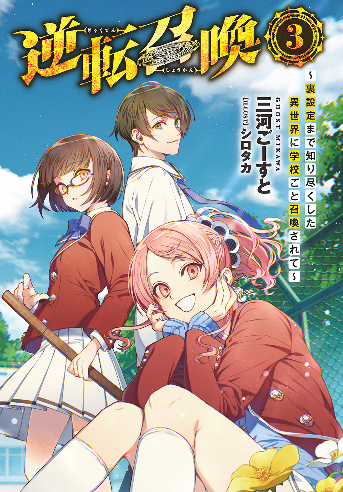

| 逆転召喚 3 ～裏設定まで知り尽くした異世界に学校ごと召喚されて～ | |
| 三河ごーすと | |
この本は縦書きでレイアウトされています。
また、ご覧になる機種により、表示の差が認められることがあります。

 ダッシュエックス文庫DIGITAL
ダッシュエックス文庫DIGITAL
逆転召喚３
～裏設定まで知り尽くした異世界に学校ごと召喚されて～
三河ごーすと
プロローグ 遺伝子の信奉者たち
《セメタリー》――。
一年間、二十四時間、一時たりとも太陽が昇ることのない常闇の国。
妖怪、悪魔、死霊怨霊魑魅魍魎。
古今東西ありとあらゆる負の存在が集まり、せめぎ合い、寄り合い、形成された暗黒の世界。
悪霊の瘴気に汚染された大地からは新たな命が芽生えることはない。王都の中心に建てられた歪な形の塔の頂から絶え間なく流れる呪詛歌が、死霊術士の魔力を運び、死にゆく者を再利用することで命を循環させている。
そんな死せる国家のはずれ――《ＺＯＯ》との国境にほど近い場所に位置する砦に、複数の人間の姿があった。
「最前線に出ていた生徒から連絡がきたぞ、伊織よ。悪魔どもとの戦争はおおむね順調、国土の三十パーセント程が我らの手に落ちたようだ」
大柄な筋肉質の男、金剛司は会議室に入ってくると同時にそう言った。声に勝利を喜ぶような雰囲気はない。
「......貴様の言った通りになったな」
「だろう？」
会議室の奥、動物の骨で組まれた椅子に深く腰かけた、長身白髪の男――彩東伊織は、つまらなそうにそう言った。
「僕には生まれながらに最高の人生と円満な死が約束されている。たとえ相手が悪魔だろうと、定められた未来は変えられない」
「何の疑いもなくそう信じられるのだな、貴様は」
「信じるも信じないもないさ」
くすり、と伊織は笑う。
「世界はすべて僕の都合がいいようにできている――これは事実なんだからね」
「ハッ。好きに言っておけ」
司は鼻で笑うと太い腕を組んで壁に背を預けた。これ以上は何も話すことがないという意思表示である。
「会長。ひとつ懸案事項があります。発言をお許しください」
窓際の席に座っていた女子生徒が軽く挙手をしながら口をひらいた。
赤いカチューシャをつけた長い黒髪の少女で、鼻筋の通った端整な顔立ちをしている。
名前は愛洲琴葉。生徒会の総務執行委員である。
「どんどん言っておくれよ。僕は有能な人間は遠慮してはいけないと思っているんだ。ここにいる人間は、誰もが自分の考えを口にする権利がある」
「では遠慮なく。《セメタリー》の悪魔を拷問した際、彼らのひとりが薄情にも作戦内容を吐きました」
「へえ。良い知らせじゃないか。どうして浮かない顔をしているんだい？」
「その作戦内容が、その......」
「言葉を濁すなんてキミらしくもない。ハッキリ言ってごらんよ」
「ええ......。会長の妹――栞里を、狙っている......と」
伊織の眉がぴくりと動いた。そのわずかな表情の動きを持ち前の動体視力の高さで見切った琴葉は、ぞくりと背筋を震わせる。
しかし次の瞬間、伊織が浮かべたのは怒りの表情などではなく、
「ぷ。あはははは！」
心底愉快そうな大爆笑だった。
「会長......？」
「あはは、いや、ごめん。なんだかおかしくてね。ふふっ、《セメタリー》の悪魔らしい考え方だ。奴ら僕の弱みを握ろうとしたのか」
「え、ええ。おそらくは。栞里を捕らえ、人質にして、我らに進軍を止めるよう交渉するつもりかと」
「親兄弟親戚まで皆殺しにする――ヤクザがよく使う脅し文句だけれど、その脅しを成立させるには、前提条件があるよねえ」
ニヤニヤと笑みを浮かべたまま、伊織は制服の内ポケットから生徒手帳を取り出した。
手帳の中から半分に折りたたまれた写真を抜き取る。
それは、彩東家一族の集合写真だった。
伊織と伊織の兄、弟、姉、妹が大勢、父親と母親、そして祖父母。背景には噴水つきの中庭と大統領官邸かと見紛うほどの大豪邸が写り込んでいる。
一見すると家族団らんの微笑ましい写真だが、よく目を凝らせばとんでもない違和感に気づくだろう。
写真右端。隅に追いやられたような場所に立つ、末妹の顔の部分に、火で炙ったような焦げた穴があいている。
「人質は相手にとってかけがえのない人物でなければ意味がない。あの劣等種の妹を盾にされたところでねえ」
「......それでは、栞里のことは捨て置く、と？」
「もちろんさ。助ける理由がない」
「か、会長の考えは知っています。しかしそれでも一応は妹という存在。むざむざ見殺しにするわけには――」
「違うよ琴葉。これは見殺しじゃない。むしろ栞里にチャンスを与えていると言っていい」
「チャンスを？」
「僕がどうして栞里を残したまま、ほとんどの生徒を連れて学校の校舎を出たと思う？」
「え？ こうしてこの世界の国家を攻め落とし、自分達が安心して暮らせる基盤を作るため、ではないのですか」
「半分正解。軍を作るために生徒たちを洗脳して手駒に変えた。けど、正解はもうひとつあるんだ」
そう言って伊織は、窓の外、荒廃しきった大地に目を向ける。
「魔物や悪魔や超人が跋扈するこの世界――栞里が僕の力を借りず、己と少数の仲間の力だけで生き抜いていけるのだとしたら、彼女の持つ遺伝子もまた天に愛されたものだったと証明される」
「......！ それで、わざと......？」
「まあ興味本位の実験みたいなものさ」
伊織はつまらなそうに言った。
「すべての成功が約束された彩東の遺伝子を、栞里は受け継いでいない。だから、どうせ死ぬ。だが、死ななければ――栞里の持つ遺伝子もまた、彩東の遺伝子と同じく、評価に値する遺伝子ってことになる」
「............」
「おいおいどうしたどうした浮かネェ顔だなァ！ 琴葉ちゃァん、まさか会長の言葉に不満があるってぇのかい？」
会議室の隅でケラケラと小馬鹿にしたような笑い声があがる。声質は軽薄な少年そのもの。しかし、琴葉がギリと鋭いまなざしを向けた先にいたのは、ちょこんと静かに腰かけた幼い見た目の少女だった。
幸薄そうな色素に乏しい髪。
血の気のない真っ白な肌と赤い目。
ネコミミのついたフードを頭にかぶり、召喚前は八月だったというのに、マフラーをまいて口元を隠している。
さらに奇妙なことに彼女の両手には腹話術用の人形がはめられていた。
右手に天使のような真っ白なうさぎの人形。左手には真っ黒な狼の人形。さっき口をひらいたのは、どうやら左手の狼人形のようだ。
「おいおい反抗的な目ェしてんじゃねえよフェンシング少女。伊美ちゃんは副会長なんだぜェ。言わば会長の片腕よォ。片腕。けひひ！」
と、左手狼が笑った瞬間――
ずびし、と。右手のうさぎ人形が痛烈なチョップをかました。
「ヒーくん、片腕なんて言っちゃダメでしゅ！ アタシたちが言ったら『お前が言うな』ってツッコまれちゃうでしゅ！」
「ンだようっぜえな。イイ子のミーちゃんは黙ってねんねしてな。おーよちよち」
「馬鹿にしてるでしゅか！ 殺すでしゅ！」
「おうおう殺せるモンなら殺してみろやァ！ 言っとくが俺様はつええぞォ！ おぉン!?」
左右の腹話術用人形は、ボコスカと互いを殴り合いはじめた。
殴り合いの喧嘩といっても、人形を操っているのは真ん中の少女である。右手と左手で勝手に遊んでいるだけなので緊張感の欠片もない。
殺気立っていた琴葉も、そのあまりに荒唐無稽な光景に毒気を抜かれ、はあと呆れたため息をついた。
「人形館副会長......たわむれはやめていただけますか。私は会長を尊敬しています。その気持ちに偽りなどあるはずがない」
「............」
ピタリ、と人形の動きが止まった。そして、人形館と呼ばれた少女――人形館伊美は、赤い瞳でちらりと琴葉の顔を見ると――
「......（こくり）」
無言で首を縦に振った。
と、そのとき、
「あー、まどろっこしい。イライラすんなぁ。イライラすんぜ」
会議室入口付近の壁に背中を預けていたパンクロッカー風の男子が、派手に染めた頭をガシガシと片手で乱した。
「会長。オレはずっとあの出来損ないのことが気に食わねえと思ってたんだ。アンタの考えもわからないじゃあねえが、あんな女にチャンスをくれてやることはねえだろ。見限っちまえばいいじゃねえの」
「ハハ、阿南は相変わらず栞里に厳しいね」
「たりめーだ。優秀な遺伝子を持たねえ劣等種のくせに、何かになれる気でいやがる......ああいう奴を見てると虫唾が走るんだよ」
パンクロッカー風の男――御陵阿南は吐き捨てるようにそう言った。
「なあ会長よ。この異世界で生き残ることができたら、栞里の遺伝子を認めるとか言ってたが、アイツがどんな理由で死んじまっても、アイツは不合格ってことだよな？」
「そうなるね」
「へっ。それだけ聞けりゃ充分だ」
阿南はくるりと背中を向けて、部屋の外へと足を向けた。
「栞里を殺すつもりかい？」
「いや、試すだけだ。オレがイライラさせられるほどの価値があんのかどうか、さっさと見極めちまいたいんだよ」
「ふうん......。まあ好きにするといい。僕は優秀な人間の決定を邪魔したりしないからね」
「ああ。好きにさせてもらうぜ」
「ま、待て阿南！ 何を勝手な！」
「うるせえ。会長から許しが出てんだろうが。今更ゴチャゴチャ言われてもオレは引かねえぞ」
琴葉の制止の声に、しかし阿南は立ち止まることはなかった。
勢いよくドアをあけて、会議室を出て行く。
「くっ......」
伸ばした手が行き場を失ったように宙をさまよう。
琴葉は唇を嚙み、ちらりと伊織の方を一瞥した。
「会長。私は――」
「好きにしなよ。何度も言うけど、優秀な人間は遠慮などしてはいけない。ここにいる全員の自由意志を、僕は尊重するよ」
伊織は両手をひろげてそう言った。
慈悲深さを感じさせるその仕草に、琴葉はホッと息をつき、
「阿南を追いかけます。私は、奴の過激な思想には同意できませんから」
阿南の後に続いて部屋を飛び出した。
会議室に残されたのは、彩東伊織、金剛司、人形館伊美の三人。
伊織は他の二人の顔を見てニコリと笑みを浮かべる。
「――面白いトリガーを引いてしまったかもしれないね。これがどんな結果をもたらすか、すこしだけ興味が湧いてきたよ」
第一章 黒死龍、現る
僕たちの通う学校には大きな屋外プールがある。
校舎からすこし離れた場所。運動場のすぐ隣。部室棟と併設されるような形で。
プールと外周をさえぎる金網の柵はそれほど高くない。ときどきサボりの運動部員が女子水泳部の水着姿を覗き見る事件が発生するほどだ。
しかし、召喚されてからはほとんど手入れしていないこともあり、柵にはびっしりと植物が繁茂していて外からではプールの中の様子が覗けなくなっている。
さて。そんな屋外プールだが、今は異様な賑わいを見せていた。
「うおおおおおお！ このような水遊びがあったとは！ 何故、今まで《ＺＯＯ》にこの文化がなかったのか！」
ゴブリンのモズが感涙しながらプールで泳いでいる。モズだけじゃない。他にも、理性ある魔物たちが思い思いに遊んでいた。
ぎらぎらと煌めく太陽のもと、涼しげな水のしぶきを浴びながら。
この『クレストサーガ』の世界には四季ではなく、日本における夏に相当する暖季と、冬に相当する寒季が存在するのだが、今は暖季。一年中太陽の光が届かない《セメタリー》以外の国は、日差しの強い季節だ。
そこで、日ごろ世話になっている《ＺＯＯ》の住民を招いて、学校のプールで涼をとってもらおうと考えたのである。
発案者は遊子。さすが召喚前はギャルをやっていただけあり、人付き合いにかけては一流だ。僕らのパーティーの中でも群を抜いている。
まあ、今回の場合、相手は人じゃないんだけど。
ちなみにプールの水はもともと溜まっていた水に栞里の《祝福》をかけることで綺麗にしている。
「いつもありがとう、彩東さん」
僕はプールサイドの金網に背中を預け、隣の栞里に声をかける。
「異世界生活する上で、誰かひとりは持っててほしいスキルだよね、《祝福》」
「一家に一台の家電みたいな扱いね」
栞里は唇をむっととがらせる。
「大事な役割だよ。うちの祖父さんも、現代人がもしも異世界に飛ばされたとき、一番問題になるのは衛生面だと生前に言ってたし」
「たしかに。日本はとても清潔な国だものね。東南アジアや後進国に旅行するなら体調不良と下痢は覚悟するべき――って、旅行マニュアルに書かれていたわ」
「彩東さん、海外旅行に行ったことあるの？」
「いいえ。ないわね」
「あれ？ 行ったことないのに旅行ガイドを読んだんだ」
「活字ならわりと何でも読むわ。それに、旅行ガイドを読みながら、グーグ○アースで現地の画像を眺めるとちょっとした旅行気分を味わえるのよ。オススメ。柏木くんも、今度試してみるといいわ」
「試せるときが来るかなぁ」
気の遠くなる話だ。
ここは異世界。
『クレストサーガ』という小説と同じ設定が反映された不思議な世界。
当然、ネット環境なんかあるわけもなく。
この世界に召喚されてからもうひと月以上の時が経つけれど、いっこうに元の世界に帰るための手がかりはつかめていない。
「でもこの世界にグーグ○アースは必要ないかもしれないわね」
「え、どうして？」
「だって、この目で見える景色がすでにファンタジーなんだもの。わざわざ遠い土地に行ったつもりにならなくても、充分、非日常を味わえるわ」
魔物たちが泳ぐ姿に目をやりながら、栞里はすこしだけ声を弾ませた。
僕は笑う。
「非日常に満足してるなら、小説はもういらないかな？」
「柏木くん。答えをわかっているのに、わざと意地悪な質問をしているでしょう」
「彩東さんのしゃべり方のクセがうつってるのかも」
「意地悪にも程があるわ」
また唇をとがらせる。
僕は地味に栞里のこの不満げな表情が好きだったりする。
いつも余裕があって、超然としたクールな彼女だからこそ、こんな風に子どもっぽく拗ねてみせる顔がかわいらしく思えるのだ。
だからこうしてつい意地悪を言ってみるのだが、あんまりやりすぎて本格的に怒らせるのも怖いので、ここらへんでやめておこうと思う。
「物語は必要よ。今でこそこの世界は新鮮なフィクションの世界だけれど、一年も暮らせば、きっとこの世界こそが私たちにとっての普通に為り変わる」
「そうかもね」
「そうなったら、もうここはフィクションの世界じゃない。そしたら私はまた無限の世界を求めて本を求めるわ」
「ハハ。こんなに本を愛してる女の子には、初めて会ったなぁ」
「私も、柏木くんほど本気で物語に向き合ってる人とは初めて会ったわ」
「そんなに本気かな」
「お祖父さんの作った裏設定を余さず覚えているなんて、普通の人にはできないわ。深くまで読み込んで、自分の中に落とし込んでいる証拠よ」
「まあ......そう言われれば、そう、なのかも？」
「ふふ。本当、あなたが自分で紡ぐ物語がどんなものになるのか、楽しみで仕方ないわ」
わずかな興奮の伝わる赤い顔で栞里はそう言った。
「約束、いつか絶対に果たしてもらうから」
そう言って、栞里はいたずらっぽく目を細める。
ああ......『クレストサーガ』の続編プロットの語りが終わったら、僕の物語を聞かせる約束をしてたんだっけ。
うん、まあ......いずれね。いずれ。
「あー！ ミナトさんとシオリさんだー！」
と、そのとき。
無邪気な声とともに小さな魔物が数匹、ちょこちょこと僕たちの方に駆け寄ってきた。
僕らの膝下までの背丈しかない小さな魔物たちだ。
ゴブリン、スライム、コボルト。
それら低級の魔物――その、子どもたちだ。
「《キャッスル》の英雄を倒した《ＺＯＯ》のヒーローだっておとーさんが言ってたよ！」
「うちのママも言ってた！ みんなすっごく強いんだよね！」
「マリカさんはぼくとー？ で、ずばばばって敵を倒して、ユウコさんは炎をぼぼーんと出して、エマさんは、えっと、なんだろう？ おとーさん、教えてくれなかったからよくわかんない」
あはは。サキュバスの能力は説明しにくいか。
人間も魔物も性教育が大変なのは同じらしい。
「でも、そんなすごい人たちをまとめてるミナトさんとシオリさんが一番すごいって言ってたよ」
「うん、うちのママも！ 特にシオリさん！ 神龍の紋章持ちは特別なんだよね！ 天から与えられた最高の才能！ えへへ、かっこいいなぁ」
「......ッ」
栞里の口元が強張った。
が、それはほんの一瞬の出来事だったので、気づいたのは僕だけだったようだ。魔物の子どもたちは変わらず無邪気な目を向けている。
すぐさま表情を繕った栞里は、いつもの得意げな顔になって子どもたちの頭を撫でた。
「励みなさい。そうすれば私のように優秀な大人になれるわよ」
「うん！ がんばるー！」
「ふふ。素直でいい子ね。ねえ、柏木くんもそう思わない？」
「同意なんだけど、彩東さんの言葉には裏を感じるなぁ」
僕は苦笑する。
それからしばらく魔物の子どもたちは僕と栞里を囲んで、無邪気な笑い声をあげていたけれど、両親らしき魔物に呼ばれると、素直にプールの方に駆けていった。
静かになった後、僕はふと栞里の横顔を見る。
......なんとなく、複雑そうな表情。
さっき一瞬だけ見せた違和感はやはり気のせいではなかったらしい。
「彩東さ――」
「おお、いたいた、ミナト殿。探したぞ」
僕が口をひらきかけたとき、大人びた口調ながら幼くも聞こえる声に呼ばれた。
言いかけた言葉を呑み込んで振り返ると、そこには金髪と長い耳が特徴的な幼い少女がいた。
《ＺＯＯ》の長老――ララノアである。
「取り込み中すまないが、ちと急ぎで大事な話がある。わしと一緒に来てくれないか？」
人目をはばかるように低い声でララノアは言った。
僕が目配せすると、栞里はうなずく。
「私は大丈夫だから、行ってちょうだい。彼女が大切な話と言うからには、きちんと聞いておいた方がいいわ」
「ありがとう。行ってくるよ」
僕はうなずいた。
でもララノアがここまであらたまって話をするなんて初めてだ。
一体、何の話だろう？
†
僕はララノアに連れられて体育館裏にやってきた。
あたりに人の気配はなく、魔物の声もここまでは届かないようで、とても静かな場所だった。
ララノアは体育館のざらついた壁に背中を預け、僕は彼女の前に立った。
告白シーンか？ と、思いたくなるような位置関係。
でもそんなことはありえない。何せ相手は魔物の国を統べる長老。僕なんかに告白するような人じゃない。
「ミナト殿だったら大歓迎じゃよ？ わしもそろそろ百年後を見据えて、跡継ぎを作ろうかと考え始めている頃合いだしの」
「......僕の思考を読んでからかうの、やめてくれません？」
「フフ。ういのう」
ララノアはにっと口元をゆるめて肩をゆらした。
くっ。見た目は完全に幼い子どもなのに、年上のお姉さんに手玉に取られてるような感覚になるな。なんとなく、くやしい。
「しかし、わしも信用がないのう。たしかにからかい半分の言葉だが、もう半分は本気だったりするのだが」
「ら、ララノアさん？」
僕はびくりと震える。
目の前で僕を見あげるララノアの目が、じっとりと熱を帯びていたから。
「貴殿は非常に興味深い存在でな」
「え......っと......？」
「全知全能の神からたまわった《精神感応》スキルのおかげで、わしは生まれてこの方、底の知れない相手と出会ったことがなかった。初対面でも心の中が見えるゆえ、驚かされるということはあり得なかったのじゃ」
しかし、とララノアは続けた。
「ミナト殿の心の中に在る、この世界にかんする数多の知識――それは、わしが理解し、認識しているレベルを遥かに超越していた」
「それは、まあ」
「驚いたよ。わしは無駄に歳を重ねた自覚があるし、そのぶん、他の者よりも多くを見聞きした自負もある。だが、貴殿の知識量には遠く及ばないと思い知らされた」
ひとつ言葉を区切り、彼女は続ける。
「まるでこの世界を創りたもうた、全知全能の神の化身が、目の前にいるのかと......そう錯覚させられるほどに」
「............」
いやまあ、当たらずとも遠からず、というか。
全知全能の神であるところの作者様が、僕のお祖父さんだからね。
まあ、ララノアは『小説』がどんな存在かも理解できていないし、僕とこの世界のかかわりにもピンときていないだろうから、この思考を読み取っても意味不明なんだろうな。
「ああ。正直、意味不明だの」
「ですよね」
「まあとにかく貴殿には驚かされたのだ。生まれてから初めての驚きだった。ところでミナト殿なら知っておるかもしれんが、驚かされたときのドキドキと、恋をしたときのドキドキは、体にとっては同じことらしいぞ？」
「......ララノアさん。えっと、つまり、何が言いたいんですか......？」
ララノアの顔に自然と目が吸い寄せられる。
白い頰が微妙に赤い。
瞳は濡れ、唇の隙間から漏れる吐息も、どこか熱い。
そんな姿を見ていたら、僕は、体の内側からじゅっと熱がこみあげてくるのを自覚した。
心臓が忙しく騒ぎはじめる。
ええと、このシチュエーション。僕はいったいどうすれば――
「とまあ、それはさておき」
「あの、ララノアさんの気持ちはうれしいんですけど。その、いきなり跡継ぎとか、伴侶とか言われても、正直困るといいますか、その――って、え？」
「今のはただの雑談じゃ。本題は別にある」
ララノアはあっさりとそう言った。
あらためて彼女の顔を見てみると、いつもの余裕たっぷりの笑みを浮かべている。
さっきの赤ら顔はすっかり鳴りを潜めていた。
な、なんだ。やっぱりからかわれていただけか。
ホッとしたような、釈然としないような、微妙な気分になりながら僕は話の続きを聞くことにした。
「驚かせないでくださいよ......。で、本題って何ですか？ こんな人気のないところに呼び出したからには、何か大切な話ですよね？」
「うむ。ちと由々しき事態でな」
さっきまでのおふざけムードとは一転。ララノアは真剣な表情で告げる。
「実はここ最近、《セメタリー》の守護神である黒死龍が各国の上空を徘徊しているらしいのだ」
「黒死龍が？」
僕の声がうわずった。
「やはりミナト殿は黒死龍の存在も知っておったか」
「ええ。黒死龍は死と病をまき散らす災厄の龍――《セメタリー》の汚染された国土こそ、彼にとって最高の住環境であるため、めったによその国に姿を見せることはないという設定のはずです」
「さすがミナト殿、よく知っておる」
ララノアはうなずいて、
「《セメタリー》は国交を閉ざしていてな。良くも悪くも他国には干渉しない国なのだが、ここ最近は《セメタリー》のある東の方角から何やら嫌な空気が流れてきている。死の気配というよりは、そう、『戦争』の気配とでも呼ぶべきか」
「戦争......」
「この世界では《アンティゲーム》を除いて国家間の戦争はほぼなくなっておる。だが――」
「異世界に来た生徒の影響で起こりうる」
「そういうことじゃ。わしらはそのことをよぉく知っておるからの」
「でも、《セメタリー》か......。他の国ならともかく、どうして《セメタリー》で戦争が起こるんだろう」
《ＺＯＯ》と《キャッスル》の戦争には、原作である『クレストサーガ』の設定からすでに火種があった。
英雄の国と魔物の国は百年以上も前からずっといがみ合っていたんだ。
生徒の影響で物語の設定を逸脱することはあっても、その変化は必ずもともとの設定に根差している。
だけど《セメタリー》だけは戦争とは無縁の国のはずなんだ。
何故ならあそこには他国が羨むような資源や土地はない。
あの汚染された土地は悪魔やアンデッドにとって暮らしやすいが、他の種族にとっては毒でしかない。
侵略する価値のない土地だ。
逆に《セメタリー》の住民は、生命力あふれる他国の土地に、一時的に足を踏み入れることさえ嫌がる。
たしかに悪魔は知恵も回り、魔法も操る厄介な種族だ。敵に回せばこれほど怖ろしい相手はいない。
だけどその実、『クレストサーガ』の世界において最も戦争から縁遠いのも《セメタリー》だったはずなんだ。
「ミナト殿の言うとおり、悪魔どもはめったに他国とかかわらんが、いざちょっかいを出されれば、相手をせん滅するまで戦うだろう。何者かが先に《セメタリー》に喧嘩を売ったのではないか......と、わしは考えておるよ」
「誰かが？ ......まさか」
「うむ。そんなことをする可能性があるのは、ミナト殿と同じ学校とやらの生徒じゃろうな」
ララノアは真剣な目をしてうなずいた。
「でも、どういうことだろう......。生徒たちにとっても、わざわざこの世界の住人を敵に回すメリットなんかないはずだし。召喚されたばかりの混乱の中で魔物と対立することになったんならわかるけど、わざわざ《セメタリー》にまで押しかけて戦争を仕掛けるなんて。その行動に何の意味があるんだ......？」
「さてな。わしにもまるで想像がつかんよ」
ララノアが肩をすくめる。
「だが黒死龍が各国の上空を飛んでいる事実は気になる。もしかしたら、生徒と同族の貴殿らを探し、危害を加えるつもりかもしれん」
「なるほど。ありえない話じゃないね。《セメタリー》は戦争から縁遠いけれど、いざ戦争が始まったら、もっとも冷酷で、容赦なく相手を殺せるのも、悪魔だ。彼らなら、生徒の仲間を根絶やしにしてくる」
「そういうことだ。くれぐれも気をつけるのだぞ。黒死龍の接近を警戒するには――」
「風にかすかな腐敗臭が混ざっていたら危険――だね？」
「ふっ。さすがじゃな」
「その場合は屋内に逃げ込むように、他のみんなにも周知徹底しておくよ」
「それがいい」
ララノアはこくりとうなずくと、壁から背中を離して、立ち去ろうとした。
僕はその背中を呼び止める。
「あ、ララノアさん！」
「ん？ まだ何かあるのか？」
「いえ。貴重な情報、ありがとうございました。いつも本当にお世話になって......どうお礼をしたらいいのか」
「ああ、なんだそんなことか。まったく水臭い男だの」
ララノアは、くくと肩をゆらして笑う。
「貴殿らは《ＺＯＯ》の庇護下にある。長老であるわしが守るべき相手だよ」
「ララノアさん......」
「さあ、雑談はここまでじゃ。ミナト殿に用事があるのはわしだけじゃないようだしの」
「え？」
ララノアの意味深な笑みの理由がわからず、僕は瞬きした。
と、そのとき――
「お。ミナトじゃーん！」
遠くから明るい髪色の女子――遊子が弾んだ声をあげながら走ってくる。
服装はいつもの制服姿。しかし右手に何か変なものを持っている。チアリーダーが使うポンポンに似ているけど......何だあれ？
「何やってんのこんなトコで？ あ、もしかしてララノアたんと密会ー？ ほどほどにしとかないと、しおりんに殺されるぞー」
「そんなんじゃないよ。って、どうしてそれだけで殺されるのさ」
「え。わかんないの？ マジで？」
「え？ 普通はわかるの？ 今の話の流れで？」
「うっはー！ これだからなー！ まあしおりんは、この天然っぽいところも含めて、ミナトを気に入ってるんだろうけどさー」
「クク。本当に面白い子どもたちだな、貴殿らは」
僕と遊子のやりとりを眺めていたララノアは、堪えきれないように吹き出した。
「では、わしは行くよ」
「あ、ごめんねララノアたん。水差しちゃった？」
「いや、ちょうど話が終わったところだよ。あとは若い二人で楽しむといい」
クスクスと笑いながら、ララノアはプールの方向へと立ち去った。
......よくわからないけど、なんとなくからかわれてる気がする。
ララノアの《精神感応》スキル、僕も欲しいな......。
「で、遊子。僕に何か用？」
まあいいやと気を取り直して、僕は遊子に向き直った。
遊子はぽんと手をたたく。
「ああ、そだ。実はマリリンを探してたんだけど――」
「武田さん？ そういえば、朝から姿が見えないね」
「んや、さっきまでアタシと一緒にいたんだけどね。逃げられちってね」
「逃げられた？」
「そうなの！ せっかくアタシが大変身させたげようってのにさー」
腰に手を当て頰をふくらませる遊子。
その片手に持っているポンポンみたいなものは、よく見ると、ロングヘアのウィッグだった。
「もしかしてそれをかぶらせようとしたの？」
「正確にはもうかぶらせたよ。黒髪ロングのウィッグ。こっちのちょっとだけ髪色が明るいやつも試してもらおうと思ったら、いつの間にか消えてたんだよねー、マリリン」
「あはは......楽しそうだね」
遊子は召喚される前はカリスマ読モだったらしいから、おしゃれには血が騒ぐんだろう。
前々から麻梨果のことを「素材はいいのに地味にしててもったいない」と言っていた。
このお祭りムードに乗じて、自分好みのメイクでおしゃれさせてしまおうって魂胆か。
麻梨果、今のままでいいって言い張ってるもんなぁ。
それなのに遊子に追いかけ回されて、大変だ。
「んー」
「ん？ どうしたの、遊子」
「いや、ミナトもきれいな顔してるなーと」
「は？」
遊子はまじまじと僕の顔を見つめている。
......やばい。何か嫌な予感がするぞ。
「うん。やっぱり」
遊子は真剣な顔でうなずいた。
「ミナトも似合いそうだよね――ロングヘアのお嬢様スタイル」
†
これが......僕......!?
女子更衣室。
鏡には驚きに目を見開く女の子の顔があった。
やや明るめの長い髪。
柔和そうな目元。
薄く化粧を施された肌は白く、儚げな印象さえ抱かせる。
着ているのは男子の制服だし、胸もまったくない。
だけど、スレンダーな体型の女子が男装しているのだと言われたら即座に納得してしまうだろう。
「思ったとおり！ 超似合ってるじゃーん♪」
この大変身の仕掛け人――遊子は僕の顔のすぐ横で上機嫌に声を弾ませた。
僕は素直に感心して、
「顔って、化粧でこんなに変わるものなんだ」
「驚いた？ まるで新しい自分に転生した気分でしょ。女の子は魔法使いなんだよねー」
「え。じゃあ他のみんなも？」
「いやそれが腹立つことにしおりんもエマっちもマリリンもすっぴん族っていう。何もしなくてもかわいいとかマジ反則。アタシにとっては、そっちのがよっぽど魔法だわ」
遊子はげんなりした様子でそう言った。
「そういえば遊子が化粧を落としたところ、見たことないな......」
「さすがに寝る前には落としてるよ。夜になれば電気点かないから暗くてよく見えないだろうし、まあいいかなって」
「なんだかんだで遊子のすっぴんも普通にかわいいんじゃないかと思うけど」
「無理無理マジ無理！ てかデリカシーないこと言うなっての！」
「ご、ごふぇん」
頰をつねられて、僕の口から力の抜けた声がもれる。
......しかし、なんというか。
さっきから近いな。顔。
僕の顔にファンデーションを塗るために接近した距離のまま、なかなか離れてくれない。
香水の匂いがダイレクトに鼻の奥をくすぐる。僕をそういう異性として見ていないからって、いくらなんでも無防備すぎるだろう。
こうして近くで遊子の顔を見ると、やっぱり整っていてきれいだな、と思う。
この世界に召喚される前は、いわゆるギャルと呼ばれるような、明るくて華のある人種はまったくの別次元の存在だと思っていた。
だけどいざ仲良くなってみると、情けなく泣いたり、からかわれて怒ったり、僕の知る人間と何も変わらない。
ギャルという看板をかかげているだけで、その中身までステレオタイプのギャルだって人は、逆にそんなにいないのかもしれないな。
――などと考えていると、ふと僕の視界に「それ」が入ってきた。
「ぬあっ!?」
思わず声が出た。
僕はメイクを施される側なので、おとなしく椅子に座っている。そして遊子はもちろん立っている。

そんな遊子が僕に顔を近づけている今、当然、彼女は前かがみになっているわけで。
もともとゆるいシャツの胸元から下着に包まれた、つつましやかな胸が見えているわけで。
僕の声と視線で遊子はハッとした顔になる。
「ば、バカ！ どこ見てんのっ」
顔を髪の色と同じくらいに赤くして遊子は体を離した。
「ご、ごめん」
「まったく。しおりんという者がありながらこの男は」
赤い顔をそむけて唇をとがらせる。
どうして栞里の名前が出てくるのかはやっぱりわからないけど......なんとなく怒られそうな気がするので、訊ねるのはやめておこう。
「でも、さっきララノアさんと僕が密会してるとか言ってたけど、今の状況も密会みたいなものだよね。この部屋には僕と遊子しかいないし」
口にしてから、あれ？ 今いらないこと言った？ と思った。
胸を見てしまった照れを隠したくて何か話をしなければとあわてて話題を探したんだけど、これはまずったかもしれない。
「............」
ああ、やっぱり。
見れば、遊子の顔がさっきよりもさらに赤くなっていく。だらだらと汗が流れて、口をあわあわと震わせている。
「な......な......何言ってんの!?」
「痛い！ 痛い痛い！」
遊子の連続張り手でバシバシと背中をたたかれて、僕は軽い悲鳴をあげた。
「アタシらはそーゆーんじゃないじゃん！ ただの友達じゃん！ いきなり変なこと言うなっての！」
「い、今のは僕が完全に悪かった！ だから勘弁し......痛い！」
「ホントやめてよ、もう。アタシそーいう経験とかあんまり、その、アレだし、妙なこと言われると変な勘違いしちゃうからさ」
遊子は指先で髪をいじりながら曖昧なことを言う。
「そーいう経験って......え？ 遊子、彼氏とかいたことないの？」
「な、ななな、なワケないっしょ!? もう百人ぐらいの男を弄んできたっての！」
「......本当に？」
僕がじと目になると、遊子は、う、と言葉に詰まった。
そして深々と頭を下げる。
「......すんません。見栄張りました」
「やっぱり」
「仕方ないじゃん。そもそもどうやったら男子と出会えるんだって話」
「普段はギャルグループにいたんじゃないの？ そういうグループって、わりと男子とも話してる印象なんだけど」
「やー、ああいうグループとは表面的に付き合ってただけだからなー。それに、あの子たちと仲が良い男子ってどいつも怖いっていうか、生理的に受けつけないタイプが多いし」
「へえ、そうなんだ」
「かと言って、それ以外の男子とは話す機会もないから、どんな人がいるかもよくわかんないし」
「あはは。僕みたいなタイプは、まず女の子に話しかけようなんて発想がないからね」
「だからかー。なんで今までミナトみたいな男子と会ったことなかったんだろ、って不思議に思ってたんだよね」
「じゃあ、遊子の目から見たら僕って珍しいタイプだったんだ？」
「そりゃもうレアよレア。激レア。違う世界の住人とかそういうレベル」
驚いた。
僕にとって、華やかなギャルが遠い世界の住人だったように、遊子にとっても僕みたいなふつうの男子は、まるで接点のない未知の存在だったのか。
「こんなことなら教室の隅っこで読書ばっかりしてる男子と、もっと仲良くなっとけばよかったかなー」
「どうだろう。読書家がみんな似た性格ともかぎらないんじゃないかな」
「あ、たしかに。同じ本好きでもしおりんとミナトじゃ全然性格違うもんね。ミナトはあんなにねじくれてないし」
「あはは。相変わらず仲がいいなぁ、ふたりは」
遊子と栞里が互いに悪口を言い合う姿は、実は僕はけっこう好きだったりする。
あまりにも言い合いがエスカレートしたらさすがに止めるけど。
基本的には、彼女たちの仲の良さを象徴していると思うんだ。
自由気ままに悪口を言い合えるのは、決定的な仲違いに発展してしまわないラインを知っているからこそだろう。
「そういえば、ふたりは幼なじみなんだっけ。いつからの知り合いなの？」
「んーと、小学校の低学年ぐらいだったかな。あんとき特撮とか漫画に出てくるヒーローに超あこがれててさ、いじめっことか見つけたら片っ端から成敗してたんだよね」
「やんちゃしてたんだ。ちょっと意外」
「まあね。そんときにいじめられてたしおりんを助けてさ。それで仲良くなったんだー」
「彩東さんが、いじめられてた......？」
思わず訊き返していた。
それぐらい意外だった。
あんなに心が強くて、常に毅然としている栞里がいじめられている姿なんて想像できない。
「にしし。バラしちゃおっと♪ あの子、昔はめっちゃ泣き虫だったんだよ」
遊子はいたずらっ子のように笑いながらそう言った。
「今でこそ超優等生だけど、昔は運動も勉強も全然ダメなどんくさい子でさ。それでいじめっ子にからかわれてたんだよね」
「全然想像できない......運動がダメなのは今も変わらないけど」
「でもアタシと仲良くなった後から、めちゃくちゃ勉強するようになってさ。学校の成績はどんどんあがってって、気づいたらだーれも敵わないところまでいっちゃった」
遊子の目が遠い過去を懐かしむように細くなった。
そうか。栞里が――
もしかしたら僕やエマ先輩のいじめられていた境遇に、あんなに強く同調してくれたのは、そんな過去があったからだろうか。
そういえば、さっき栞里の様子がおかしかったけれど、幼なじみの遊子なら何か心当たりがあるんじゃないか？
「遊子。ちょっと訊きたいことがあるんだけど」
「ん？ なになに？ なんでも訊きたま――えっ」
遊子の語尾が乱れた。
――突然、火山でも噴火したのではないかと思わせるほどの、大きな音が鳴り響いたからだ。
「な、何、今の音!?」
不安げな顔になって、遊子は窓に駆け寄る。
僕も立ちあがり、遊子に続いた。
「森の方だ！」
音はたしかにそちらの方角から聞こえた。
何だ？ 何が起きている？
†
湊と遊子が大きな物音を聞くよりもすこし前――
武田麻梨果はひとり森の中を歩いていた。
眼鏡をかけ、右手に木刀を持ち、しきりに背後を気にしながら早足で先を急いでいる。
まるで何かに追われているかのようだった。
足を動かすたびに、彼女の腰まで届く長い黒髪が風になびく。
曲がりくねったけもの道を進んでいくと、木々が途切れ、拓けた場所に出る。
川だ。
いつも彼女たちが夕食用の魚を釣りにくる場所。
川辺に立った麻梨果は、水面に映し出される自分の姿を見て、軽くため息。
「誰ですか、これ......」
――まったくひどい話だ。大事な話があるなんて大真面目な顔で言われたから、どんな深刻な話をされても動じないように、しっかり心の準備をしていたのに。
女子更衣室に到着するなり、メイクをしてきたり、ウィッグをかぶせてきたり、人のことを着せ替え人形みたいに......。
「こんなの、もっと似合う人にやればいいのに」
不満たっぷりのひとり言がもれる。
が、彼女の視線は水面に吸い寄せられたまま、そらせなくなってしまった。
黒髪のロングヘアなんて何年ぶりだろうか。栞里みたいな美人系の女子ならピッタリかもしれないが、自分みたいに背も小さく、幼児体型の女子には似合わない......そんなふうに、麻梨果は思っていた。
だけどあらためて見てみると、意外と悪くないような気がする。
他人に誇るのではなく、自分でひそかにそう思うくらいはいいだろうと、麻梨果はわずかに口元に笑みを浮かべた。
「先輩たちには、こんな顔は見せられませんね......」
水面に映る自分の微笑に、麻梨果はそんなつぶやきをこぼした。
そのとき。
「......？」
ふと、鼻先を妙な臭いがかすめた。
生ゴミや腐った肉などありとあらゆる腐敗したものを凝縮したような不快な臭いだった。
臭いの出どころは？
麻梨果は目を細め木刀の柄を強く握り直し、周囲を見渡した。
と、ふいに、あたりが暗闇に包まれた――ように、麻梨果には感じられた。
麻梨果の半径三十メートルほど。
この、拓けた場所全体を覆い尽くすかのように、円形の影が投げかけられていた。
――上！
麻梨果は即座に上空を見あげ――硬直。
眼鏡の奥の瞳を大きく見開き、言葉を忘れてしまった。
――ハエの大群？
麻梨果がとっさにそう考えたのも無理はない。
何故なら、上空を旋回するその黒く巨大な影は、細かい黒い粒子の集合体だったから。
遠くから見ればイナゴやハエの大群とよく似ている。
しかし虫の大群特有の、背筋をぞわりとさせる不気味な羽音は聞こえない。
どちらかといえば、どっしりと重たい羽音を轟かせていた。
その羽音と、だんだんと近づいてくるその影を見て、麻梨果はすぐに考えを変えた。
ハエなどであるはずがない。
それは、黒いガスを飛散させながら空を悠々と飛ぶ――黒き龍。
「くっ！」
敵の正体を認識した瞬間、麻梨果は後ろへ跳んだ。
もともと麻梨果の立っていた場所に、その巨大な龍が舞い降りる。着地の衝撃で周囲の木々がなぎ払われ、川がしぶきをあげる。
足が地面に深く食い込むほど踏んばって、麻梨果は衝撃波に耐えた。そして、
「《闘気鋼殻》！」
即座にスキル名を口にする。同時に彼女の全身と右手に持つ木刀が白い気の塊に包まれた。
あらゆるものの硬度をオーラで強化し、何の変哲もない木刀と制服でさえ神器級の業物に変える、反則的なスキルだ。クー・フーリンの紋章を授かった彼女だけが使える、英雄の力である。
眼鏡のスペアを手に入れたことで、いままで眼鏡の保護に割いていた力を、攻撃力と防御力に転化する――麻梨果は、そのイメージを強く頭の中に思い描いた。
「ほう。この力。そして、我を怖れぬその瞳――」
黒き龍は牙の生えそろった口をわずかにひらいて、低いうなり声をもらした。ぎらりと輝く赤い瞳は好奇心たっぷりに麻梨果をねめつける。
「貴様、よもや龍をも殺したことがあるのでは？」
「意味不明です。魔物とは戦いますが、あなたみたいな規格外の怪物とは会ったことがありません」
「ふむ。それにしてはその瞳、怖れや怯えといった感情が読み取れないのだが」
「くさいのは嫌ですけど。勝てない、とは思わないので」
「ふ、ふははははははははは。この黒死龍を前にして、なんと不遜！ なんと命知らずな少女か！ なるほど、我らが龍の宿敵、ゲオルギオスが一杯食わされたというのは、どうやら本当らしいな！」
「......？」
麻梨果は黒死龍の言葉に違和感を覚えて眉をひそめた。
たしかに《キャッスル》とのゲームでゲオルギオスを騙し、勝利をつかみとったのは麻梨果たちだ。
しかし黒死龍の言葉は、まるで麻梨果自身がその作戦を主導したかのように聞こえる。
実際は栞里の功績なのに――
「だが、我にはブラフなど通用せん！ 全身全霊で当たらせてもらうぞ！」
居丈高に叫ぶと、黒死龍は両翼を広げた。
「!?」
黒死龍の全身を目の当たりにした麻梨果が、はっと息を呑む。
異様な姿だった。
黒死龍の肉体は――いや、およそ肉体と呼べる部分はほぼ残っていない。肉という肉は腐り、削げ落ち、太い骨が何本も突き出ている。
それは死後何百年も経過した屍のようで、まるで龍の死骸が意思を持って動いているかのようだった。
顔も、半分は元の龍の威厳あるものだが、もう半分は溶けた肉がむき出しの、不気味な貌である。
体の至るところから噴き出すガスが、骨や肉といったパーツをつなぎ留める接着剤のような役割を果たしているらしかった。
「グラアアアア！」
黒死龍は大きくあけた口から紫色のブレスを吐き出した。
その攻撃に対して、麻梨果はとっさに手近な木の上へと跳躍する。
彼女の足元で地面や木々が、ブレスに触れるなりつぎつぎと腐敗し、朽ちていく。まるで数百年の時間をむりやり経過させられたかのようで、麻梨果が飛び乗った木の根本も、バリバリと音を立てていた。
「我が腐敗のブレスを避けるか！ ならばこれはどうだ！」
黒死龍が翼を大きく羽ばたかせる。
腐敗臭を伴った風が渦巻き、とんでもない大きさの竜巻が生じる。
「さすがの貴様も四方八方から迫るこの竜巻はかわせませい！」
「......っ」
麻梨果は息を呑み、目の前の巨大な竜巻を見つめた。
あらゆるものに腐敗をもたらす嵐は、徐々に包囲網を縮め、麻梨果の小さな体を飲み込もうとする。
次の瞬間――
「はあっ！」
掛け声とともに麻梨果が木刀を思い切り振り抜くと、竜巻は真っ二つに斬り裂かれ、あっという間に雲散霧消してしまった。
「な......あ......？」
これには黒死龍もあんぐりと口をあけ、硬直する他ない。
当然だろう。
麻梨果はただの剣圧だけで黒死龍の大技を打ち払ってみせたのだ。そんな芸当ができる人間に、黒死龍は会ったことがない。
彼に驚愕している時間はなかった。
麻梨果は竜巻を搔き消すと同時に枝を蹴り、高々と上空へ飛びあがっていた。あまりの速さに、黒死龍は完全に標的を見失っていた。
太陽を背に、高速回転しながら落下してくる剣士の姿に気づくことができず、回避行動も取れない。
「面！」
剣道の掛け声と同時に麻梨果の木刀が黒死龍の額にたたきつけられた。
骨と腐肉で構成された黒死龍の顔面は、重力と回転と英雄の力で威力が増幅された一撃に打ち抜かれ、粉々に砕け散った。
「ぐおおおおおおおお!? 馬鹿なっ、強すぎる......！」
麻梨果の斬撃の衝撃と、黒死龍が地に伏すときの衝撃で、森の木々が激しくゆれる。
黒死龍が着陸したときの倍、いや三倍はあろうかという轟音を響かせ、地面には大穴があき、川は地味に氾濫した。
「............」
地面に降り立った麻梨果は、しばらくの間、自分が起こした大災害を目の当たりにして呆然と立ち尽くした。
そして、困ったようにため息をつく。
「どうやらやりすぎてしまったみたいですね......。先輩たちに、どう説明したものか......」
†
僕と遊子が大きな物音につられて校庭に出ると、すでに栞里とララノアとエマ先輩の姿があった。
他にも数匹の魔物たちが、森の方を見てざわついている。
「ミナト！」
エマ先輩が僕たちに気づいて駆け寄ってきた。
「エマ先輩！ 何があったんですか？」
「わかりません......ワタシたちも今きたばかりで。恐ろしいビッグサウンドでした。まるで、巨人が落下してきたかのような......」
「ミナト殿。これは――」
震えるエマ先輩の横で、ララノアが目配せしてきた。
僕はうなずく。
「巨大な何かが地面に落下する音――もしかしたら、さっき話していた黒死龍が《ＺＯＯ》の領地に現れたのかも」
「黒死龍といえば、《セメタリー》を中立たらしめている、最悪最凶の龍よね。そんな奴がこのあたりをうろうろしていたの？」
栞里が眉をひそめた。
僕がララノアに説明されたことを伝えると、栞里は、なるほどとつぶやく。
「それが本当だとしたら厄介ね。至急、《ＺＯＯ》の魔物たちを避難させ、全力で迎撃態勢を取らないと。柏木くん、私たちの戦力で対抗できるかしら？」
「うん。武田さんのクー・フーリンの力だったら、単純な力比べで引けを取ることはないと思う。それに遊子の《ヘルフレイム》は黒死龍に対して有効のはずだよ」
「そう。なら武田さんを中心に、《ＺＯＯ》の若い戦闘要員に脇を固めてもらいつつ、遊子の炎魔法でトドメを刺しましょう」
「おおっ」
遊子の語尾が跳ねあがった。目をきらりと輝かせて、
「とうとうアタシの時代がやってきた感じ!? 今まであんまりカッコイイ活躍なかったけど、ようやくずばーっと決められるワケ!?」
「そうだね。黒死龍は物理攻撃でトドメを刺すのはむずかしいから。今回ばかりは遊子の力を借りたいかも」
「オッケー！ この大魔導士遊子さまに任せなさい！」
たぶん常日頃からイメージトレーニングを欠かしていないのだろう、やたらと大仰なポーズを取りながら、遊子はドンと胸をたたいた。
と、そのとき――
森の向こうで木々の先端がゆれ、何か黒い影が飛び出した。その影は信じられないような超速度で空を切り、風を搔き分け、校庭に向かってきている。
だんだんと近づいてくるにつれ、その影の正体がハッキリと認識できるようになってくる。
龍だ。
それもおよそ肉体と呼べる部分が残っていない、屍のような龍。
間違いなく、黒死龍だ！
「逃げろ！」
僕は大声でさけんだ。
魔物たちは悲鳴をあげて逃げだした。
「ちょっ。アタシ達も危ないんじゃないのこれ!?」
「遊子、こっち！」
困惑したまま棒立ちになっている遊子の体を思い切り引っ張った。
僕と遊子が折り重なって倒れた後――グラウンドに、黒い巨体が落下した。
落下。そう、それは着地という感じではなかった。凄まじい音を立て、粉塵をあげながら、地面にめり込む様は、悠々と降り立つ王者というよりも、ただぞんざいに投げ飛ばされた哀れな存在のようだ。
僕は顔をあげると、おそるおそる黒い巨体を覗き込む。
見た目は、祖父の資料集に載っていた黒死龍そのものだった。しかしすでに戦意を喪失しているのか、ぐったりと地に伏したまま動かない。
「あ、あれ？ 何か様子がおかしいな」
「......近づいて大丈夫なの、柏木くん？」
「うん。たぶんもう戦えない......みたい」
「あ、ごめんなさい。もしかして皆さん、危なかったですか？」
僕と栞里が顔を合わせている横に、髪の長い少女が軽やかに着地した。
その謎の少女の正体は、ウィッグをかぶせられた麻梨果だった。どうやら森の方から跳躍してきたらしい。
クー・フーリンの紋章の恩恵を受けている彼女は、数百メートルの距離だろうと一秒で移動できる。
麻梨果は涼しげな顔のまま、ぺこりと頭をさげた。
「ごめんなさい。皆さんプールにいるから校庭には誰もいないと思っていたんですけど」
「武田さん......黒死龍は、武田さんが倒したの？」
「あ、はい。先ほど森で遭遇しまして。全力で面打ちしたらのびてしまいました」
「あはは......すごいな......」
そうか。麻梨果はただのクー・フーリン紋章保持者じゃなかった。
剣道のスペシャリストであるという彼女本人の特性と合わさることで、紋章の力も何倍にも膨れ上がっているんだ。
麻梨果だけは怒らせないようにしよう。うん。いや本当に。
「でも、どうして倒した黒死龍をここまで持ってきたの？」
「トドメを刺すべきかどうか、柏木先輩に確認したほうがいいかと思いまして。この世界では、龍は特別な存在ですよね？」
「そうだね。軽々しくトドメを刺していい存在じゃないし。どうして《ＺＯＯ》の領地に来たのか、尋問したほうがいいかも」
「あー......ハイ。ハイハイ！ ちょーっといいかな？」
「ん？ 何、遊子？」
ふいに、地面にぺたんと座ったままの遊子が挙手とともに声をあげた。
僕が訊ねると、
「アタシの出番は？」
自分の顔を指さしながら、遊子が情けない顔で言う。
僕は笑った。
「おあずけ」
「そんなー！ またー!?」
「まあまあ。一応、もしも黒死龍が暴れたらすぐにトドメを刺せるように、《ヘルフレイム》の準備だけしておいて」
僕はそう言って、倒れた黒死龍の巨体を回り込み、その鼻先に立った。
「大丈夫？ 会話はできそう？」
「グ......オオ......我としたことが、人におくれを取るとは......」
返答があった。息はあるらしい。
腐りきった目はどこを向いているのかよくわからないが、会話ができるのなら問題ない。
「いろいろと訊きたいことがあるんだけど――」
「長い......黒髪......そうか、貴様か。貴様がサイトウシオリだな？」
「は？」
あまりにも予想外の言葉を投げかけられて、僕はきょとんとしてしまう。
――彩東さん？ 僕が？ 人違いにも程がある。
「失礼ね。この私を男の子と間違えるなんて。あなた、目が腐っているんじゃないの？」
「いや腐ってるんだけどね」
不服げな栞里の言葉に、僕は苦笑しながらツッコミをいれた。
黒死龍は僕と栞里を交互に見て、ぶしゅー、と歯の隙間から臭い息をもらした。
「驚いた！ サイトウシオリが二人いる！ いや、先ほど我を打ち倒したサイトウシオリを合わせると、三人か！」
「柏木くん。この龍、ワケわからないわよ。脳味噌が腐っているのかもしれないわ」
「うん。腐ってるんだけどね」
だけどどうやらそういうことではなさそうだ。
「彩東さんを探してたのかな？ 長い黒髪の女子生徒だ......っていう情報だけで」
「いかにも！」
「ああ......なるほど、それで」
栞里が納得したように言って、僕の顔をまじまじと見つめた。
「知らなかったわ。柏木くんにそんな趣味があったなんて」
「いや、これはそういうのじゃないから」
「大丈夫よ。どんな柏木湊も受け入れると言ったでしょう？ ......女装趣味があったとしても、その言葉を撤回する気はないわ」
「それはどうもありがとう。でも僕の話をちゃんと聞いてくれるかな」
「ふふっ」
困り果てたような僕を見て栞里が笑う。
――あ、この顔。いろいろ察した上で、わざとからかってたな。
まったく、これだから栞里は。
「それにしても《セメタリー》の守護神に名指しされるとは、私も有名になったものね。光栄に思ってもいいのかしら」
「でも、どうして彩東さんを狙うんだ？」
「事情を説明すれば長くなるのだが、実は我が《セメタリー》はいま、未曽有の危機にさらされていてな」
黒死龍の言葉に僕は心当たりがあった。
「もしかして、《セメタリー》で起こっているという戦争のことですか？」
「うむ。よく知っているな」
「でも危機的状況ってどういうことだろう？ 《セメタリー》が追い詰められるなんて、信じられないんだけど」
「《セメタリー》の諜報部が集めた情報によれば、相手は『セイトカイ』と呼ばれる集団が中心となったゲリラ部隊。奴らは紋章所持者の少年少女らしいのだが、これがとんでもなく怖ろしい連中らしくてな」
「セイトカイ......生徒会か！」
「ッ！」
僕が声をあげると、栞里の肩がぴくりと震えた。
......どうしたんだろう？ 僕は栞里の様子も気になったが、まずは黒死龍の話を聞かなければと、後ろ髪を引かれる思いで注意を戻す。
「生徒会の人たちは、《セメタリー》さえ苦しめる能力者だ......と。でも、それと彩東さんを探していたことに何の関係が？」
「うむ。実はそのセイトカイの頭を務める男は、名を彩東伊織といってな」
「彩東......えっ、それってもしかして――」
僕は振り返る。
栞里は、憎々しげに唇を嚙んでいた。
「ええ。アイツは......彩東伊織は......私の、兄よ」
「彩東さん......？」
兄の名前を呼ぶときに浮かべるものとしてふさわしくない、表情と声。
いつも冷静な彼女らしからぬ、強い感情表現に、僕は思わず怪訝な視線を向けてしまう。
すると栞里は、ふっ、と自嘲的な笑みを浮かべた。
「でも、人選ミスね」
「む。どういう意味だ？ 貴様は彩東伊織の妹なのであろう？」
「あの一族――彩東家の人間にとって、私は、家族でも何でもないわ。だから、人質としての価値も......ない」
語尾を弱めながら栞里は、ぎゅっと唇を嚙んだ。
――人質としての価値が、ない？
生徒会長は、兄なのに？
家族仲が良くないのか？
時折、栞里が見せる複雑な表情と、何か関係があるんだろうか？
「ふぅむ......」
黒死龍は、困ったように思案にふけった。
「とはいえ、一度、《セメタリー》を訪れてはくれまいか？ もちろん人質のフリをしてくれるだけでよい。客人として、丁重に扱おう」
「くどいわよ。私に人質としての価値なんてないわ」
「価値があるかどうかは交渉の席に立たせてみればわかるはず。価値がないとわかれば、そのときまた新しい策を考えるまでだ」
「ちょい待った」
僕は軽く片手をあげて口をはさむ。
「申し訳ないけど......正直、《セメタリー》をいきなり信用することはできない」
「何故だ？」
「《セメタリー》の悪魔たちは狡猾だ。生徒会との交渉のために彩東さんが必要だという話が本当かどうかもわからない」
「我々が彩東栞里を陥れようとしている......と？ 一体何のために？」
「生徒会長の親族の首をかかげて、脅しをかけるとか。それくらいのことは平気で思いつくよね、悪魔なら」
「......それは否定せん」
否定してくれないのかー。うんまあ知ってたけど。
「たしかに下級悪魔の中には、彩東栞里の首をかかげよ、という過激派もいる。彩東栞里らしき黒髪長髪の少女が《セメタリー》に足を踏み入れれば、問答無用で殺しかねん」
「そんな情勢なんだ......ますます彩東さんを行かせるわけにいかないな」
「我と一緒に行けば心配いらぬ。下級悪魔と違い、国を統べる上級悪魔は冷静な判断を下すのでな。悪いようにはせんぞ」
「......一歩も譲らないなぁ」
「国の存亡にかかわるゆえ、必死なのだ」
ため息がもれてしまう。黒死龍がこんなに粘り強い交渉をするとは思わなかった。祖父さん、これも裏設定に書いておいてくれればよかったのに。
原作の『クレストサーガ』では、《セメタリー》が国家の危機に陥るような事態は想定されていなかった。
栞里を交渉材料に使いたい、それは見せかけだけなので、基本的には客人として丁重にもてなす――そんなことを言いだす国なのか、否か。まったくもって確信が持てない。
「はあ......」
まったく......どうしてこんなめんどくさいことになってるんだか。
「ひとまず保留にさせてください」
僕はため息とともに、肩を落としてそう言った。
第二章 真夜中の襲撃者
学校の校舎は、海に浮かぶ島のように、樹海の真ん中にぽつんとたたずんでいた。
そこは夜になると、三つの月の青い光に照らされて、異世界の異物としての存在感を放ち始める。
校舎から五キロメートル離れたところにある大樹の枝の上。ホーホーと鳴くふくろうの隣に、ひとりの女が立っていた。
赤いカチューシャをつけた、長い黒髪の少女――生徒会総務執行委員、愛洲琴葉である。
琴葉はその切れ長の目を細め、校舎を注視している。
いや、正確には違う。
校舎の中で生活している人間の動きを観察しているのだった。
五キロメートル離れた建物の窓から中の様子をうかがうなんてことは、ふつうの人間にはできない。
しかし彼女もまた現代からこの『クレストサーガ』の世界に召喚された存在――紋章所持者である。
もともとの視力の良さに加えて、紋章の恩恵もあり、彼女の目は千里を見通す。
「見張りはひとり。金髪の外国人娘だけ、か」
「お前、ホントに見えてんのかぁ？ テキトーぶっこいてるワケじゃねえだろうなァ？」
荒々しい男の声がした。
琴葉が立っている枝の根本、木の幹に背中を預けるようにして、ひとりの男が座っている。
髪を派手に染めあげ、ギターを肩にかけたパンクロッカー風の男は、名前を御陵阿南という。生徒会執行委員のひとり。琴葉の同級生にして、仕事上のパートナーだ。
彼の無礼な物言いに、琴葉は不機嫌そうに唇をひんまげた。
「......私は常々自分には運がないと思うよ、阿南。私の人生で一番の不幸が何かわかるか？ ......お前のような品性の欠片もないクズと組まされたことだ」
「ひでえ毒舌だ。会長に聞かせてやりてーぜ。目上の人間の前では、ですます口調の真面目ちゃんを気取りやがってよぉ」
「目上の者に対する、当然の礼儀だ」
「オレに対しては？」
「敬意を払う必要性をまったく感じないな」
「クソビッチ」
阿南は吐き捨てるように言うと、琴葉のほうへ指を向ける。
「てめえ、すこしはオレに感謝とかしたらどうだ？ 誰のおかげで、会長に怪しまれずにここまでこられたと思ってんだ」
「......恩着せがましい男だな。ロッカーなら細かいことは忘れろ」
「クソビッチが。騎士道気取るなら礼を尽くせっつーの」
互いに口は悪い。口調からも本気で相手をなじる意図が伝わる。しかしふたりの間には、奇妙に調和のとれた雰囲気が漂っていた。
これこそが彼らにとって、正常なコミュニケーションであるかのように。
琴葉はふと視線を校舎のほうへ戻す。
「会長が何を考えているのか知らないが、栞里には価値がある。必ず、あの子を私達の手中に収めなければ」
「そんじゃま、とりあえず、イッてみようかぁ？」
「ああ――」
ふたりの人影が樹上から飛び降りると同時に、森のあちこちから野鳥と獣の声があがる。
それは、開戦の合図。
これから始まる熾烈な戦闘を報せる鐘の音だった。
†
保健室のベッドのひとつで寝ていた僕は、突然響き渡った甲高い音に目を覚ました。
――何だ、今の音は!?
僕が飛び起きると、同時にカーテンの向こう側でエマ先輩の悲鳴が聞こえる。
「大丈夫ですか!?」
「ミナト！ いま、廊下の方からデンジャラスな音が聞こえました！」
「うん。聞こえた。野生の魔物かな？」
「ありえないわ。ララノアさんに結界を張ってもらってからは、野生の魔物の襲撃はほとんどなかったはずよ」
振り返ると、栞里も起き出していた。
栞里だけじゃない。遊子も麻梨果も、寝ぼけ眼をこすりながらも、この異常事態を前にその目に警戒の色を滲ませている。
「いこう」
「ええ、そうね」
僕と栞里が顔を見合わせてうなずき合うと、保健室を出た。
エマ先輩、麻梨果、遊子も、僕たちの後ろからおずおずとついてくる。
「......そういえば、今日は《ＺＯＯ》の夜行性の魔物たちが深夜の見張り番をしてくれる約束でしたよね」
ふと麻梨果が口をひらいた。
遊子が不安をまぎらわすようにやや早口で、それに続く。
「あ、そうそう。そうだった。アタシらが行かなくても、あの人たちがどうにかしてくれそうじゃない？」
「ＯＨ......でも、そのわりには校舎全体がサイレントデース」
「うぐ」
エマ先輩の言葉通り、校舎内はしんと静まり返っている。目の前には、光源のない真っ暗な廊下。どこまでも続きそうなその廊下は、どことなく空気も冷えている気がした。
「遊子。《トーチ》を」
「そ、そだね。暗いまんまじゃ怖すぎるし。......《トーチ》！」
スキル名を遊子が唱えると、小さな光の玉が浮かびあがり、あたりを照らし出した。
そのとき、廊下の突き当たり右手の階段から、何かが転がり落ちてきた。
《トーチ》の光に照らされたそれは......屈強な二足歩行の豚人間。
いわゆるオークという種族の魔物だ。
僕らが催したプールイベントに参加した後、ララノアの言いつけで校舎の守りについてくれた魔物の中の一匹だろう。
そのオークが、階段から転げ落ちて廊下に倒れたまま、ぴくりとも動かない。
足を踏み外したとか、そういう勢いじゃなかった。
あきらかに何者かに突き落とされた、あるいは、弾き飛ばされたような勢いだった。
「大変デス！ 助けにいかないと！」
エマ先輩が叫ぶ。
「任せてください！」
麻梨果が、真っ先に駆け出した。
木刀を構えたまま廊下を勢いよく駆け抜け、倒れたオークのもとに近づいていく。
「武田さん！ 周囲に気をつけて！」
「大丈夫です。警戒を怠るつもりは毛頭ないですから」
麻梨果はオークのもとに到着すると、すぐに階段の上を睨みあげる。
と、次の瞬間――
「ッ！」
眼前で、いきなり煌めいた刃の輝きに、麻梨果はハッと顔を強張らせた。
全国区の剣道少女かつクー・フーリンの祝福を受けた動体視力のおかげか、麻梨果はとっさに仰け反って、不意の襲撃からの回避に成功する。
「今の攻撃を躱すか。称賛に値するな」
「的確に喉に狙いを定めた刺突――何者ですか、あなたはっ」
麻梨果は廊下に手をつき体勢を整えると、ひゅー、と息をかすれさせながら訊ねた。
極細の刺突剣――レイピアをぐいと胸元に引き寄せると、暗闇の襲撃者は、ふんと喉を鳴らして答える。
「愛洲琴葉。生徒会の執行委員をしている。君だったら、私の名を聞いたことぐらいはあるのでは？」
「愛洲......琴葉......」
「覚えがないか？ ......残念だ。私は君に注目していたんだが」
琴葉と名乗った女生徒は、心底残念そうに眉尻をさげた。
きれいな長い黒髪とすらりとした体軀。赤いカチューシャは少女らしいかわいげがあるものの、全体的にとがった印象の女子だ。
「私に、注目......？ 愛洲、琴葉――あっ」
麻梨果はハッと息を呑んだ。
「いいえ、知ってます。フェンシング女子、日本代表......！」
「なんだ、知られていたんだな。よかった。私の片思いというわけではなかったようだ」
「でも、どうしてうちの制服を着てるんですか」
「ん？ ああ......そうか、部活動でフェンシングをやっているわけじゃないからな。そもそも私が同じ学校に通っていることも知らなかったのか」
琴葉はうなずいて、腕を曲げ、レイピアの先端を天井に向ける。
フェンシングの構えだった。
「まあいい。私は君のことをよく知っていたよ、武田麻梨果。我が校が誇るべき全国区の剣道少女――生徒会長もいたく評価していた」
「生徒会......生徒会が、どうして今更この学校に？ 召喚されたあの日、大勢の生徒を連れて、校舎から出ていったあなたたちが、古巣に何の用があると？」
「どうせすでに聞いているのだろう？ 《セメタリー》の手の者が訪れたはずだ」
「では、戦争の交渉材料に彩東先輩が使われている......という話は、本当なんですか」
「............」
琴葉は、一瞬、グッと喉に何かが詰まったような顔をした。
しかしすぐにその表情を引っ込めると、
「その通りだ。栞里は私たちが連れ帰る」
冷たく鋭い刃のような目で麻梨果を睥睨し、レイピアの刃に凶悪な光を煌めかせた。
「彩東さん。彼女は......」
「ええ。生徒会のひとり。そして、彩東家の遠縁の親戚よ」
「えっ？」
「今の生徒会はほとんどが彩東家と、彩東家の遠縁の親戚で占められているわ。あの男――兄のくだらない趣味の結果に、ね」
栞里が吐き捨てるようにそう言った。
とても肉親のことを語る表情には見えなくて、僕は、彼女と彼女の家との間に存在する並々ならぬ因縁を否応なく感じた。
そして、できることなら、そんな顔は見たくないとも思った。
......まあ、今は考えている場合じゃない。
それよりもこの状況をどうにかしなければならないのだから。
このまま栞里を連れて麻梨果の援護に行くべきか？
しかし、相手の狙いは栞里だ。
わざわざ栞里を近づけるようなことをしないほうがいいんじゃないか？
「逃げてください！」
麻梨果の絶叫じみた声に、僕ははっとした。
いつの間にか、麻梨果と琴葉は剣をまじえていた。
琴葉が次々と繰り出す刺突を、麻梨果は、時には避け、時には木刀でいなし、どうにかさばいている。
しかし手数の多さと圧倒的なスピードを前に、じりじりと押されはじめていた。
麻梨果も隙をついて木刀を繰り出すが、琴葉はそれを難なく回避。まったくかする気配もない。
「逃げてください！ この人、ふつうじゃないです！ まるで一秒先が視えてるかのように、わたしの攻撃をかわしてきます！」
一秒先？
僕は口に手を当てて考える。すぐにでもこの場を逃げたほうがいいのはたしかだが、麻梨果をこのままただ放置していくわけにはいかない。
せめて彼女に琴葉攻略のヒントを残していきたかった。
「......！ 隙アリ！ たあああっ！」
琴葉が深く前方に踏み込んだとき、麻梨果は木刀を水平に振り抜いた。刺突の際に体重を前に傾けすぎたせいで、次の回避行動が取りにくくなっている、その一瞬をつく一撃だ。さすが麻梨果。これはさすがのフェンシング女子日本代表でも避けられない。
そう思った、次の瞬間――
「なっ!?」
麻梨果は驚愕に目を見開いた。
琴葉が信じられないような反応速度で、瞬時に体重移動し、木刀の軌道から逃れたがゆえに。
「まさか......！」
人間離れしたその反応に、僕の脳裏をひとつの可能性が過ぎる。
「あの女子生徒の紋章は......英雄、フィン・マックールだ！ 武田さん、そいつとまともにやり合っちゃいけない！」
「......ほう？ なかなか博識な男子だな。やはり、予想通りだったかな」
僕が忠告のために声を張りあげると、琴葉が片眉を持ちあげて興味深げにこちらを見てきた。
意識が逸れた一瞬の隙をついて、麻梨果は敵の剣先をずらし、滑るように琴葉の懐に強烈な横薙ぎの斬撃をたたきこむ。
しかし、その美しい剣さばきから放たれた一撃は、むなしく空を切るだけの結果に終わった。
後方に半歩ぶん。必要最低限の動きで移動した琴葉が、目の前を過ぎていく木刀を冷静な目で見送りながらふっと笑う。
「不意打ちを卑怯だなどと言うつもりはない。だが、私にやったところで意味はない。私は、君よりも未来を生きているのだから」
「妄言を！」
「妄言じゃないんだ！ 聞いてくれ、武田さん！」
「え？」
麻梨果が、視線を前方の琴葉に固定したまま、僕のほうに意識だけを向けてきた。
彼女の背中に僕は続ける。
「フィン・マックールの恩恵で一番怖いのは、《加速》スキル――脳の回転を加速し、あらゆる事象をスローモーションで認識する。武田さんがどれだけ速く動いても、彼女の認識下ではコマ送りで映像を観ているのと変わらない！」
「つまり......どういうことですか？」
「剣道で、実際に相手が動き始めるタイミングと、相手が動いたんだと自分が認識するタイミングは違うだろ？ 動体視力が優れていれば、相手の動き出しを察知して対応することもできる。そうだよね？」
「......はい。ゆえに動体視力の善し悪しは、勝敗に大きくかかわります」
「つまり相手は、普通の人間では絶対ありえないレベルの、最上級の動体視力を持ってるのと同じってことだよ」
「なるほど。どうりでわたしの剣がまったく当たらないわけです」
僕の説明に麻梨果はうなずいた。口調は淡々としているが、こめかみには焦りを表すように汗がたれ、口元にはひきつった笑みが浮かんでいる。
なんてことだ。これまでは麻梨果の能力があれば圧倒できる相手しかいなかった。
しかし、ここにきてまさか麻梨果でも苦戦する相手が現れるとは。
いや、苦戦どころじゃない。
このままだと一方的になぶり殺されてしまう。
「武田さんも、無理に戦わなくていい！ 逃げよう！」
「もともとそのつもりです。が、まずは彩東先輩を連れて、みなさんで逃げてください。わたしはひとりで逃げられますから！」
「でも......」
「彩東先輩！ 私情をはさむのは先輩らしくありません！ いつものように冷静な判断をお願いします」
一歩近づこうとした栞里の足を、麻梨果の鋭い声がその場に縫い止めた。
「大丈夫ですから」
「武田さん......」
静かに、それでいて力強く放たれた麻梨果の言葉。それを聞いた栞里は、何かの激情をこらえるように、自分の胸ににぎりこぶしをぐっと押し当てる。
そして、一瞬だけ目を閉じ、深呼吸すると――
「わかったわ。しんがりは武田さんに任せる。柏木くん、遊子、アッシュクラフトさん......行きましょう」
完全に迷いを払拭した、凜々しい目でそう言った。僕がうなずき、遊子とエマ先輩がうなずくと、くるりと背を向き走り出す。
「武田さん。本当に無茶はダメだからね！」
「はい。心配なさらずとも、わたし、人並みに死ぬのが怖いですから」
めずらしく茶目っ気のある台詞とともに、微笑を浮かべてみせる麻梨果。
そんな麻梨果に背を向けて、僕たちは薄暗い廊下の奥へと駆け出した。
トーチの光だけを頼りに、僕たちは暗闇の中を走っていく。夜の冷たい風を裂き、渡り廊下を駆け抜け、昇降口を目指す。しかし、廊下の角を曲がり、下駄箱が見えてくるかというまさにそのタイミングで、
「やばっ！ ストップ、誰かい――ひゃうんっ」
先頭を走っていた遊子が急に立ち止まり、そのすぐ後ろを走っていたエマ先輩とぶつかった。バランスをくずし、二人して廊下に倒れ込む。
「あたた......ＯＨ......ユッコ、ベリーごめんなさいデス......」
「んや、いきなり止まったアタシが悪いから......あだだ......って、そんな場合じゃない！」
盛大にぶつけた膝頭を擦っていた遊子がはっと顔をあげる。昇降口のほうを指さして、大きな声でこう言った。
「誰かいる！ しかもめっちゃ怪しい奴！」
「あァ？ 誰が怪しいだとクソビッチ！ こっちはあのクソ女と違って、玄関から行儀正しく来てやっただろうが！」
遊子が指さした先――窓から差し込む月の光に照らされて、暗闇の中に青いシルエットを浮かびあがらせたそいつは、荒々しい男の声で叫んだ。
そして、トーチの明かりが男の姿を照らしだす。
――あきらかに異様な印象の男だった。
派手に染めあげた髪。狂犬じみたぎらついた瞳。肩からギターをさげたギター。
はみ出し者のパンクロッカーといった風貌である。
「御陵阿南!? この男まで......どうやら生徒会は全力で私を狙いにきてるようね」
「え。この人も生徒会役員なの？」
僕は驚いてそう訊ねた。人を見た目で判断するのは良くないが、どう見てもそんな風には見えない。
「間違いないわ。彼も彩東家の遠縁......愛洲さんと同じ、特別な才能を持った人よ」
「特別な才能？」
「ええ。通称音の魔術師。高校生ながら多くのファンを虜にするミュージシャンなの」
「ミュージシャンって......なーんだ。それじゃべつに怖がる必要なくない？ 音楽でアタシらを襲えるとは思えないし」
ホッと胸を撫で下ろし、軽い調子で遊子は言う。
そんな遊子に対して、阿南は心底から馬鹿にするように鼻で笑った。
「バカじゃねえのか。ここがどんな世界か、わかってねーのかよ。今のオレにゃあ、特別な力があるってのによォ！」
荒々しく言い放つと阿南は、エレキギターの弦を激しくかき鳴らしはじめた。
一体何のつもりだ？ と、僕は一瞬、眉をひそめる。ギターを演奏したところで威嚇にもなりはしないだろうに。アンプで音量を増幅しないかぎり、エレキギターから大きな音が出ることはないし、出たとしても攻撃にはなり得ないはずだった。
しかし、次の瞬間、僕は全身が凄まじい圧に覆われるのを自覚した。まるでいきなり地球上の重力が倍になったかのようで、その場に縫い止められたまま一歩も動けなくなる。
「なっ......これは......!?」
「ど、どういうことデスカ！ 体が全然動きません！」
「何これ、指先までビリビリしびれる！」
「くっ......柏木くん......この、スキルは......？」
エマ先輩、遊子、栞里、全員が見えない圧に襲われて歯を食いしばっていた。
スキル。そうだ、これはスキルだ。
ただのエレキギターから、僕らの動きを止めるほどの振動波を生み出す、このスキルは――
「精霊属性の紋章......セイレーンのスキル、《サウンドグラビティ》！」
「へえ。オレの能力のこと、知ってるのかよ。面白ぇな、お前」
僕が紋章とスキルを特定すると、阿南は愉快そうに口元を歪ませた。
「会長のおかげでオレたちゃどうにかこの世界に順応できたワケだが、テメエは、どこでその知識を手に入れたんだ？」
「......それは、質問かな？ だったら、音を止めてくれないか。こんなうるさくされちゃ会話なんてできやしない」
「オイオイそれじゃまるでテメエらとオレが対等の立場みたいじゃねえか。オレには一方的に吐かせる権利があるんだぜ？」
ギターを鳴らしたまま阿南が一歩前に踏み出した。
じゃらじゃらとメタル系のアクセサリが擦れる音が近づくにつれ、灼けるような焦燥感に身を焦がれる。御陵阿南の異様な風貌は一歩近づくだけでも、こちらの本能的な危機感を煽ってくる。
と、おそらく無意識の恐怖に背中を押されたのだろう、遊子が鋭い声をあげた。
「動けないなら、動かないままアンタを吹っ飛ばせばいいじゃん！」
「威勢がイイじゃねえか。やれるもんならやってみろよ。あァ？」
「挑発されるまでもなく、やってやるっての。食らえっっっ、《ヘルフレ――」
「《ディスペルサウンド》！」
遊子がスキル名を口にする直前、阿南がエレキギターの弦を弾き、先にスキルを使用した。
すると、《ヘルフレイム》と言いかけていた遊子の口が、ガキリと錠をはめられたかのように硬直する。
「フ......レ......な......にこれ......」
遊子の口は動いている。たしかに何らかの声を発している。だがそれはかすれていて、僕の耳にも彼女が何と言ったのかハッキリとは聞こえなかった。
「音を操れるってことはよォ。相手の声にだって干渉できるってことだろうがよォ。あァ？」
僕は驚いた。
セイレーンの紋章持ちは他の紋章所持者にとっての天敵となり得る。それは祖父が用意した裏設定を読んだとき、僕が思い至ってしまった設定上の穴だ。
祖父はセイレーンの能力をそこまで強い性能にしたつもりはなかったらしい。でも僕からすれば、紋章所持者全員に課せられたルールと照らし合わせると、どう考えても最強に近い能力としか思えなかった。
だってそうだろう。紋章所持者がスキルを使用する際、必ずスキル名を口にしなければならないという制約があるんだから。音に干渉できるセイレーンは、相手の声をかき消してスキルの発動を完全に封じられるのだ。
「さあ、オレたちと一緒に来てもらうぜ、栞里」
「......くっ」
一歩ずつ歩み寄る阿南を栞里が拒絶の意図をこめて睨みつける。その視線は強いが足はふらふらしており、今にも廊下に膝をつきそうだった。
よろめいて壁にもたれかかる栞里に後ろ髪を引かれつつも、僕は阿南から目を逸らさずにこぶしを握りしめ、足に力をこめて立ち続ける。
近づいてきたら、反撃する。この重圧感の中で思ったように動けるかはわからないが、何も準備しておかないよりは確実にマシだろう。
と、そのとき。
どこからか、きゅるきゅると油の足りない金属が擦れるような音が聞こえてきた。ハッとして音のした方向を見ると、天井から防火シャッターが降りてくる。
どうしていきなり？
と、僕が疑問に思っていると、ふいに制服の袖が引かれた。
「これで......音を遮断して、時間を......」
「彩東さん!? まさか――」
「ふふ。悪知恵を働かせるのは、私の仕事だもの」
苦しげながらも気丈に笑みを見せる栞里の、その肘が、壁の中に埋め込まれていた防災用のスイッチを深く押し込んでいた。
耐えきれずに壁にもたれかかったフリをして、打開の一手を打っていたなんて。
さすが栞里。敵を欺き、出し抜くことにかけて、彼女の右に出る者はいない。正直、僕もだまされていた。
「んだとォ!? クソがっ！」
僕らとの間を隔てようとする防火シャッターを目の当たりにし、阿南は慌てて駆け出した。
人間の腰の高さまで降りたシャッターの下を野球のスライディングの要領で滑り込んでくると、阿南は、すぐさま立ちあがり、不敵に笑う。
「馬鹿が！ この程度でオレを出し抜けるとでも――」
「馬鹿はあなたよ」
阿南の言葉をさえぎると、栞里は僕にちらりと目をくれる。
なるほど。栞里の本当の狙いは、それか。
よっぽど焦っていたのか、阿南の指がギターの弦から離れている。
つまりもう僕たちの体を縛っていた音の重圧は存在しない。
「存分にお返しできそうだね」
僕はこぶしを強く握りしめ、阿南に向けて勢いよく踏み込んでいく。
「はん。オレは知ってるぜ？ テメエのその右手、受けたダメージを倍にして返せるんだろ」
「......！ どうして知ってるんだ？」
「琴葉のクソビッチは密かに《キャッスル》での《アンティゲーム》を見学しに行ったんだとよ。そこでテメエらの能力は見てきたってワケだ」
一ヶ月以上前、たしかに僕らは大室斗真が流れ着いた英雄の国、《キャッスル》と戦った。そこで僕は大室を《反射》スキルで倒したのだけど、まさかそのシーンを見られていたなんて。
つまりこの襲撃は僕たちの能力を完全に把握した上で、勝算があると考えて行われたことになる。
絶望的な情報だ。しかも、
「だがなァ、オレに《反射》は効かねえぞ？ 何せオレの《サウンドグラビティ》は、テメエに何の苦痛も与えてねえんだからな！」
そう。先ほど阿南が使ったのは相手にダメージを与えるためのスキルじゃない。ゆえに僕にはまだ何の苦痛も与えられていない。
この状況で《反射》を使用したところで、倍化したダメージを相手に返すことはできないのだ。
僕がこぶしを振りかぶり、ふところに踏み込んでいっても尚、阿南の余裕の笑みは変わらない。
その余裕たっぷりの顔面に、僕は容赦なくこぶしの一撃を叩き込んだ。
「ぐぱぁッ!?」
手ごたえアリ。
頰を打ちぬかれた阿南はよろめいて後ずさり、閉じた防火シャッターに背中をぶつけて派手な音を鳴らす。
「な、なんで......」
困惑する阿南に向けて、僕はあきれたように言う。
「なんでも何も......そりゃあ、人間誰だって殴られたら痛いでしょう」
「《反射》は発動してなかったはずだろ......おま、こんな威力のパンチなんて、出せるワケが......ねえだろうが......」
「これでも元の世界にいた頃から、普通に鍛えてはいたんで。全力で殴ったら結構痛いぐらいのパンチはできますよ」
「聞いてねえぜ......クソ......」
防火シャッターに背中を預けたまま、ずるずると廊下に腰を落としていく阿南。力なくうなだれ、もはやギターの弦にも指がかかっていない。勝負はついたのだ。
栞里はふうと息を吐き、
「よくやったわ、柏木くん。あなた意外と武闘派なのね」
「いや全然そういうわけじゃないよ。中学の頃、母親に無理矢理日本拳法の道場に通わされたことがあるから、そのときの経験を体が覚えてたんだと思う」
「それ、つまり武闘派ってことだよね？ はえー、まさかミナトにそんな特技があったなんてねー」
「ジャパニーズ・カラテというやつデスネ！」
悪い笑みとともに僕を称える栞里に続いて、遊子がぺたんと廊下に腰を抜かしながら、エマ先輩がぶんぶんとシャドウボクシングをしながら、思い思いに僕を称賛してきた。
あらためてそんな風に言われると、ものすごく気恥ずかしい。
道場に通っていたのは本当に昔の話なので、人並みのパンチを打てるだけなのに。というか今回の結果は、普通のパンチの威力ならどうにかなると勘違いしていた阿南がアホだっただけなんだけど。
「おかしいだろ......愛洲のクソビッチは、モンスターに殴られてもピンピンしてやがった......この世界で、紋章持ちなら、普通のパンチなんざ痛くもねえはずだろうが......」
「あー......なるほど。他の人を見て勘違いしちゃったのか」
それで無防備に僕に近づいてきたのか。スキルさえ使われなければ、たいしたことはないと、たかをくくっていたわけだ。
「残念ながら、体の頑丈さが強化されるのは英雄属性か魔物属性の紋章持ちの一部だけだよ。精霊属性は多様な能力を操れるかわりに、身体能力の補正はたいしてかからない」
「マジか......クソが......」
「どうする、彩東さん？ 彼を捕らえて、愛洲さんに攻撃をやめるように説得することもできると思うけど」
「そうね。彼女は一応、義理堅い人だから。仲間の危機と知れば――」
と、栞里の台詞が終わるか否かというタイミングで。耳をつんざくほどの甲高い音が、廊下中に響き渡った。
「なんだ!?」
思わず声が裏返る。見ると、防火シャッターが内側に大きくめくれていた。何か大きな力で強引に破られたらしく、裂け目の向こう側には、昇降口の下駄箱が覗いている。
「先輩、まだこんな場所にいたんですか!?」
「武田さん!?」
どうしてこんな場所に？ と訊ねる余裕はなかった。防火シャッターをぶち破って現れたのは、麻梨果と、彼女に凄まじい連続刺突をくり出している愛洲琴葉だったのだ。二人は僕たちの目の前で、激しく剣を交え続けている。
しかしその実力差は歴然だ。ところどころ細剣で制服を裂かれている麻梨果に対して、琴葉のほうは、完全に無傷である。麻梨果は汗まみれで、呼吸も乱れているが、琴葉はさっきまでと同じく涼しい顔を保っていた。
「ダメですっ、早く逃げないと。この人、強すぎます。このままだとっ」
「ん？ そこにいるのは阿南か？ ......まさか負けたのか。普段あれだけ大口をたたいているくせに、なんて貧弱な奴だ」
座り込んでいる阿南を一瞥し、琴葉は呆れたように肩をすくめた。そんな反応を見せながらも片手間で麻梨果を相手にしているのは、さすがとしか言いようがなかった。
「うっせ......テメエだって、一人相手に何分かけてやがる」
「......まあ、そうだな。私もまだまだ鍛錬が足りないようだ」
かすれ気味の阿南の憎まれ口に、琴葉は意外にも反論しなかった。
それどころかふいに刺突の手を止め、麻梨果から距離を取るように後方に飛びすさる。
「さすがに脳を高速回転させるというのは、負担がかかるな」
琴葉のポーカーフェイスに、かすかにぶれが生じた。こめかみのあたりがぴくぴくと痙攣している。
「そうか、《加速》スキルは現実の人間が再現すると、肉体に相当な負荷をかけることになるのか」
琴葉のフィン・マックールの力は脅威だが、無限に動き続けられるわけじゃない。
だったら、状況はいくらでも打開できる。
「柏木湊......今のお前の目は、いささかも勝利を疑っていない目だな。残念だが、ここまでだ、阿南。逃げるぞ」
琴葉は剣をさげ、足元の阿南に向けてあごをしゃくる。
「ふざけんな。ここまで来て引き下がるのかよ！ オレらは何のためにここまで――」
「あらかじめ決めたはずだろう！」
琴葉が鋭く一喝すると、阿南はぐっ！ と唇を嚙みながらも押し黙った。
「柏木湊がその『目』を見せたら撤退する、と」
「そいつが持ってる情報を頭の中でつなぎ合わせ、勝ちを確信したときに見せる目、ってやつか？ 馬鹿げてるぜ」
「それを言うならすでにこの世界自体が馬鹿げている。今更だ」
「まあ、そりゃそうなんだがよ......」
「私もあと一分が限界。阿南もそのざま。いずれにしても、撤退の一択だろう」
「......わーったよ」
阿南は不満たらたらといった表情で、ゆっくりと立ちあがる。足が震えていて立っているのもやっとという姿で、琴葉に肩を借りている。
「決着をつけられなかったのは想定外だったよ。なかなかやるな、武田麻梨果」
「......逃げる気ですか？」
「まだやり合うのは、お互いのためにならないと思うが」
「そう......ですね。わたしも、さすがに疲れました。あなたみたいな人と戦ったのは、初めてですから」
気丈に笑う麻梨果だが、とうとう耐えきれなくなったのか、廊下に膝をついてしまう。
琴葉の視線が麻梨果から栞里へ移る。
「栞里。私たちはたとえ強引にでも、連れ帰るつもりでいる。会長はああ言っておられるが、あなたが家族の一員だという事実は変わらない」
「どうかしら。あの男が、家族愛なんていう人間じみた思考を持っているとは思えないわ」
「表面上はそう見えるかもしれない。私も、もしかしたらそうなんじゃないかと考えることもある！ だが――」
「帰ってちょうだい。私はあなたたちとは一緒に行かない。だから、最初の日の呼びかけにも応えなかった」
栞里が容赦なく切り捨てると、琴葉は一瞬、傷ついたような顔を見せた。
だがその表情変化は本当に一瞬のことで、次の瞬間には至極冷静な騎士のような目に戻っている。
「――意志が変わらないというなら、いいだろう。予告通り、何度でも、栞里を奪いにやってくる。そして必ず、連れ帰る」
琴葉は低く断言すると、阿南の体を小脇に担いで昇降口の外へ飛び出していった。
それを見送った後、僕は隣で震える栞里へと声をかける。
「彩東さん。大丈夫？ なんだか顔色が悪いような気がするけど。それに――」
それに、の先は今言うべきかどうか迷ってしまって、僕は言葉を喉の奥に飲み下した。
それに――最初の日の呼びかけって、何？ という言葉を。
「ごめんなさい。詳しいことは、明日話すわ。今日はもう、休みたい――とても、とても疲れたから」
僕の声にならなかった疑問にも答えるように、栞里は弱々しい笑顔でそう言った。
だから僕もそれ以上は追及しないことにする。
こうして、襲撃者によって混沌とさせられた夜は更け、僕たちは不安な気持ちを抱えたまま、床に就くことにしたのだった。
†
翌日。昼になってベッドから起き出した僕たち五人は、校舎の屋上に場所を移して会議することにした。
襲撃された昨日の今日ということもあって、室内で奇襲されることを嫌い、見晴らしのいい屋上を選んだ。
どこで襲われても嫌なものは嫌なのだが、そこはまあ気分の問題である。
「さて。僕たちはまず彩東さんに訊かなくちゃいけないことがある。それが何かは、わかるよね？」
「ええ。ここにきてはぐらかすつもりはないわ」
太陽の日差しが降り注ぐ中、金網に背中を預けた栞里は風にゆれる髪を片手で押さえながら、潔くうなずいた。
「愛洲琴葉と御陵阿南は、二人とも三年生。生徒会の役員よ。そして、彩東家の遠縁の子どもで......私にとっては、はとこ、ってことになるわね」
「相手の目的は、やっぱり」
「《セメタリー》が私を交渉材料に使おうとしていることを察して、先に身柄を押さえておこうと考えたのではないかしら」
「そうだよね。これは、厄介なことになったな......」
「なんで？ あの阿南ってやつたいしたことなかったじゃん。琴葉って子も、マリリンひとりで良い勝負ができたんだし、次は大人数でかかればいけるんじゃない？」
「あの、それはさすがにナメすぎです。わたしの姿を見てもそんなこと言えるんですか」
遊子の気楽な発言に、麻梨果がツッコミをいれた。麻梨果の服は複数箇所に穴があいており、何度も細剣に突き刺された事実を物語っている。
傷そのものは栞里の《祝福》スキルでふさがっているが、昨夜の時点ではかなりの出血量だった。
「それにこれ以上、《ＺＯＯ》側に被害を出すわけにもいかない。警備に配置した魔物が愛洲さんにやられて、ララノアはとても悲しんでいたよ」
「まあ、アタシもチョロいとは思ってないけどさ。悲観的になる必要はないでしょってこと。大丈夫、勝てるって！」
「イエス！ ユッコの言う通りデスヨ！ 昨夜は奇襲されたから後手を取ってしまいましたが、正面対決なら負けません！」
遊子とエマ先輩が、前のめりで主張する。
うーん。そうは言っても......。
「次もたぶん襲われるときはいきなりだよ。的確に隙をついてくると思う」
「そうね。しかも琴葉の言葉から察するに、相手はだいぶ私たちのことを研究しているわ。特に柏木くんをしっかり警戒しているのもやりにくい」
「......ホントにね」
昨夜、琴葉は僕が事態の打開策を思いついた瞬間に撤退を選択した。最初から僕がこの世界に対して何らかのアドバンテージがあると確信していて、僕の表情を読んで進退を決定するつもりでいたのだ。
あらかじめ決めていた作戦を、感情に流されずに確実に実行する思い切りもすごい。
そんな相手と本気でぶつかり合ったら、勝てる保証はない。
「とはいえ、悲観的になっててもしょうがない。何か奇襲対策を考えたいんだけど、さて、どうしたもんかな」
「ならば先んじて、こちらから打って出てはどうだ？」
ふいに屋上に巨大な影がかかり、太い声が聞こえてきた。見あげると、黒死龍が巨大な翼を広げて、ゆうゆうと滞空している。
「僕たちから？ 先制攻撃を仕掛けるってこと？」
「そうだ。攻撃は最大の防御という言葉がある。我は《ＺＯＯ》の守護神のもとへ挨拶に行っていたゆえ、昨夜の襲撃とやらについては知らんのだが、相手はあの生徒会と呼ばれる連中なのだろう？」
「ええ、そうです」
「ならば我にとっても敵だ。そいつらを撃破するためならば、知恵も力も貸してみせよう」
「でも、こちらから仕掛けるといっても、居場所がわからないんじゃどうしようもないしなあ。追跡する方法があればいいんだけど――」
と言いかけて、僕はふと麻梨果の姿が目に入って閃いた。
「――武田さん。もしかして、愛洲さんとの戦いで、結構深く貫かれた？ 返り血とかが相手の服にかかるくらいに」
「え？ そ、そうですね。どうしたんですか、息を荒げて」
麻梨果の肩をつかんで興奮気味に訊ねる僕に、麻梨果はすこし怯えた表情でそう言った。それに気づいた栞里が目を細める。
「柏木くん......武田さんが刺された話を聞いて興奮しているの？ もしかして、そういう趣味の人？」
「ち、違うよ！ それじゃただの変態じゃないか！」
僕はあわてて否定した。
そして、黒死龍のほうを振り返って自分のアイデアを口にする。
「敵の潜伏場所を調べる方法があるんだ。黒死龍、あなたは、血の臭いを正確に辿れるはず。そうだろう？」
「如何にも。やはり不思議な少年だな。我のすべてが見透かされている」
重々しくうなずいてから、黒死龍はううむとうなった。
栞里が小首を傾げる。
「でも、琴葉が浴びた返り血の臭いを辿るといっても、昨夜の出来事よ。もう血は乾いてしまったのではないかしら」
「大丈夫。黒死龍は腐を司る龍。腐りゆくものほど正確に嗅ぎ分けられる。時間が経った血の臭いなんて、一番の得意分野のはずだよ」
「うむ。腐敗の進んだ血の香りならば、たとえ千里先だろうと追えるだろう」
「......何か気持ち悪いわね」
むしゅーっと、空洞の鼻から得意気な鼻息をもらす黒死龍に、栞里は容赦ない言葉を浴びせた。心なしかショックを受けたように黒死龍の高度が下がる。
「わ、我の異能が有り体の罵詈雑言で片づけられてしまうとは。さすがは神龍の力を与えられし少女、怖ろしい......」
「この程度の悪態で傷つくなんて、意外と豆腐メンタルなのね。私と一緒に行動するつもりなら、柏木くんみたいに耐性をつけておいたほうがいいわよ」
「むむう......」
悪びれた様子のない栞里に、黒死龍はうなるばかりだった。
僕はそんな黒死龍の目を正面から見つめた。
「あらかじめ確認しておきたいんだけど、あなたが僕らに協力してくれるのは《セメタリー》に僕らを連れていくためだよね？ 僕らの信頼を勝ち取り、彩東さんを《セメタリー》に連れていくため。それで合ってるよね」
「如何にも」
「つまり作戦にあなたを参加させる以上、《セメタリー》行きはほぼ確定するわけだけど......えっと」
僕は振り返り、四人の女の子たちの顔を見て逡巡した。
琴葉と阿南との戦いもこちらがイニシアチブを取れるとはいえ、そう簡単に倒せるわけではない。
当然、危険もある。今回は《アンティゲーム》ではないのだ。失敗すれば、命を落とすかもしれない。
「迷っていても仕方ないわ。いずれにせよ、彼女たちを倒さないことには安心して夜も眠れないのだから」
迷っている僕に、栞里はさばさばとそう言った。
しかしはいそうですかとは返せない。
「《アンティゲーム》じゃないんだよ？ 命の危険もあるんだ。それでも......」
「やるよ。どっちにしろ危険なんでしょ」
今度は遊子。楽観的な発言だがその目は意外にも真剣だった。
「それにアタシ、今回のことにはちょっと思うところがあるんだよね。しおりんのこと、今まで何もしてあげられなかったし」
「......やめてくれる？ 私に変な気を遣わないで。気持ち悪い」
「ちょ。真面目な話なんだから、茶化さないでよ。ったくもう、しおりんはー」
「あはは......」
栞里と遊子のいつものじゃれ合いを横目に、残りの二人にも問いかける。
「武田さんとエマ先輩は、どう？」
「わたしはもとより先輩たちの決定に従うつもりでした。それに、愛洲先輩......あの人とは、もう一度剣を交えてみたいです」
「ワタシも賛成デスヨ！ でも、できることなら、戦わずにフレンドリーシップを築けるのが最高なのデスガ」
「そうですね......さすがに相手を殺める可能性がある戦いを、続けたくはないですし。わたしも停戦を目指すべきかと思います」
麻梨果とエマ先輩の返事に、僕はうなずいた。
「僕もそのつもりだよ。じゃあ、全員一致ということでいいかな？」
最終確認の言葉を投げかけると、四人は同時にうなずいた。
――よし。だったら次のステップに進もう。
「みんなの気持ちはわかった。でも、僕はみんなを何の策もなく危険な目にあわせるのは御免だ。勝率を一％でも上げて臨みたい」
「そりゃ上げるに越したことないと思うけど......どーやって？」
遊子が小首を傾げる。
僕は手袋をはずして右手をみんなの目線の高さにかかげると、手の甲に刻まれた紋章を指さした。
「紋章を成長させるんだ」
「成長......？」
不思議そうに目を細める麻梨果に、僕はうなずいて、
「そう。だからみんなにはまず――」
確信をこめて、力強く。この大事なひと言を口にする。
「――服を、脱いでほしいんだ」
第三章 成長
樹海の奥。
透き通るような水が張る泉。
木々の葉擦れの音、鳥や動物の鳴き声、野生の魔物のうなり声が混ざり合う中。
ちゃぱ......と、わずかに水の跳ねる音。
白肌に水滴を浮かべた、一糸まとわぬ少女が、泉の中を静かに歩いていく。
彼女――ララノアは、ふいに僕を振り返った。
「どうした、ミナト殿。遅れているぞ？」
「す、すみません。ちょっと......歩きにくくて」
僕は腰上まで水に浸かりながら、ララノアの後に続いて歩いていた。
もちろん、全裸で。
歩きにくい元凶である一部分は、幸いなことに水の中なので誰にも見られる心配はなさそうだ。
「フフ。儂には心が読めていること、忘れてはおるまい？ 人畜無害な顔をしているが、なかなかどうしてミナト殿も男の子じゃの」
「し、仕方ないじゃないですか。さすがにこれは、刺激が、その」
そう。今現在、僕の下半身の一部は雄としての覚醒を果たしている。
だがそれは不可抗力なのだ。
何故なら、
「柏木くん......さっきから視線が正直すぎるわ。さすがの私でも、裸をまじまじと見られたら、人並みに恥ずかしいのだけど」
ララノアと同じく綺麗な裸体をさらした栞里が、たかだか目の前三メートルという至近距離にいるのだから。
「ご、ごめん！ そんなつもりは！ すこししか......なかったんだけど......」
「しょ、正直にも程があるでしょう」
「ああっ、しまった！」
僕はあわてて片手で口を押さえ、目を逸らした。しかし視線をはずしても尚、脳裏には栞里の裸が焼きついている。
芸術品のように真っ白な肌。
たわわに実った胸。
その先端に見えた、わずかな突起――
「柏木くん。今、絶対に何か良からぬ光景を頭に浮かべているでしょう」
「そ、そんなことないから。うん。大丈夫。何も見えなかったよ」
「ふうん。だったらそういうことにしてあげるけど」
横目でちらと栞里の様子をうかがってみると、彼女は肩まで泉の中に浸かっていた。半分だけ沈めた顔がわずかに赤くなっているような気がする。
「もしかして、彩東さんも照れてる？」
「いちいちそういうことを聞かないでくれる？ でないと、私の中で本格的に変態認定するわよ」
「すみません今度こそ黙ります」
ダメだ。
もう何を言っても株が下がる未来しか見えない。
ちなみにどうして僕と栞里とララノアが全裸で泉にいるのかというと、僕らが急に露出趣味に目覚めたわけでは断じてない。
ララノアのような長老クラスの住民が治める土地の、最も力が溢れている場所で儀式を行なうこと。
それこそが紋章のレベルアップに必要だからだ。
この儀式は、ララノアにかなりの負担を負わせることになるので、これまでは言いださないようにしていたのだが、もはや背に腹は替えられない。
僕たちはララノアにお願いして《ＺＯＯ》の守護神、樹海龍が居る森の聖域に連れてきてもらい、儀式を執り行なうことにしたのだった。
つまり、だ。裸になっているのは、僕と栞里だけじゃなくて、
「ミナトー！ 裸のオツキアイ、しまショー！」
「うわあっ!? エマ先輩いいっ!?」
ざばざばと激しい音が聞こえたと思うや否や、突然、背中にやわらかな感触とともに体重がかかった。
「ウフフ。忘れたとは言わせませんヨ。今のワタシはパーフェクトサキュバス♪ 虎視眈々とミナトのことを狙っていますカラ」
「ちょ、やめ、今はそういうときじゃないって！」
「フフ。照れなくてもイイんデスヨ？ ほらほら、もっと楽しんじゃいましょー。ぐいー」
「ララノアさんの時間をいただいてるんだから、あんまり遊んでたら悪いって！ ね！ だからそういうのは後で――」
「む？ 儂は一向に構わんぞ？ むしろ面白いのでもっと見せてくれ」
「ララノアさーん！」
僕が困ってるの理解してますよね？ 心、読めてますよね？
エマ先輩に密着されてしどろもどろになる僕を見て、ララノアはくすくすと笑っている。
あ、悪魔だ。
エルフだけど悪魔だ、この人。
「あはは！ ミナトってば、ちょー鼻の下のびてるー。二人ってば、まじアモーレ？」
「柏木先輩......やっぱりいやらしい」
「遊子！ 武田さん！ それ誤解！ 見てないで助けにき......いややっぱりこないで！ これ以上はホントに目の毒だから！」
「フ、フフフ......。ミナト殿は何やら葛藤に苛まれているようじゃの。......ぷっ」
ララノアはもう僕の顔を見ていない。明後日の方向を向いてうつむき、ぷるぷると肩を震わせて笑いを堪えている。
すこし離れた場所で栞里がむっと唇をとがらせていて、僕は、べつに付き合っているわけでもないのに後ろめたい気持ちになった。
「まあ、からかうのはここまでにしておこうかの」
僕の心中を察したのだろう、ララノアはようやく笑うのをやめて表情を引き締めた。彼女が諫めると、エマ先輩は不満そうではあったがおとなしく僕の体から離れる。
胸の感触が離れるのは、残念のような気がしないでもないけど、と一瞬でも考えようものならララノアに見破られてしまうので、僕は平常心、平常心、と何度も心の中でつぶやいた。
「着いたぞ。儀式はここで執り行なう」
泉の真ん中に石の祭壇が浮かんでいた。
仏壇ほどの大きさしかない、小さな祭壇だ。
ララノアはその祭壇の戸を開いて、中から虹色の光を帯びた針と糸を取り出す。樹海の中心でたゆたうことで魔力を蓄えたそれは、いかにも神秘的な神具に見えた。
それまではしゃいでいたエマ先輩も言葉を失い、遊子が、麻梨果が、栞里が、呆然とその美しい物に目を奪われていた。
もちろん、僕もだ。たとえ設定上で存在を認知していたとしても、肉眼でこれほどの芸術品を目の当たりにすれば、新鮮な驚きがある。
「皆、泉の力で充分に身を清めたな？ では、まずミナト殿からいこうか」
「......はい」
ララノアが差し出した手を、僕は握った。ララノアは虹色の針に糸を通すと、おもむろに僕の手の甲に針を刺した。
「......っ」
チクリとした痛みに頰が強張る。しかし、痛みは一瞬。ララノアが紋章のふちを縫う間、僕が感じていたのはむしろ体温が上昇するほどの高揚感だった。
紋章の形に合わせて、針が上下し、糸が通されていくにつれ、体の内側が熱くなっていく。サーモグラフィーで今の自分を測定したら真っ赤に表示されるだろう。
数分の時が経ち、ララノアは僕の肌から針を抜くと、最後に手の甲にちゅっと唇をつけた。突然のキスにドキリとしたが、すぐにその意味を知る。紋章がぼんやりと発光し、熱を帯び始めたのだ。
「熱ッ......これは......」
「紋章に新たな力が宿った証じゃ。この世界に住まう者の力が流れ込む時、異世界の民の肉体は異能を受け付けまいと抵抗するんじゃよ。まあ、すぐに順応するのだがな」
ララノアは包容力たっぷりの笑みで言うと、遊子のほうへと歩み寄った。
遊子、麻梨果、エマ先輩、と順番に、僕のときと同じ手順で紋章に術を施していく。
そして、最後に残った栞里へと顔を向け、
「さて。シオリ殿は最後にしておいたのだが、覚悟は決まったかの？」
「な、何の話かしら」
意地の悪い笑みを向けられて、栞里はたじろいでいた。
左手で右手の甲を覆い隠し、心なしか縮こまっているように見える。
「何の話も何も、怖いのだろう？ 針が」
「ば、馬鹿にしないでくれるかしら。小学生じゃあるまいし、それくらい、どうってことないわ。ええ、ないわよ」
「ふむ？ だがシオリ殿の心の中では、〝注射〟とやらに対する恐怖のイメージと結びついているようだが......」
「い、いいから早くしなさい！ すればいいでしょう」
これ以上言われてはたまらないとばかりに、栞里は右手を突き出して上ずった声をあげた。
僕の後ろから、クク、と声が聞こえてくる。
振り返ると、遊子が笑っていた。
「そういやしおりん、注射もダメなんだよねー。予防接種のときも、いろいろ理屈つけて逃げようとしてたし。案外、子どもなんだよなー」
また新たな弱点を知ってしまった。
しかし本当、頭が良いところを除けば栞里は弱点だらけだなぁ。
「ひぐっ!?」
「おお......あまり動かないでくれるかの。手元がくるうと、そのほうが痛いぞ？」
「わ、わかってるわ。わかってるけど......ひゃうっ」
針の先端が肌に触れるたびに栞里は可愛らしい声をあげ、手を引っ込めてしまう。
ララノアは呆れたような顔をしながらも、急かそうとはしなかった。
見た目は幼いが、やはりララノアの包容力はまちがいなく大人のそれである。
そんなこんなで栞里だけは儀式を終えるまでに三十分を要したが、どうにか無事に、全員分の紋章のレベルアップが完了した。
すべてが終わったあとに栞里の《神眼》で測定してもらったところ、僕たちのステータスは以下のようになった。
柏木湊
属性：魔物
個性：スライム
スキル：《学習》《反射》《吸収》《吐き出し》
耐性：物理耐性
身体能力：特別な補正なし
彩東栞里
属性：神
個性：神龍
スキル：《神眼》《祝福》《福音》
耐性：なし
身体能力：特別な補正なし
エマ・アッシュクラフト
属性：悪魔
個性：サキュバス
スキル：《魅了》《洗脳》《催眠》《精力吸引》
耐性：なし
身体能力：体力と魔力と精神力に上昇補正＋全能力に更なる上昇補正
島村遊子
属性：精霊
個性：サラマンダー
スキル：《トーチ》《ヘルフレイム》《フレイムバレット》《フレイムメイル》
耐性：炎耐性
身体能力：魔力と敏捷に上昇補正
武田麻梨果
属性：英雄
個性：クー・フーリン
スキル：《英雄の剣》《闘気鋼殻》《二刀流》
耐性：なし
身体能力：体力、腕力、防御、敏捷、精神力に超上昇補正＋全能力に更なる上昇補正
僕のスキルに《吸収》と《吐き出し》が追加されている。
《吸収》とは、右手で触れた対象を体内に取り込む能力。
《吐き出し》は、《吸収》スキルで取り込んだ物を体の外に出せる能力だ。
よりスライムらしい能力が付加されている。
体内に取り込むとはいえ、べつに物理的に僕の胃袋の中に収まるわけじゃない。さすがにそれだったら気持ち悪すぎてスキルを使えない。
《吸収》で吸った対象は僕の中にある魔術的な空間に一時的に保存されるだけだ。魔術的な空間って具体的にどこだよと思わなくもないが、その答えは死んだ祖父の頭の中にしかないので、知る由もない。
次に栞里だが、《福音》というスキルが追加されている。
これは触れた相手の身体能力を上昇させるスキルだ。ゲームっぽい用語でいうと、バフというやつだ。
神龍は基本的に大器晩成型の個性であり、二段階目の力では個人で大活躍できるようなスキルは存在しない。
これまでと同じように、栞里には戦闘のサポートをお願いすることになるだろう。
エマ先輩は特にスキルは増えていないが、全体的に一段階、ステータスが上昇している。
サキュバスは神龍とは対称的に早熟型の個性だ。
最初の時点でスキル構成が完成されている一方、紋章のレベルをあげてもスキルは増えない。
とはいえ魔力と精神力があがれば催眠系の能力も強化されるので充分驚異的だけど。
遊子は《フレイムバレット》と《フレイムメイル》、二つの魔法系スキルが増えている。
《フレイムバレット》は弾丸のように細かい炎を連続で飛ばせる攻撃魔法。
《フレイムメイル》は全身を炎の鎧で覆いつくすことができる防御魔法だ。
これまで一撃必殺の大技しか扱えなかったが、これで応用力が抜群に上昇し、小回りのきいた戦闘も可能となる。
麻梨果は《二刀流》――文字通り、武器を二つ同時に扱えるようになった。
もともと無理にやろうと思えばできただろうが、紋章の恩恵で体が自然と二刀流を扱うための動きを習得しているため、通常よりも遥かに精度の高い二刀流を披露できるはずだ。
これに加えて身体能力が全体的に一段階あがっている。
やはり有名な英雄の名を冠しているだけあって、クー・フーリンの紋章は規格外の強さだ。
これからもパーティーの剣として、頼れる存在で在り続けてくれるだろう。
「ふう......こんなところかの。さすがに五人同時は、疲れるな」
ララノアは石の祭壇に力尽きたようにもたれかかった。
僕は慌てて彼女に近づく。
「すみません。負担があることはわかっていたんですが......」
「良い、良い。貴殿らは《ＺＯＯ》の救世主。困っているときは儂自ら力を貸すと、約束したからの」
「絶対に、無駄にはしませんから」
「フフ。良い目をしておる。やはりシオリ殿のためか？」
「それは......」
見透かすような問いに、僕は言葉に詰まる。
ララノアはふっと目を細めた。
「今回の件、降って湧いたトラブルとは性質が違うぞ。彼女の秘密にかかわる話ゆえに語るのは控えるが、シオリ殿のかかえる問題は根深い」
「彩東さんの......問題......」
「貴殿と出会うよりも前から抱き続けてきた、彼女の〝闇〟――それを、照らしてやってほしい。ミナト殿が考えている以上に、彼女は脆い存在だからの」
「......はい」
僕はうなずいた。
ララノアはそこまで話すと意識を手放し、ふらりと僕の胸に倒れ込んでくる。
その肩をつかんで支えても、不思議と劣情は湧かなかった。
僕はみんなを振り返って言う。
「愛洲さんと御陵さんはすごく強い。たぶん生徒会の他のメンバーも、《セメタリー》が追い詰められるぐらいだから、とんでもなく強いんだと思う。でも、ララノアさんが与えてくれたこの力があれば、絶対に勝てる」
そして、頰を搔きながらこう続けた。
「あんまり気の利いたことは言えないけど......とにかく、僕の作戦を信じて、ついてきてくれるとうれしい」
「プレジデントオーダー！ 承ったのデース！」
「りょーかい。魔法も増えたことだし、今度こそ遊子サマの実力を見せつけてやろうじゃないのさ」
「わたしは先輩方の剣。ここで退くことはありえません」
エマ先輩も遊子も麻梨果は前向きな返事をくれる。彼女たちはいつだってそうだ。この世界のことを僕や栞里よりも全然知らないのに、こうして前向きでいてくれる。
その心の強さに、僕らはどれだけ助けられたことか。
栞里もたぶん同じ想いだったんだと思う。
おそらく表情が緩んでいるのを悟られまいとしているのだろう、ほんのすこしだけ顔をそむけて、栞里はうなずいた。
†
森の中を二匹のシルバーファングが駆けていく。
巨大な狼は枝葉や木の根といった障害物を器用に避け、速度を保ったまま走り続ける。
僕はその背中で手綱を握り、風を受けていた。
お腹のあたりにぎゅっと細い腕が巻きついている。栞里だ。僕の体にしっかりと組みついて、背中に顔を押しつけている。
隣を走るシルバーファングには、エマ先輩と遊子が乗っていた。
エクセレント！ と手綱を握ってうれしそうな様子のエマ先輩と、その背中にしがみついて情けない声をあげている遊子。
イギリスにいた頃、乗馬を嗜んでいたことがあるらしいエマ先輩は、さすがの安定感だ。
容赦なくスピードを出すエマ先輩に付き合わされている遊子は......なんというか、その、ご愁傷様。
ちなみに麻梨果はというと、二匹のシルバーファングの隣を自分の足で並走していた。
僕は声を張りあげる。
「ひとりだけ走らせちゃってごめんね、武田さん」
「いえ、大丈夫です。わたしは走ったほうが速いですし。紋章のおかげでスタミナも切れませんから」
麻梨果は淡々とそう答える。
頼もしいなぁ。本物の武士みたいだ。
――紋章のレベルアップを終えた後、僕たちは、気を失ったララノアの体をモズに預けてから移動を開始した。
その際、モズから行商用のシルバーファングを二匹だけ借りることができた。
目的地は、東。
黒死龍が指し示したのは、《ＺＯＯ》と《セメタリー》の国境付近に存在する遺跡とのことだった。
そこまでは結構距離があるので、麻梨果以外は徒歩で向かうのはむずかしい。
モズの厚意には感謝しなければならない。
......けどまあ、もう一匹、シルバーファングを貸してくれたら、麻梨果に申し訳ないお願いをしなくて済んだんだけどなぁ。
と、考えてしまうのは贅沢だろうか。
「ねえ、柏木くん」
ふと、栞里が小さな声で呼びかけてきた。
僕は肩越しに振り返る。
「ん、何？」
「その......なんと言えばいいのかわからないのだけど。今更、なのだけど。......ごめんなさいね」
「どうしたの、いきなり？」
栞里が謝罪の言葉を口にするなんて。珍しいにも程がある。
「私の家の問題に、巻き込んでしまったから」
「家の問題って......たしかに彩東さんのお兄さんが後ろにいるみたいだけど、関係ないよ。襲撃者と戦うのは、僕らの生活を守るためだし」
「違うの。そうじゃなくて......」
背中で左右に擦れる感覚があった。
栞里が首を横に振ったらしい。
「あの日、私が兄の呼びかけに応じていれば、みんなをこんな戦いに巻き込むことはなかった」
あの日？
「召喚された、あの日。旧校舎で柏木くんと出会う前の話」
「ああ......そういえば、その前に校舎で何があったのか、僕は何も知らないな......」
気づけば、校舎には僕と、四人の女の子以外に誰もいなかった。
だけどそれは、おかしな話だ。
精霊の国《ガーデン》に向かった三年生たちのように、異世界を楽しむ気まんまんの集団だったら、校舎に留まっていなくても仕方ない。
けれどそんな生徒ばかりではないはずだ。教室から出る勇気も振り絞れない臆病な生徒もいただろうし、慎重な生徒もいただろう。
しかし綺麗さっぱり校舎から人の気配が消え去っていた。
「あの日、兄――伊織が校内放送で呼びかけると、ほぼすべての生徒が、呼びかけ通りに体育館へ向かったわ」
「全員が？ でも、校舎には魔物が侵入していたんだよね？」
「ええ。にもかかわらず、まるで操られたかのように、ふらふらと教室を出ていった」
「催眠、洗脳系のスキルかな。順応が早すぎる気もするけど」
栞里はうなずいた。
「伊織はおそらく『クレストサーガ』の読者よ」
「読者!? 彩東さんだけじゃなくて、他にも読者がいたんだ」
「たぶん私ほど熱心には読んでいないと思うけれど。そうとしか考えられないわ」
「そっか......でも、いち早くこの世界が『クレストサーガ』と同じ世界観だと気づいたとして、そこまで確信をもって行動できるってことは......生徒会長の紋章は、作中に登場した紋章なんだろうね」
「ええ。たぶん。これはあくまで予想なのだけど、伊織の紋章は、邪神バールじゃないかしら」
「邪神バール......それって」
「そう。一巻から『クレストサーガ』のラスボスとして描かれてきた登場人物の、紋章。作中だと、クラスメイトのひとりで、主人公の親友だったわね」
「邪神バールか......なるほど。もしそうだとしたら、いろいろとつながってくる」
僕はこれまでの出来事を思い出す。
特に、精霊の国《ガーデン》で戦った、朝霧寧音のことを。
彼女は精霊シェイドの紋章持ちだったが、ただの恐怖心の操作だけでなく、強力な洗脳能力も持っていた。
あれはおそらく誰かに与えられた能力だろうと思っていたが......そうか、生徒会長。彼が元凶だったんだ。
邪神バールは、強烈な洗脳能力、最高レベルの身体能力補正、あらゆる物を消失させる能力、他人に己の能力を分け与える能力を持つ。
祖父のお気に入り。
原作者イチ押しの最強クラスの紋章。
それだけの紋章を与えられているとすれば、伊織が率いる軍勢が《セメタリー》に対して優位に立てているのも当然のことだ。
「でも、そう考えるとみんなはやっぱり強い心の持ち主だったんだね」
僕は手綱を握り直し、横を向いた。
すこし離れた隣を走る麻梨果、遊子、エマ先輩の横顔を見る。
「邪神バールの洗脳能力は、相手との距離によって効き目が変わる。目の前で見つめられてスキルを使われたら、どんな人でも洗脳されるけど、校内放送による声だけの洗脳だったら、確固たる意志を持つ者には効かないんだ」
「......それだけじゃないの」
「え？」
「あの日、琴葉は私に直接会いにきたわ。会長と一緒に行かないか、と」
それは初耳だった。
栞里の腕が、さらに強く僕の腰を締めつける。
「私は断ったわ。この異世界召喚は、私の人生を変えるきっかけになると思っていたから」
「人生を、変える......？」
「そう。彩東家との関係を断ちたかったの。この世界にきてまで、あんな男の顔を見て生きていたくはなかった」
「彩東さん......もしかして、プールのときに見せた表情と何か関係ある？」
僕はずっと気になっていたことを訊ねてみた。
すると栞里は目を見開いて。
「気づいていたの？」
「まあね。不快なときはハッキリ口にするのに、あのときは複雑そうな顔をしただけで、何も言わなかったから。変だなって」
「......何だかもう、柏木くんにはいろいろと見透かされちゃってるみたいね。《神眼》を持っているのは私なのに」
呆れているような。ホッとしているような。
栞里は悲喜こもごもの複雑な感情を渦巻かせているのがありありとわかる震えた声を出す。
「私、才能って言葉が嫌いなの」
「......どうして？」
正直、わからなかった。むしろ栞里には天才という言葉が似合いそうで。他の誰よりも才能に恵まれているような気さえする。
「私が、天才じゃないから」
「......ごめん。僕には彩東さんの言ってることがわからないや。だって、彩東さんは学年で誰よりも頭が良いよね」
「それはテストの話でしょう。テストで高い点を取るのに才能は必要ないわ」
「......まあ、それはそうだけど」
「私は生まれつき、何も特別なところがない平凡な人間だった。体格も、音感も、美的感覚も、味覚も、人並み。運動神経に至っては他人よりもあきらかに劣っていたわ。......柏木くんもよく知っているようにね」
「あれはむしろ完璧すぎる彩東さんが唯一見せてくれる可愛いところ、って認識だったなぁ」
「それ、私が可愛くないって言ってるわよね」
「ご、ごめん。それは言葉の綾で」
「......いいわ。柏木くんにすこしでも可愛いところがあると思われているなら、それだけで、わりと満足だもの」
「......！」
ぼそりと小さな声でつぶやかれた言葉に、顔が熱くなる。
心音が加速したことを悟ったのか、栞里がふふっと笑った。
「どきどきしてる」
「そ、そりゃあ、そんな気を持たせること言われたら......そ、それより！ 話の続き！ 今は彩東さんの話をしてるんだからさ！」
「そうだったわね。......まあ、そんなわけで私は、才能のない平凡な子どもだったわけよ。あの優秀な遺伝子が集まる、彩東家の中で、ただひとり......ね」
「彩東さんの家は、天才しか生まれない、ってこと？ そんなこと現実にありえるの？」
小説の中でならいくらでも見てきた設定だ。
しかし現実は何でもかんでも才能で人生が決定されるわけじゃない。後天的な要素、環境によっても才能は育まれる。
もちろん良い家柄には良い環境が整っていることが多いから、必然的に良い才能が育ちやすいんだけどね。
「彩東化学株式会社って知ってるかしら」
「ええと、たしか基礎原料なんかを作ってる会社だったかな。他にもシンクタンクや研究所をたくさん抱えてるんだっけ」
「知ってるかしらとは訊いたけれど、そこまで知っているとは思わなかったわ。変態的な知識量ね」
栞里が感心したように言った。
僕はあははと笑う。
「祖父さんが一度ＰＮを変えてＳＦ小説を書いたことがあるんだ。本業のファンタジーに飽きて、息抜きのつもりで書いたらしいんだけど。息抜きだっていうのに、わざわざ近場の研究所まで取材に出かけてさ。僕もついていったんだ」
「ああ......たしかに彩東化学の遺伝子関連の研究所は、ここら辺ね」
「ここら辺ではないけどね」
僕は苦笑して訂正する。まあ、栞里の言いたいことはわかる。学校の校舎の近辺、つまり、僕たちの暮らしていた地域にあるということだ。
「でも、話が早いわ。そう、遺伝子工学の研究に特に力を入れている彩東化学――その創始者は、まさに遺伝子の信奉者と呼べる人だった」
「遺伝子の、信奉者？」
「『遺伝子で才能、ひいてはその者の人生が決まる』という価値観を持っていたのよ」
「それはまたずいぶんと......科学者気質だね」
「ええ。〇か一しか存在しない、クソみたいなデジタル思想よ」
栞里は吐き捨てるように言った。
ここまでストレートな暴言は逆に珍しい。いつもの栞里ならもっと迂遠な悪口を吐くのに。やっぱりこの話題については、すこしばかり余裕がない気がする。
「本人がそう考えているだけならいい。でも、創始者は一族全体にその思想が浸透するように徹底的な教育を施した」
「ええ......何それ、まるで洗脳じゃないか」
「そうね。その思想に一番染まっている伊織が、洗脳スキルを手に入れたのはなかなか皮肉が利いているわ」
言葉の端々から敵意や悪意がこぼれ落ちる。
そして、その口から、ぽつりと――
「だから彩東家の人間は、みんな私の存在を許していないの」
彼女の根源に触れるひと言が、漏れる。
......存在を、認められない？
「それ、どういう......」
「私は養子なのよ。彩東家の血につらなる血筋じゃないの。母の旧くからの親友に不幸があって、彼女の産まれたばかりの赤子を引き取ったそうよ」
「そう、だったんだ......」
「母は、彩東家に嫁いできた人間だから、一族の洗脳を受けていなくてね。べつに生まれつきの遺伝子で人生が決まるなんて考えていなかった。だから、父の反対を押し切って、親友の子である私を養子にした。優しかった母のことは、今でも、愛しているし、尊敬もしている。でも......」
語尾が震えた。
遺伝子の信奉者。養子縁組。存在を認められていない。その組み合わせだけで、僕の頭の中にはもうストーリーが組みあがってしまった。
「彩東家の遺伝子を持たない子に、価値はない......そう扱われてた、ってこと？」
「さすが。鋭いのね、柏木くん」
栞里が自嘲気味に笑う。
「私はあの頃、運動が苦手で、特に取り柄もない、普通の子どもだった。そんな人間が彩東の名を語っていることが、彼らには許せなかったのね。上に五人いる兄や姉の全員から無視されていたし、たまに声をかけられたと思えば、ひどい罵声を浴びせられたわ」
「ひどいな、それは......」
「私は、自分が何と言われても耐えられた。でも、私を引き取った母まで兄たちは侮辱するようになって。それだけは、本当に許せなくて」
「だから――必死で勉強を頑張ったんだ」
言葉が途切れてしまった栞里の代わりに、僕が言葉を引き継いだ。
栞里が自分には才能がないと言った理由。そして、栞里が学年一の秀才に登り詰めることができた理由。それらを知って、僕は素直に栞里のことを尊敬した。
そして納得もした。神龍の紋章は大器晩成型。たったひとりであらゆる敵に圧倒できるようになるまでには時間がかかる。
彩東栞里という人間の本質に忠実に選定された紋章だったわけだ。
「逆転の許されない社会が一番嫌い......彩東さんは以前、僕にそう言ったよね」
「......ええ」
大室斗真に召喚前にいじめられていた事実を聞いて、栞里は怒りをあらわにしていた。
僕の手を握り、逆転を実現しようと声をかけてくれた。
それは僕への励ましであると同時に、栞里自身の魂の叫びでもあったのか――
「ごめんね。気づいてあげられなくて」
「......謝るようなことじゃないわ。私が私の判断で隠してきたんだもの。あなたに、情けない女だと思われたくなかったから。優秀な参謀の顔を保たないと、この世界で柏木くんの隣にいる資格はないと思ったから」
きゅっ、とお腹を締めつける腕の力が増した。
......そんなこと、考えてたんだ。
あの栞里が。
いつも自信満々で口を開けば強気な悪態ばかりが出てくる氷のような彼女が。
だったら――
「栞里」
「え？」
何の前触れもなく下の名前を呼んだ僕に、栞里の口から困惑の声が漏れた。
口にしてから恥ずかしくなり、僕は慌てて続ける。
「い、家のことが嫌いなら、苗字で呼ばれるのは嫌かと思って」
「........................ふっ。ふふっ。やっぱり柏木くんは面白い人ね。たとえ家のことが嫌いでも、同い年の男の子からいきなり下の名前で呼び捨てられたら、困ってしまうものよ」
「......嫌だった？」
「嫌じゃないわ」
間髪容れずに答えると、栞里はさらに腕の力を強めて、背中に顔を押しつけてくる。
ここからだと栞里の顔は見えない。
ただ、背中がやたらと熱く感じるのはたしかだった。
「嫌じゃない......けど、一方的に困らされるのは癪だわ。私もあなたのこと、湊って呼ぶから。それでおあいこにしましょう」
「う、たしかに、困るね。あらためて下の名前で呼ばれると」
「自分の罪の大きさを知るといいわ」
どこかとげのある栞里の言い方に、僕はホッとした。
うん。これぞいつもの彼女だ。
ここ最近はすこし様子がおかしかったから、調子を取り戻してくれて本当にうれしい。
栞里は召喚前の僕を肯定し、支えてくれる人――
だったら、僕も全力で本当の彼女を肯定したい。
僕は手綱から片手を離し、腰に回された彼女の手に重ねた。
「大丈夫。栞里が全力で生きてきた軌跡は、ひとつの例外もなく本物だ。たとえ君の家族が君を否定しても、僕は絶対に君の味方でいる」
「湊......ありがとう。そう言ってもらえると、私は――きゃっ」
突然、栞里が悲鳴をあげた。僕が片手を離したことで体勢が崩れ、シルバーファングの背中から振り落とされそうになってしまったからだ。
「うわわっ、危なっ」
慌てて手綱を握り直して、体勢を立て直す。
「大丈夫、栞里？」
「し、しっかりしてくれるかしら。その......私だって、こういうのは、怖いんだから」
きっと顔を青ざめてるんだろうなぁ、というのがありありとわかる弱々しい声と、痛いほどお腹を締めつける腕の感触。
そんな弱みを見せてくれている事実がうれしくて、僕は思わず笑っていた。
「あはは。無事だったなら何よりだよ」
「何を喜んでいるのよ。もう」
「盛り上がっているところ、すまぬ」
拗ねたような栞里の声にかぶせて、頭上から太い声が降ってくる。
見あげると、滑空中の黒死龍がいた。
「どうしたの？」
「もうそろそろ目的の遺跡が見えてくるのだが、我のこの図体で近づけば、敵に警戒されるのではないかと思ってな。どうしたものか」
「ああ......たしかに奇襲を仕掛けるのに、バレバレじゃ意味ないよね」
「我は引き下がるべきだろうか？」
「うーん、でも、黒死龍の戦力は是非とも利用させてもらいたいし。一緒にきてくれたほうがうれしいけど」
痛し痒しといったところか。
......あ、いや待てよ。
僕はあるアイデアを思いつき、ニヤリと笑みを浮かべた。
「僕にいい考えがある」
†
樹海の東側。《セメタリー》と《ＺＯＯ》の国境付近。
そこに一棟の背の高い建物がそびえていた。
無数の蔓が壁面に這い、カビと藻に覆われ斜めに傾いでいる。しかしそれだけ朽ちていても尚、もともとの姿がどんなものであったかは容易に想像できた。
「何これ。ボロボロだけど......高層ビル？」
遊子が首を傾げて言う。
そう。日本の都会に行けばいくらでも並んでいる高層ビルだ。周囲が緑に覆われた環境で、異様に浮いている。
「この世界で遺跡扱いされてる建物のほとんどは現代日本からの召喚で現れた建物なんだ。僕らの住んでる校舎も、この世界では遺跡と呼ばれるからね」
「じゃあ、このビルはアタシら以外に誰かが召喚された痕跡ってこと？」
「......どうなんだろう」
正直、それは僕にもわからなかった。この高層ビルが、祖父の裏設定に忠実だからこそ存在するのか、以前に僕たちと同じように召喚された誰かがいるから存在するのか、断言することができない。
というか、この世界の正体そのものがまだよくわかっていない。
たまたま祖父の作った世界に似ているだけの、実在するどこかの世界なのか。
それとも何かしらの力によって、空想の世界に入り込んでしまっているのか。
......まあいい。今はそんなことを考えてる場合じゃない。
「とにかく、作戦に集中しよう。みんな、自分のやることは覚えてるね？」
僕らは遺跡（ビル）が見える位置の草陰でシルバーファングから降りると、息を潜めて、互いの顔を確認する。
「ええ。私はいつでもいけるわ」
「準備オッケーってね♪」
「やってやりマスヨー！」
「役目を全うしてみせます。必ず。この剣で」
全員、やる気に満ちている。
よし。だったら、早速行動を開始しよう。
「遊子！ 作戦通りに！」
「オーケー。それじゃあ、いくよ。《ヘルフレイム》！」
遊子は草陰から飛び出すと、右手を前に突き出し高らかにスキル名を口にした。
手のひらから放たれた巨大な炎が長い尾を引きながら遺跡へと飛んでいく。
完全なる奇襲。
遺跡ごと焼き尽くして、中にいる琴葉と阿南の動揺を誘う作戦だ。
作戦と呼ぶのもおこがましいほどの力押しだが、これが意外と効果的だと僕はにらんでいる。
琴葉と阿南は建物内部の構造を熟知しているはずで、侵入者に備えて罠を張っている可能性も高い。
どれだけ気配を殺して建物に忍び込んだとしても、相手にアドバンテージがあることに変わりはない。
だからこその先制攻撃。建物そのものを崩壊させるほどの、圧倒的な攻撃！
遊子の放った炎が高層ビルを襲う。
壁面に這っていた蔓に火がつき、凄まじい勢いで延焼していく。
「武田さん！」
「了解しました！」
次に僕は麻梨果に前へ出るよう指示をした。
麻梨果は木刀を構え、一歩を踏み出す。その腰にはもう一本の木刀を差している。彼女は空を見あげ、眼鏡の奥の目を細めた。
「......きました！」
麻梨果が叫ぶと同時、甲高い音が辺りに響き渡る。
空にはキラキラと粒子が舞っていた。
ビルの窓ガラスを突き破り、太陽を背にした人影が宙に躍り出ていた。細剣を携えた、長い髪の女子生徒――愛洲琴葉は、ギロリと眼下の麻梨果を睨みつけ、まっすぐに急降下してくる。
「はあっ！」
麻梨果は落下予測地点に立つと、木刀を下段から上段に向けて振りあげた。
琴葉の突き下ろしと、麻梨果の斬り上げが交差する。
音にならない音が共鳴し、ふたつの剣が弾かれる。数メートル後ろに跳ね飛ばされた琴葉は、空中で体勢を整え、着地。麻梨果もまたよろめきながらも数歩後ずさっただけで、しっかりと踏みとどまった。
そして、ビルの壁面からはがれた燃え盛る蔓が、麻梨果と琴葉がいる場所と、僕たちがいる場所を隔てるように落ちてきた。
そこはもう炎の壁といった有り様で、そうかんたんに助太刀にいくことも、援護を期待することもできなくなった。
......もっとも、それは僕の計算通りだ。
むしろ僕らが麻梨果を助けられないリスクよりも、琴葉が阿南を助けられないリスクのほうが遥かに高い。
「クソったれが。無茶苦茶しやがって、何考えてるんだテメエらは！」
これも予想通り。
御陵阿南は僕たちのいるほう――ビルの正面玄関から現れた。
身体能力補正がされていない彼に、無茶な登場は不可能。だったら、そこから出てくるしかない。
阿南は入口で待ち構えていた僕たちを見ると、はん、と鼻で笑ってみせた。
「四対一なら勝てるとでも思ったのか？ オレはこう見えて慎重な男なんだ。前回やられたことはよく覚えてる。二度と同じ負け方はしねえ」
「待ってください！」
居丈高に叫ぶ阿南に、僕は声を張りあげた。
そして両手をあげて敵意がないことを示すと、無防備な所作で近づいていき、
「僕らは戦いにきたんじゃありません。休戦しましょう」
なるべく無害な顔を装って、そう提案した。
†
その頃、炎の壁を隔てた向こう側で、麻梨果はひりつくような重圧を感じていた。
目と鼻の先に、琴葉がいる。
フェンシング日本代表。フィン・マックールの紋章の恩恵を授かり、つい先日、自分を圧倒した相手。
そんな彼女が細剣を手に、溢れんばかりの殺気を放ち、睨みつけてきている。
「火責めか。とても合理的な戦術だな」
「......褒めてるんですか？ そのわりには、目元に怒りが滲んでいますが」
「戦術への評価と、その被害を被ったことに対する怒りはまったく別の話だ。評価した上で、よくもまあやってくれたものだと、怒っている。矛盾はない」
「あなたもなかなかめんどくさい人ですね」
自分も地味に栞里の影響を受けてるな、と思いながら、麻梨果は間合いを測る。
ただの剣道の間合いとは違う。
お互いに紋章による身体能力上昇補正があるため、その前提で距離感をつかまなければならない。
それを怠ったり、誤ったりすれば、即死だ。
隙を見逃してくれるほど甘い相手ではないことを、前回の戦いで嫌というほど学ばされた。
「武田麻梨果。君は何故、剣を学ぼうと思った？」
「......雑談するつもりはありませんが」
「そうつれないことを言うな。同じ剣士のよしみじゃないか」
琴葉は薄笑いを浮かべる。
どうやら会話で集中を途切れさせ、奇襲しようなどと、賢しいことを考えているわけではなさそうだった。
麻梨果はすこしだけ逡巡し、答える。
「最初は、父にやれと言われたから始めました。護身術のひとつぐらい身に着けておけ、と」
「優しい御父上だ。それだけ君のことを大切に想っていたんだろう」
「おかげで暴漢に襲われる心配のない、可愛げのない娘になりましたが」
「フフ。そのようだ。だが私は好きだぞ」
「求愛どうもありがとうございます。わたしは嫌いです」
麻梨果はぴくりとも表情を動かさずに突っぱねた。
しかし琴葉にめげた様子はまるでなく、静かな目で細剣の剣先を見つめている。
「君と私は違うみたいだ」
「......は？」
当然だろう。何を言っているんだ。
そんな気持ちで睨みつけると琴葉は、自嘲的――いや、自傷的な笑みを浮かべてこう言った。
「私はね、守るために剣を学んだわけじゃないんだ」
「では、どのような理由で？」
「倒すため。他人を力でねじ伏せ、圧倒するため」
琴葉は静かにそう言った。静かだが気迫のこもった声だった。その声を耳にした麻梨果が、言い知れぬ恐怖に襲われて、ぞくりと震えてしまうくらいに。
「他人より優れていると証明できる何か。それを習得しなければ、私は生を認められなかった。その恐怖から逃れるために、私は他者を圧倒できる力を欲したんだ」
「......ずいぶんと歪んだ家庭環境だったんですね」
「歪んでいる、か。たしかに今となってみれば、おかしな家だと思う。だが、幼い頃はそれもわからなかった」
琴葉が誰に語りかけているのか、麻梨果にはわからない。
だがその瞳は寂しそうだと思った。
「後悔しているんですか？ 剣に捧げた人生を」
「後悔はない。この力のおかげで、私は栞里を迎えにこられた。むしろ己の選択は正しかったと、誇らしくさえ思う」
「迎えに？ こんな強引な手を使って？」
「栞里が私の手を取らない以上、仕方ない。無理矢理にでも連れていくしかないんだ」
「相容れない、ですね」
麻梨果と琴葉の間に横たわる空気に、びきり、と亀裂が生じた。張りつめていた緊張の糸が切れる。
口火を切ったのは、麻梨果だった。
ゴルフスイングのように下半分の弧を描いて、麻梨果の木刀が深々と地面をえぐった。
ずぐんっ！ と、重い音とともに土が巻きあげられる！
掘り返された大量の土が、まるで高波のごとく、琴葉に襲いかかる。琴葉は思わずうなった。これは琴葉の肉体を呑み込まんとする攻撃であり、次の麻梨果の一手を読ませんとする目くらましでもある。こんな攻撃法を思いつくなんて！
「せあッ」
気合い一閃。琴葉は、剣先が何重にもぶれて見えるほどの連続刺突で向かい撃つ。土の粒子のひと粒ひと粒を正確に刺し貫き、土の暗幕に穴をあける。土の波を斬りひらいて、その隙間を走り抜け、琴葉は麻梨果へと肉薄する。
眼前に突き出された剣の腹を木刀で打ち、剣先を逸らして、麻梨果は舌打ちした。
「目くらましも、お構いなしですか。力業ですね」
「力業がどうのと、君にだけは言われたくはないな」
琴葉が笑い、つぎつぎと刺突を繰り出す。
（まずい、接近戦に持ち込まれた）
怒濤の刺突をかろうじてさばきながら、麻梨果は焦った。
相手との距離が近ければ近いほど、より動体視力が優れた者が有利になる。《加速》スキルは、一瞬先の未来が視える能力だと言っても過言ではない。そんな能力を持つ琴葉との接近戦は絶対に避けるべきなのだ。
「！」
そのとき、焼けるような痛みを二の腕に感じた。琴葉の細剣が肌をかすめ、制服ごと肌を切り裂いていた。
麻梨果はとっさに身を引こうとするが、即座に距離を詰められる。踏み込みと同時に放たれた琴葉の前蹴りが腹部に刺さる。
「ぐ......はっ......」
肺の空気が一気に抜けるような不快感に麻梨果は呻いた。
腹部を押さえてうつむいたその刹那、視界から琴葉が消えたことに気づき、麻梨果は焦る。
しまった。たとえ一瞬でも、目を離したらいけない相手だ。
彼女の不安は次の瞬間に現実のものとなる。
琴葉の気配は、麻梨果の背後にあった。
「経験豊富な君でもこれはかわせないだろう？ 後ろから襲われることなど、試合ではありえないのだから」
背後を取られたとき、どう動けばいいのか。麻梨果はとっさに判断できない。
「私の勝ちだ」
空を裂く音が聞こえる。
琴葉の細剣が鋭く突き出されたのだ。
寸分の違いもなく、麻梨果の動きを止めるために脇腹を深く抉らんとしている。どこを刺されようとしているのか、感覚で、麻梨果は理解していた。
一秒にも満たない時間。
思考を許されぬ、刹那。
麻梨果は、自分でも意識しないままに、この場面における最善の一手を打っていた。
「......がっ!?」
その呻き声は、琴葉のものだった。
麻梨果が腰にさげた二本目の木刀――それを、彼女の左手が鞘ごと後方に突き出し、琴葉の脇腹にめり込ませていた。
「......！ これは......」
麻梨果は自分の行ないに驚いた。
剣道では、二本目の剣を使う立ち回りなど教えられていない。
湊から《二刀流》スキルの説明を聞いてもピンとこず、だから二本目を帯刀こそしていたものの、使うつもりはなかったのだが。
「体が勝手に......これが、スキルの恩恵......」
「く......なるほど、ただの飾りというわけではないのだな」
「............」
喘ぐような声で言いながら、間合いを測る琴葉を無言で睨みつけ、麻梨果は作戦開始前に湊に言われたことを思い出す。
『《二刀流》と言われても、剣道を極めた武田さんには逆にピンとこないと思う。実はそれは武田さんの弱点なんだ。もともと剣を使いこなしていたからこその強さもあるけど、そのせいでクー・フーリンの紋章所持者本来の戦い方はできていない』
と、湊は言っていた。
たとえ召喚前に剣の素人であっても、英雄属性の紋章を与えられた人間は達人のように武器を使いこなせる。生まれつき魔法が使えるわけもない遊子が、簡単に魔法を操ってみせるのと同じだ。
しかし麻梨果は召喚前から剣を扱えたせいで、基本的な戦闘スタイルは剣道のまま。海外の英雄であるクー・フーリンと、剣道の作法は、実はうまく嚙み合っていない。
一方で琴葉の紋章であるフィン・マックールはマック・ア・ルインと呼ばれる刺突剣を使っていたとされる。
実は槍だったのではないかという説も囁かれる刺突武器の使い手である英雄と、琴葉が得意とするフェンシングの相性は抜群だ。
それこそが麻梨果が琴葉に一歩及ばない一番の原因ではないか、と湊は推測した。
そして、その上で彼にアドバイスされたことは――
「............」
二本目の木刀を抜き、肩の力を抜いて、麻梨果はだらりと両腕をぶらさげた。
琴葉が眉をひそめる。
「何のつもり？」
「あなたを倒すのに、構えも作法も必要ありません」
「剣道の型を捨てるのか。......なるほど、今のままでは私に勝てないから、何か変化をつけようと考えたのか」
琴葉はつまらなそうに鼻で笑った。
「残念だな、武田麻梨果。剣士の君なら、型の大切さは身に沁みて理解していると思っていたのだが。そのような無造作な剣で、私を超えられると本当に思っているなら......あまりにも、愚かしいことだ」
「ええ、たしかに愚かしいですね。ここが普通の世界なら！」
麻梨果は肩の力を抜いたまま、駆ける。
上半身がゆらり、ゆらりと揺れる。
体のどこにも力が入っていない。
そのままやじろべえのような動きで斬りかかる。
剣を振り回しているというよりは、剣に振り回されているといったほうが正しい動きだった。
しかしそのあまりにも無造作に過ぎる攻撃を前にして、琴葉は驚愕する。
「な、何故......どうしてそんな斬撃が可能なんだ？」
二本の木刀を避けながらも、琴葉の表情に余裕はない。
「ありえない。踏み込みも浅く、体重移動も適当。それでまともに剣が振れるものか！」
「ド素人でも英雄たり得る。それがこの世界ですよ」
麻梨果はただ体の奥底から溢れる紋章からの勅令に従い、何も考えず、本能のままに剣を振るう。
「く......そんな......こんなことが......」
つぎつぎと繰り出される麻梨果の、変則的な斬撃をいなしながら、琴葉の顔がますます焦燥と絶望に彩られていく。
琴葉が麻梨果の攻撃を完全に先読みできたのは、《加速》スキルの恩恵ばかりではなかった。
たとえ脳の処理速度が上昇し、肉体の動き出しを即座に観測したとしても、次にどこへ移動するのか、どこに剣を打ち込むのかを完璧に予測することはむずかしい。
だが琴葉は召喚前から有する剣の知識、体さばきに関する知識などを脳内で参照することで、完全な先読みを実現できた。
ようするに、麻梨果の剣道が正確であるがゆえに、読みやすかったというわけだ。
もしも麻梨果の剣道がもともとざっくばらんなものであったら、多少は読みにくかったかもしれないが、であるならば剣の腕前がまったく話にならない。そんな素人は琴葉の相手ではない。
はずだった。
しかしここで琴葉にとって想定外だったのが、紋章の恩恵である。
彼女もまた本人が召喚前から一流の剣士だったがゆえに、紋章の恩恵がどれほどのものかを理解しきれていなかった。
勝敗は、そこで決したのだ。
奔り、猛り、交錯する二つの剣閃。それらは琴葉の剣を弾き、頰をかすめ、胴を打つ。目にも留まらぬ連続の斬撃が琴葉をじりじりと追い詰めていく。
そして、
「一本、取らせていただきます」
麻梨果の冷静な言葉とともに一本の木刀が琴葉の細剣を天高く弾き飛ばし、もう一本の木刀が琴葉の懐に深々と叩き込まれた。
「ぐ......ああああああああああああっ！」
それで、終わり。
肋骨の数本を砕いた手応え。琴葉は血を吐き、膝を折る。卒倒しなかったのはさすがといえたが、それでも彼女の肉体が限界を迎えているのはあきらかだった。
ぜえぜえと息を荒げて、琴葉は問う。
「剣を学びながら、剣を捨てる......か。何故、そんな選択ができたんだ？」
「信じているから、でしょうか」
麻梨果は迷いなくそう答えた。
「あの男子を、か？」
「柏木先輩のことはもちろん信頼しています。《二刀流》があなたに通用すると信じられたのも、あの人のおかげです。が、わたしが信じているのは先輩だけじゃありません」
「何......？」
「どれだけ無茶をしても、彩東先輩の《祝福》があれば助けてもらえる。わたしが倒れても、他のみんなが助けてくれる......その安心感があるからこそ、未知の戦い方を試せたんです」
「......！」
琴葉が悲しげな顔をした。
嗚咽を漏らしてうつむくと、肩を震わせはじめる。
「そうか......栞里は、きちんと居場所を作っていたのだな......」
「......愛洲先輩？」
麻梨果は怪訝そうに琴葉の顔を覗き込む。
琴葉の様子がおかしい。
さっきまでの敵意と殺気に充ちた声音は消え去り、どこか栞里を思いやる姉のような、柔らかな雰囲気を漂わせている。
そして、琴葉はその場に膝をつき、地面に擦りつける勢いで頭を下げた。
土下座だった。
「頼む......！ 先制攻撃を仕掛けた私が頼めることではないとわかっているつもりだ。だが、勝手を承知で頼みたいことがある！」
「......何ですか？」
麻梨果の問いかけに、琴葉はこう答えた。
「栞里を――伊織会長から守ってくれ！」
†
「休戦しましょう。僕たちが争うことに意味なんかありません」
僕は無害を装って阿南に近づいた。
しかし彼の表情から警戒の色が消えることはない。むしろ狂犬のような凶暴な顔をさらにしかめさせて、吠えるように睨みつけてくる。
「テメエ。それはよォ、後ろで轟々と燃えてるこのビルを見て、それでもなお提案してるのかよ？ あァ？」
「......ごもっとも」
僕たちは今回、手ひどい奇襲を仕掛けている。
相手の潜伏先に火を放っておきながら、敵意はありません、休戦しましょう、と提案したところで、まるで説得力がない。
......うん。まあ、そうなるよね。そうなると思ってた。
もともと阿南と休戦するつもりはないし、できるとも考えていない。
一歩でも彼に近づければ、それでいい。
大股で十歩以内。その距離まで近づいたことを確認して、僕は地面を強く蹴った。右のこぶしを握りしめ、阿南に飛びかかる。
「チッ！ 《サウンドグラビティ》！」
慌ててギターをかき鳴らし、阿南が叫んだ。
瞬間、音の奔流に襲われ、僕はその場で足を止める。
急激に重力が増したかのような感覚。一歩たりとも動けないほどの重圧。先日の戦闘でさんざん苦しめられたスキルだ。
「ハッ！ テメエ相手なら近づかれなければ問題ネェ。前回は油断したが、今度は間違えねえぞ。スキルへの警戒よりも、接近を警戒すればいい。オレは学習する男だからな。同じ失敗は犯さねえぞ」
「うん。知ってた」
僕はニヤリと笑って、うなずいた。
「は？」
阿南が目を点にする。
何を言われたのかわからない、といった表情だ。
それはそうだろう。
肉弾戦しかできないはずの僕が、一歩も動けない状況で、どうして余裕の笑みを浮かべているのか。
阿南にはわけがわからないはずだ。
何故なら、彼は知らないから。
僕が、新しいスキルを手に入れたという事実を。
僕は右手を開いて、阿南のほうへ向ける。
そして、ハッキリとその言葉を口にした。
「《吐き出し》」
その瞬間、僕は自分の体が溶けて崩れていくような錯覚に襲われる。
右手の甲が熱を発し、体の輪郭がぶれる。
ぼやける。
「う、あああああ！」
全身を搔きたくなるほどの不快感を堪えて、僕は雄たけびをあげた。
右の手のひらが、ぶくり、と大きくふくらむ。
あまりにも不気味な光景に目を見開いて、阿南が叫ぶ。
「な、何だそりゃ!?」
「御陵さん。あなたには是非とも《サウンドグラビティ》の方を使ってほしかった。この作戦を成功させるには、《ディスペルサウンド》を使われるわけにはいかなかったから」
グオオオオオオオオオオオオオオオオオオ！！
僕の体内から龍の咆哮が轟いた。
ふくらんだ右手から竜骨の顎が、角がにゅっと突き出し、腐臭を伴う風が吹き荒れる。
腐った肉が、朽ちた羽が、現れる。
どろりと溶けた目玉がぎょろりと阿南を睨みつけ、鋭い爪が地面を搔く。
黒死龍。
あらゆる疫病を司る極悪なる黒の龍が僕の手のひらから空間を押しのけるようにして、姿を現したのだ。
「ウソだろ、オイ。意味がわかんネェ！ 一体全体どうなってやがる!?」
「《吸収》スキルであらかじめ黒死龍の体を、僕の体内に保存しておいたんだよ」
困惑する阿南に、僕は答えた。
そう。これこそが僕が黒死龍に提案した作戦。
デカい図体を誇る黒死龍が姿を悟られない工夫であり、なおかつ相手の意表をつく一手にもなる。
どうやら作戦は功を奏したようだ。
突如目の前に巨大な龍が現れた事実に、阿南は虚をつかれたように立ち尽くしている。
しかし彼はすぐにハッとして、
「《サウンドグラビティ》！」
スキル名を口にした。
黒死龍の骨の体が音の重圧を受けて振動する。空洞の骨が奇妙な音を奏でていた。
しかし、それだけだった。
黒死龍が音の重圧に屈した様子はまるでなく、悠々と歩を進めている。
がぱっ、と不気味な音を立てて口を開いた。
虚空じみた口腔を目の当たりにした阿南が、震える声で次のスキル名を早口で言い放つ。
「す、スキルなんか使われてたまるかよ！ 《ディスペルサウンド》！」
今度は声を打ち消すためのスキル。
だが、黒死龍はやはり動じない。
「我はこの世界の住人。この世界を守護する龍のひとり。スキルの使用に詠唱など不要だ」
黒死龍はそのぽっかりとあいた口から紫色の気体を吐き出した。
腐敗のブレス。
触れたものすべてを腐らせる、炎よりも凶悪な煙の塊が、もうもうと阿南の足元に忍び寄る。地面に生えた草が、その煙に触れるとたちまち枯れ、朽ちてしまう。それを見て阿南が悲鳴をあげる。
「ウソだろオイ！ 殺す気かよ......！」
怯えきった表情でバックステップ。
だが、彼はすぐに足を止めることになる。
「熱っ......クソ、そうだった。後ろは、大炎上中じゃねーか」
彼の下がろうとした先には、燃え盛るビルがそびえていた。遊子の《ヘルフレイム》の炎はいまだに消える気配がなく、阿南の退路を見事にふさいでいる。
まさしく前門の虎、後門の狼だ。
腐敗のブレスは地面の草を無慈悲な死に追いやりながら、ゆっくりと全方位から阿南を取り囲んでいく。
「こ、降参だ、降参！ オレが悪かった！」
阿南はギターを放り捨てて敵意はないとアピールせんばかりに両手を振り、声を張りあげた。
そして、唾を吐き、荒々しく言い捨てる。
「愛洲のクソビッチに付き合わされて死んでたまるかよ！」
「どうする、少年？」
「ブレスを引っ込めてください。話し合いができるなら、それが一番です」
黒死龍に問われて、僕は即答した。
「そうか。ならば言う通りにしよう」
黒死龍はうなずき、すうっと大きく息を吸い込んだ。
阿南に迫りつつあった紫色の煙が逆再生のように黒死龍の口腔に戻っていく。
「ホッ......ったく、危うくマジで死ぬところだったぜ」
阿南は安堵の息を吐いた。
どかりとその場にあぐらをかいて、頭をがりがりと搔き乱す。
「オレはもともと栞里がどうなろうと知ったこっちゃねえんだ。はとこで幼なじみのあの女が、どうしても栞里を救いたいって言うから協力した」
「栞里を......救う？」
耳を疑った。
意味がわからなかった。
一方的に奇襲を仕掛けておきながら、救いたいだなんて。言動と行動の不一致にも程がある。
阿南は、ああ、とうなずいて、
「このままだと栞里の奴は伊織会長に殺される。だから......助けたいんだとよ」
†
戦闘が終わった後、僕たちは琴葉と阿南を太めの木に縛りつけることにした。
炎上していたビルは黒死龍の力で消火してもらった。焦げ臭い香りこそ残るが、森に平穏が戻ったといっていいだろう。
戦闘の緊張から解放された僕は、肩の荷が下りたような気持ちで。
「みんなお疲れさま。無事に作戦完了できてよかったよ」
「アタシは盛大にぶっ放しただけだったけどねー」
「ワタシは今回あんまりお役に立てませんデシタ。ウムム......残念デース」
「いいのよアッシュクラフトさん。賢き者はただそこにいるだけで価値があるんだもの。汗を流すのは遊子みたいな人種の仕事よ」
「それ、遠回しにアタシのこと賢くないって言ってるよね？」
「あら。直接的に言ったつもりだったのだけど。婉曲表現に聞こえたかしら」
「しーおーりーんー。あんたねえ！」
「あ、ちなみに武田さんはそれに含まれないから安心して。賢く、強いのが武田さんだから」
「は、はあ......」
「んもーっ！ アタシへの感謝が足りなーい！ ミナトぉ、なんとか言ってよぉ～」
「あはは......遊子も、お疲れさま。良いぶっ放しだったよ」
「うう......ミナトだけだよ。優しいのは」
泣き真似をしたりして、遊子がおちゃらける。
これもいつものやりとりだ。
「でも、栞里もそろそろ遊子に対して素直になったらどうかな？ 無理に憎まれ口をたたくのも、それはそれで大変じゃない？」
「べ、べつに。無理に悪口言ってるわけじゃ......湊は、余計なことばかり気が回るんだから。もう」
苦笑まじりの僕の提案に、栞里はわずかに頰を赤らめて答える。
栞里が遊子への照れ隠しをやめて、素直に日頃の感謝を伝えられる日はくるんだろうか。
などと思っていると、
「んん!?」
遊子の耳がぴくんと動いた。
「ちょい待ち。ちょい待ち。いま二人、何かおかしくなかった？」
「へ？ 何が？」
「アタシの違和感レーダーがビビッと反応しちゃったんだけど。なーんかいつもと違うような。ううーん？」
遊子が顎に手を当て、名探偵じみた動きで僕と栞里の周りをぐるぐる回る。
「おかしなユッコなのデス。何も変なところはありませんでしたヨ？」
「いーや、絶対に変だった！ マリリンはどう？ 超高校級の剣道少女の耳は、何か大事な言葉を聞き取っていないかね？」
「いや、動体視力はそこそこありますけど、耳はべつに優れてないですし。わたしも特に違和感はありませんでした」
「デスデス。ミナトはいつもどーり、シオリを......って、あ――――ッ！」
エマ先輩がふいに大声をあげた。
遊子がうれしそうな顔をする。
「お。エマっち、何か気づいた？ 言ってみてくれる？」
「二人とも、下の名前で呼び合ってマス！」
「「――ッ!?」」
僕と栞里の表情が同時に凍りついた。
「それかー！」
「ああ、たしかに。言われてみれば」
遊子が膝を打ち、麻梨果が納得顔でうなずいた。
僕は青ざめた。
......ま、まずい。これはまずい流れでは？ 普段、栞里にからかわれている遊子がこの事実に気づいたら、絶対に栞里をいじる。
とばっちりで、僕までしばらくいじられる！
たぶん僕と同じ予想をしているんだろう。栞里は顔を真っ赤にしてうつむき、唇を小刻みに震わせていた。
遊子に顔を見せまいとしているが、何かもう明らかにテンパっていた。
現在、彼女の脳はおそらく、この場を切り抜ける体の良い言い訳を算出すべく、超高速回転で演算している。頑張れ、栞里。僕はもう諦めた。
ニッ、と、遊子の口元が笑みの形に吊りあがる。ダメだ、くる。めっちゃいじられる。
僕が覚悟を決めると、遊子は口をひらいた。
「なーんだ、やっとかー」
あっけらかんと。むしろどこかホッとしたようなニュアンスさえ含ませて。
「え？」
「遊子。ごめんなさい、あなたの反応の意味がわからないのだけど」
僕も同感だ。
絶対にからかわれると思ってたのに、何その反応。
「いやだってアンタたち絶対にお似合いじゃん？ しおりんがめんどくさい価値観だから関係が進まなかっただけで、アタシらはいつ付き合うんだろーって思ってたんだよね」
「......ですね。思ったよりも早かったような気がしますけど」
麻梨果まで静かな声でそう言った。
遊子だけならまだしも、浮いた話に興味のなさそうな麻梨果まで？ え、噓。そんな風に思われてたの？ 僕ら。
「ムー......シオリに先を越されたのはとても悔しいのデス。でも、ワタシも諦めていませんヨ。次は愛人の座を狙いマス！」
「エマっちのお父さん、イギリスの偉い人なんじゃなかったっけ？ ミナトの身が危ないような......」
「ノープロブレム！ 違法な手段でパーンしたりはしませんヨ。合法的なら、パーンするかもしれませんが」
「柏木先輩......ご愁傷様です」
「両手を合わせないで！ そんな怖い未来は想像したくない！」
合掌し、なむなむ、と黙禱を捧げる麻梨果に、僕は激しくつっこんだ。
というか麻梨果もずいぶんお茶目なこと言うようになったな。
それだけ遊子やエマ先輩と打ち解けたということだから、良いことなんだけど。こんな状況で知りたくなかった。
「というかね。みんな、勘違いしてるよ。ね、栞里？」
僕らはべつに恋人同士になったわけじゃない。
ただ、栞里の境遇を聞いて、苗字で呼ばれたくないだろうと気遣った結果だ。だからみんなにキラキラした目で見られる謂われはない。
それを冷静に説明しようじゃないか、というメッセージを込めて、僕は栞里の顔を覗き込んだ。
すると栞里は、
「そ、そそ、そうね。べ、べつに、私たちは、そういうのじゃ......なな、ないから......」
耳まで赤くなって、口ごもりながら否定しはじめた。
え、何その反応。それじゃ全然否定になってないどころか、三人の推測は正しいですと自白しているかのようじゃないか。
「栞里!? 意味深な返事はやめようよ！ もっとハッキリ否定しようよ！」
「だ、だって、仕方ないでしょう。実は名前で呼び合うと決めたときから、その、かなり......気恥ずかしかったのだから......」
「あ、そうだミナト。いーこと教えてあげる。しおりんね、ご覧の通り全然友達いないし、男の子と仲良くなった経験も皆無なんだよね。だから、恋人としてだろうと友達としてだろうと、男の子の下の名前を呼ぶのは初・体・験、ってワケ♪」
「だからこんなことになってるのか!?」
妙に納得した。
クールで毒舌な秀才少女。
それが彩東栞里の第一印象だった。
しかしそれは彼女が血の滲むような努力の果てに積みあげた力であり、彩東家という敵に押し潰されないように強者の仮面をかぶっていただけだ。
苦手なことや慣れないことにはめっぽう弱い。
それが本当の彩東栞里という女の子なんだ。
仕方ない。
ここは栞里のぶんまで、僕がハッキリと言ってやろう。
「とにかく！ 事情があって下の名前で呼ぶことにしただけで、付き合ってるとか、そういうのじゃないから。というか今はこの異世界で生きてかなきゃいけないのに、そんなことやってる場合じゃないし」
「えー、そうかなー。こんなときだからこそ、いろんな支えを欲しがるモンじゃない？ ほらあれ、割り箸効果ってヤツ」
「吊り橋効果です、ユッコ先輩」
「割り箸だとボキボキに折れちゃってマス」
「ああそれそれ！ 吊り橋効果！ 二人とも物知りだね～」
遊子があははと笑って言う。
くそう。何を言っても聞きやしない。意地でも僕と栞里が付き合ってることにしたいんだな。
さてどう反論したものか、と考えていると、
「うっ。えぐっ。うああああああああっ！！」
不意に女の子の泣き声が響き渡った。
恥も外聞もない泣きっぷりで、小学生でも迷い込んできたのかと思って辺りを見回すが、ここには僕たち以外に誰もいない。
誰だ？ と思って、声の発生源を見ると――
「栞里ぃ！ こんなに友達に囲まれて......よかった......本当によかった。うあああああん！」
愛洲琴葉、だった。
凜とした雰囲気の剣士然としていたはずの琴葉が、信じられないほどの大粒の涙を流して、泣きわめいていた。
「ええええ......あ、愛洲......さん？ 一体何がどうなってるんです？」
「えぐ、ひぐっ......。す、すまん。私はずっと、栞里のことを心配していたんだ。だから、こんな風に仲間に囲まれて、好きな人までできて、幸せそうな姿を見たら......思わず......ぐすっ。じゅるっ」
後半は鼻水まですすってる。もう完全にキャラ崩壊だ。
「おい泣くなよ、馬鹿。クソ、こうなると面倒なんだよな、コイツ......」
琴葉の隣で縛られていた阿南が呆れたように言った。
「う、うるじゃい。私だって人間だぞ。笑いもするし、泣きもする」
「......待って、琴葉。全然理解が追いつかないのだけど。どうしてあなたが私のために泣いているわけ？」
栞里は頭痛を堪えるように頭を押さえながらそう訊いた。
琴葉のあまりの泣きっぷりに、さっきまでの動揺も消え去ったのか、栞里は普段の冷静さを取り戻していた。
「あなただって、兄と同じで私を疎ましく思っていたでしょう？ 優秀な遺伝子を持たない、劣等種だと......母と私を嫌っていたひとりだったはず」
「それは誤解だ、栞里！」
琴葉は苦しげな表情で声をあげた。
肩がぶるぶると震えている。
「一族の栞里への態度は目に余ると、私はずっと気を揉んでいた。下手なことを言えば、私の父が宗家から睨まれてしまうから、表立って擁護してやることはできなかったが。私が自分の口で侮ったことはない！」
「......同じことでしょう。見て見ぬフリをしていたなら、同罪よ」
「わかっている。栞里が私を信用しないのは当然だ。これは、あくまでも私の自己満足に過ぎないのだから」
「自己満足、ね。ふさわしい単語選びをするじゃない」
「私は後悔していた。会長や彩東家の顔色をうかがって、栞里に手を差し伸べてやれなかったことを」
彼女の肩の震えがピタリと止まった。
「でも、ここは異世界。元の世界のしがらみから解き放たれた世界。ここでなら、私は自分の心に正直になれると思ったんだ。だから......行動を起こした」
「そういえば、彩東先輩を救ってほしいと言いましたね。あれはどういう意味なんですか？」
麻梨果が問いかけた。
琴葉はさっと顔を青ざめて、聞き耳を怖れるように左右に視線を走らせてからこう答える。
「会長は......伊織会長は、栞里を殺しかねない」
「何だと？」
これに驚きの声をあげたのは黒死龍だ。琴葉と阿南の様子に目を光らせ、僕たちの一歩うしろに控えていた巨体の龍が、その声に戸惑いを含ませている。
「栞里は生徒会長とやらの妹なのだろう？ ゆえに《セメタリー》は、栞里を盾に脅しをかけると決めたのだ。だというのに......生徒会長自身が栞里を殺すとは、一体貴様は何を言っている!?」
「素直な心の持ち主には理解できないだろうな。伊織会長の歪んだ価値観は」
そう言った琴葉自身も、完全に理解している様子ではなかった。
偏った価値観に毒された彩東家に属する人間でさえも、理解しがたいとされる彩東伊織という存在。それに僕は、単純な怖ろしさを感じた。
「伊織会長が大勢の生徒を引き連れて校舎を去ったのは、何故か。わかるか？」
「......いえ。普通に考えたら、全然合理的じゃないです」
僕は首を振った。
琴葉は、だろうな、とうなずいた。
「栞里をテストするためだ」
「テスト？」
すっとんきょうな声が出る。いやだって、仕方ないだろう。まったくもって状況にそぐわない単語が出てきたのだから。
「栞里は劣等種の遺伝子を引いている......と、伊織会長は判断している。だが、現代文明から解き放たれた、この異世界で――生き残ることができたのなら、そのときは栞里の遺伝子もまた優れていたのだと、認める。会長は、そう仰っていた」
「......頭が痛くなりそうだ」
言葉だけでなく、実際に頭痛を感じた。
聞くだに異常だ。
自らも見ず知らずの異世界に飛ばされてしまった状況だというのに、人をテストするだなんて。
しかも大勢を巻き込み、不利な状況に自らを置くなんて。
未知の世界に対して、何故、これほどまでに余裕の態度を示せるのか。
「でも、なんとなく生徒会長の考えはわかった。でも、まだわからないことがある。それだけだと栞里に好き放題させることにはなるけど、べつに栞里を殺そうとしてるわけじゃないよね。愛洲さんは何を心配しているの？」
「簡単な話だ。この樹海には魔物がいる。君たちは《キャッスル》に恨みを買っているだろうし、《セメタリー》も栞里の身を狙っていた。こんなに外敵だらけの中に少人数だけ取り残されているのだ......このまま放置しておけば、いずれ誰かに殺されてしまう」
「実際、オレらに襲撃されて、かなり危なかっただろ、アンタら」
琴葉に続けて阿南も口をはさんだ。
エマ先輩がこてんと小首を傾げて、
「でも、アナンはボコボコにやられてましたヨ？ ボッコボコに」
「う、うるせえな！ 油断したんだよ金髪ビッチ！」
唾を吐いて声を荒らげる阿南。顔、真っ赤。大見得を切って登場したわりにあっさり撃退されたことを本人も気にしているんだろう。
と、彼の顎に木刀が触れた。くい、と剣先で顎が持ちあげられる。
「エマ先輩にビッチ呼ばわりですか。立場を理解していないようですね」
麻梨果が冷たい眼差しで阿南を見下ろしていた。
「お、オイオイなんだよこの眼鏡女。地味な見た目のクセしてめちゃくちゃ好戦的じゃねえか。剣を習うとみんな可愛げがなくなっちまうのか？」
「阿南。それは私を指して言っているのか。ずいぶんと命知らずだな」
「そういうところが可愛げねーんだよ！」
「まあ馬鹿の遠吠えは放っておいて、だ」
阿南を完全に無視して、琴葉は続けた。
「今回、私が阿南を連れて校舎を襲撃したのには、ふたつの理由がある。ひとつは、君たちの力を確かめること。栞里を守り切れるだけの力があるのかどうかを測りたかった。そして、ふたつ目は......力不足だと判断したら、栞里を連れ去り、伊織会長のもとへ連れていくこと」
「でもそれだと生徒会長は栞里を認めないんじゃ......」
「認めないかもしれない。だが、そうすれば会長の中で栞里への興味がなくなるだけだ。危険は回避できる。この危険すぎる異世界では、伊織会長の庇護下にいるのが一番安全だからな」
「なるほど、そういうわけですか。栞里への興味を一回目の襲撃のときは僕らを力不足と判断したんですね」
「ああ。奇襲への備えも不十分だったし、阿南は敗れたが、正直、私程度に苦戦しているようでは、この世界に暮らしている強者たちとは渡り合えないと思った」
「でも、二度目――今回の僕たちの戦いを見て、判断を改めた、と」
「そちらの先制攻撃とはいえ、作戦、実力、ともに申し分なかった。完敗だ。今の君たちなら、心配する必要はなさそうだと思えた」
朗々と語る琴葉の声を聞きながら、僕はため息をついた。
「べつに悪気はないんでしょうけど。試すために僕たちを殺しかねない勢いで襲ってきたなんて......自然に上から目線というか、傲慢というか。それが染みついてしまった彩東家の価値観、ってことかな」
「す、すまない。たしかに私の考えは傲慢だった」
「まあ、武田さんの一撃を受けて、血まで吐いたみたいなので。それで水に流します」
「......感謝する」
唇を嚙んで、琴葉は頭を下げた。
――さて。彼女たちの襲撃の動機はわかった。が、それを踏まえてこれから僕たちはどうするべきか。
「我からひとつ提案しても良いか？」
僕が思案しているのを見て取ってか、黒死龍が提言した。
「この近くに《セメタリー》が所有する集落がある。まずはそこで体を休めてはどうだ？」
やや僕の顔色をうかがうような雰囲気。
黒死龍としては、僕にまだ信用されていないという自覚があるんだろう。
だけど僕は今回の作戦を通して、黒死龍は信用に値するのではないか？ と考えるようになっていた。
何故なら、彼は《吸収》と《吐き出し》のスキルを応用した作戦に賛同してくれた。
スライムの《吸収》スキルで取り込まれると、《吐き出し》を使ってもらえなければ外に出られない。半永久的に閉じ込められる可能性もあるのだ。にもかかわらず、黒死龍は僕の作戦に応じた。
彼は僕のことを信用しているし、そうしてもいいと思えるほど《セメタリー》のために本気で動いているのだ。
だったら僕もすこしは彼を信用してもいいんじゃないか？
それにここからだと、校舎や《ＺＯＯ》の集落に戻るよりも、たしかに《セメタリー》領のほうが近い。
「みんなはどう思う？」
僕は振り返り、仲間たちに訊ねた。
「あなたの目を信じるわ。自分では気づいていないかもしれないけれど、湊の目、黒死龍を信用してみたいって、そう言ってるわよ」
くすりという微笑みとともに栞里はハッキリと断言した。
他の三人も表情を見るかぎり同意見のようだった。
「ありがとう。じゃあ、黒死龍の厚意に甘えて、《セメタリー》の集落で宿を借りよう。生徒会とどう向き合うかについては、その後、ゆっくり考えるってことで」
「オイ待てよコラ。オレたちはどうするつもりだ？」
阿南が声をあげる。
......おっと、そうだった。彼らの処遇についてはじっくり考えなければならない。
栞里の敵ではなさそうだが、まだ信用もできないし。
「あなたたちには一緒にきてもらいます。拘束自体は解くわけにはいきませんが」
「じゃあどうやって移動するんだよ」
たしかに。
シルバーファングも定員オーバーだし。
「......本当、いつも迷惑をかけてごめんね」
僕は麻梨果に謝った。
麻梨果はやれやれと首を振って、
「仕方ないですね。でも先輩が言うなら、やります」
と素直に承諾してくれた。
麻梨果のそんな反応に、阿南は何か嫌な予感がしたとでも言いたげに顔を歪める。
「お、オイ。まさか......」
怯えたような阿南に、麻梨果は容赦のない宣告を下した。
「わたしが運びます。ふたりいっぺんはさすがに難易度が高いので、たぶんときどきどこかにぶつけてしまうと思いますので、覚悟しといてください」
無慈悲だった。
†
森を抜けた先には泥濘化地帯が広がっていた。
先ほどまで目の癒やしになっていた緑の木々はもはやどこにもなく、動物の息づかいも聞こえない。
見渡すかぎりの灰色。ぬかるんだ泥の地面に、ところどころ、魔物の亡骸だろうか、大きな骨が突き立っている。
死者の国が実在するのだとすれば、おそらくこんな風景なのだろう。
僕は初めて生で見る《セメタリー》の領土に圧倒されていた。文章の描写や裏設定の文言だけでは、これほどまでの退廃的な光景は想像できなかった。
もし祖父が頭の中で、この風景をそっくりそのままイメージできていたのだとすれば、自分とは比べものにならないレベルの想像力だ。正直、勝てる気がしない。さすがプロの小説家というか、なんというか。
「着いたぞ。あそこがトートハイム。《セメタリー》の辺境集落だ」
黒死龍が顎で示した先、丘の下に、建物群が見えた。二頭のシルバーファングが一気に丘を駆け下りる。
集落の入口までやってくると、にわかに集落全体から騒然とした空気が感じ取れた。
住民らしき者がつぎつぎと建物から出てくる。
当然、住民は人間ではない。
黒い肉体に小さな角と細長い尾を生やした、典型的な悪魔。
毛むくじゃらの二足歩行の獣人。
真っ赤な肌と、大きく鋭い牙を持つ体長二メートルほどの鬼。
種族はさまざまだが、あきらかに人外の存在ばかりだ。
悪魔族。
《セメタリー》で暮らすこの世界の原住民。
基本的によそ者には容赦がない種族だが――彼らから、僕たちに対する敵意は感じられない。
「おお。黒死龍さま！ ようこそお出でくださいました！」
「すまんがこの者たちに宿を用意してくれ。《セメタリー》の今後にかかわる大切な客人だ」
「もちろんでございます！」
悪魔たちは平身低頭。
おいこの村で一番良い宿はどこだ、と相談しはじめる。
「へえ。さすが《セメタリー》の守護神。人望あるんですね」
「うむ。彼らは我を敬ってくれている。だからこそ、我も彼らに報いなければならんのだ」
理想の上司だなと思う。
上に立つ人間がみんな彼みたいな価値観だったら、下の者が理不尽な思いをせずに済むのに。
感心していると、僕らシルバーファング組にすこし遅れて麻梨果が到着した。
「お待たせしました。遅くなってすみません。ふたりを慎重に運ぶのは大変だったので」
「ううん、大丈夫だよ。いま、宿を探してもらってるところだから」
申し訳なさそうに頭をさげる麻梨果に、僕は全然気にする必要はないと首を振った。
「そうですか。ならよかった」
と言いながら、麻梨果は抱えていた荷物をぽいっと地面に放り投げる。
琴葉は華麗に着地。阿南はどしゃりと背中から落ちた。しかも阿南はもう顔面蒼白で、慌しく膝立ちになり、顔を下に向けると――
「お、おえええええええええええ！」
――盛大に嘔吐した。
「ざ、ざけんな......ぶんぶか、振り回し、やがって......おえええええっ」
それを見て麻梨果は呆れた息を吐く。
「情けないですね。愛洲先輩はピンピンしていますよ」
「まったくだな。鍛錬が足りないのではないか？ この程度の速さで酔うとは、軟弱にも程があるぞ」
「テメエらの基準、絶対おかしいからな！」
阿南は悲鳴のような声をあげた。
......ああ、阿南はなんというか、本当に振り回されるタイプの男性なんだな。と同情してしまう。
なんとなくシンパシーを覚える。
その後、僕たちは悪魔のひとりに連れられて、村の真ん中に位置する宿屋に案内された。
高床式の建物で、何本かの鉄の柱がしっかりと地中深くまで刺さっている。泥濘化地帯の上に建つだけの工夫を施されているようだった。
中は古めかしいながらもそこそこ高価そうな趣である。お国柄、資源に乏しいこともあり、豪奢かといえばまったくそんなことはないのだが、古びた絵や壺が飾られているのがいかにもそれらしい。
ただまあ全体的に古びていて、高級ホテルというよりは、幽霊屋敷といったほうがしっくりくる佇まいなのが気になるけど。
そこは《セメタリー》内の建物なので我慢するしかない。
黒死龍はさすがに中には入れないので外で待機してもらうことにして、僕たちはそれぞれ、用意された部屋に通された。
部屋もやはりホラー映画にでも出てきそうな、蜘蛛の巣が張り巡らされ、埃だらけのひどい有り様だった。
しかしベッドのシーツだけはきちんと洗濯されており、来客をもてなす意思は感じられる。
「これが《セメタリー》なんだよなぁ。栞里のお兄さんは、こんな環境の国を侵略してどうするつもりなんだろ」
ベッドに寝転がり天井を見あげながら、ぼんやりと思いを馳せる。
もっとも、考えてもわからないのかもしれない。琴葉が語ってみせた伊織の価値観は、僕にはとうてい理解できないものだった。
そんな存在に振り回されてきた栞里を不憫に思ったし、正直、元の世界だったら絶対にかかわり合いになりたくない。
でも、そういうわけにはいかないだろうな。伊織が栞里の兄である以上、もう僕は伊織との関係を完全に絶つことはできないと思う。
この世界でも。たとえ元の世界に帰ることができたとしても。
......もちろん栞里とは恋人同士というわけではないから、そこまで深く家庭の事情に干渉していく必要もないんだけど。
でも、もう見て見ぬフリはできない関係だから。
それに、僕の味方でいてくれると誓ってくれた彼女に、僕も報いたい。
黒死龍が《セメタリー》の住民に対して抱いている恩義の念と似たような感情を、僕も栞里に対して抱いているんだ。
コンコン。バキッ。
ノックの音の直後、木の板が砕ける音がした。
「入っていい？ ......って訊ねようとしたのだけれど、その前に宿屋の主人さんに謝りに行ったほうがいいかしら」
栞里の困惑した声が聞こえてくる。
「大丈夫だよ。《セメタリー》の建材は半分以上が腐った木材だから。壊れて当然だと宿屋の人も思ってる。壊れても誰も報告しないし、誰も気にしないんだ」
「変な国ね。文章では知っていたけど、実際にその文化に触れると、本当に意味不明」
呆れたように言いながら栞里が部屋に入ってくる。
後ろ手にドアを閉め、ぎしぎしと足音を立ててまっすぐにベッドに近づいてきた。横になっている僕の横に腰かける。
「琴葉と阿南は同じ部屋にぶち込んでおいたわ。ロープの拘束は解いていないから、好き勝手な行動はできないはずよ」
「あははは。まあ、こちらに危害を加える気はなさそうだし、解放してあげてもいいんだけどね」
「ダメよ。今後の方針が決まるまでは、大事な交渉材料としてストックしておかないと」
――冷静だなぁ。
となると栞里がここにきた用件はひとつかな。
「人生相談？ これから先、生徒会に対してどう行動するべきか。一緒に考えようか」
「そうね。でもその前に、いつものアレ、やりましょう」
いつものアレとはもちろん真夜中の読書会のことだ。僕と栞里の最初のコミュニケーションにして、ふたりの関係を唯一のものとして定義づける大事な儀式。
「いいよ。それじゃあ、『クレストサーガ』の《キャッスル》内乱編を話そうか。大英雄たちが東西で真っ二つに割れて、覇権をかけて争うんだけど――」
「ううん。その話も魅力的だけど、私がいま聞きたいのはそれじゃない」
「え？ えっと、じゃあ、何を聞きたいの？」
「湊の話。あなたが自分の手で生み出した物語について。そろそろ聞いてみたいと思って」
「えーっと......それ、『クレストサーガ』の未公開プロットを全部話し終わった後で......って約束したよね」
「どうしても、話したくない？」
小首を傾げて栞里は言う。その目は心底から残念そうで、そんな顔をされると僕は弱い。
「......すこしだけなら」
僕は根負けして、しぶしぶと、
「絶対に笑わないと約束してほしいんだけど」
「笑わないわ。あまりにも可笑しい話じゃないかぎり」
「それ笑われる可能性全然あるよね？」
「よしんば笑ったとしても、そこに悪感情は絶対にないから。安心して話してくれていいわ」
「そういう問題じゃないんだけどなぁ」
僕は不安な気持ちを払拭しきれないものの、これ以上もったいぶるのも無駄に期待を煽るだけだと思って、話しはじめた。
「イノシシとして生まれた少年が鳥に憧れて、空を目指す話」
「へえ、何だ、素敵じゃない。あんまりにも話すのを嫌がるから、てっきり妄想全開のエロエロなハーレムものかと思ったのに」
「決め台詞は『飛べない豚はただの豚だ』――あ、ここは笑うところだからね？」
「ああ、全然気づかなかったけれど、あの作品のオマージュなの？」
有名なアニメ映画である。
もちろん栞里も知っているだろうし、知らない人間のほうが少ないだろう。作品を観たことがなくても、決め台詞くらいは聞いたことがあるはずだ。
「もともと習作のつもりで書いてたから、モチーフだけは好きな作品を参考にしようかなって。豚をイノシシに変えてるあたり、なんか小賢しいけど」
「小賢しいとか、自分で言っちゃうのね。でもいいんじゃない？ 海外では二次創作が公に認められている国も多いし、オマージュから大ヒット映画が生まれた例もある。立派な創作の在り方のひとつだと思うわ」
「ありがとう。そう言ってもらえると、救われた気持ちになるよ」
栞里は意地悪だけど、本質をずばりとついた物言いをするのも彼女の特徴だ。彼女がそう言うならそうなんだろうと思わせる力がある。
だから栞里に肯定されると、世界に肯定されたような感覚に浸れるんだ。いやまあ、それは勘違いなんだけど。
「世間一般で侮られてる存在が、イメージとかけ離れた活躍をする話が好きなんだ。豚が空を飛んだり、小さな魚が勇敢に冒険したり、キツネとウサギが仲良く手を取り合って事件を解決したりね」
「まさに物語の醍醐味ね」
「うん。それに、世の中には他人から思われてるよりも、ずっとすごい力を持ってる人がたくさんいるはずなんだ。でも、社会の仕組みだとか対人関係だとか、引っ込み思案な性格だとか、いろいろな理由で実力を認識してもらえずに苦しい思いをしている人が。そんな人たちが読んで、勇気を持てるような作品を書いてみたい」
そこまで言い切ってから、ふいに恥ずかしくなって、
「あ、青臭いのは重々承知だけどね！ 商業の出版の世界は理想論だけじゃやっていけないのは、祖父さんの仕事を見てたから知ってるし。うん。僕なんかが誰かを救おうなんて、傲慢にも程があるし」
慌てて両手を振りながらフォローの言葉を続ける。
しかし栞里はふるふると首を横に振って、
「そんなことない。あなたのその優しさはきっと本の向こうの誰かに伝わるわ。だって、まさにそういう人を救ってきたじゃない、湊は」
「え？」
「アッシュクラフトさん。彼女は本来の賢さ、ギャンブルで培った圧倒的な頭脳を隠してきた。誰からも評価されずに、ただ悪意にさらされて苦しい思いをしていた。そんな彼女を救ったのは湊でしょう」
「あ......たしかに。言われてみれば、エマ先輩の一件は、そうだったかも」
「武田さんに対してもそう。剣道一筋で、教室では女の子らしい可愛さを評価されることはなかった。でもあなたは、武田さんが女の子として魅力的だと背中を押してあげていたわ」
「......栞里、やっぱりあの会話、聞いてたんだ」
あのとき、すこしの間、機嫌悪かったんだよなぁ、栞里。本当は自分が慰めるつもりだったのに、僕が麻梨果と話しただけで元気を取り戻していたかららしいけど。
「湊は物語の中だけじゃなくて、実際に信念に基づいた行動をしている。だから私、あなたのスタンスは素敵だと思うわ」
まっすぐに僕の創作理念を讃えてから、栞里はふと寂しげに笑った。
「創り手が真摯に考えて物語を紡いでいてくれると、私もうれしい。そこに希望を見出していたのが間違いじゃなかったのだと思えるから」
「......希望？」
おうむ返しに訊ねると、栞里はうなずいた。
「ええ。読書は母に教えられた趣味なのだけれど、私にとっては明日を強く生きるための原動力でもあったの」
「明日を強く生きる原動力......そういえば、以前に物語を摂取しないと死んでしまうって」
「まあ、あれはほとんど冗談だけれど。ちょっとだけ、本音」
栞里の笑みは儚く見えた。
「どれだけ努力しても家から認められない事実はやっぱりつらくて。こんな努力は意味がないんじゃないか、兄の言うように優れた遺伝子を持たない者は何をやっても駄目なんじゃないかって、毎日のように頭を過ぎるの。だから、そのたびに――」
「本を読んで、勇気をもらっていた？」
「そう。楽しい話は不安を忘れさせてくれるし、心に刺さる話は勇気をくれる。本を通して、いろいろな人のいろいろな考え方に触れると、私も多種多様な人の中のひとりだと思えて......。彩東家の連中が言ってる言葉を自分の中で強く否定できた」
「栞里にとって、本は、不安をやわらげる薬のようなものでもあったわけだ」
「ええ」
なるほど。それじゃあ――
「新しい物語を摂取したくなったってことは......いま、栞里、実はかなり不安がってる？」
「......悔しいことにね」
どうして気づけなかったんだろう。
栞里の右腕は震えていた。
左手で痕が残るくらいに強くつかんでいるのに、右腕の震えはまったく止まりそうになかった。
栞里は選択を迫られている。
《セメタリー》と生徒会の戦争に、どう関与すべきか。
兄である伊織が主導して《セメタリー》を侵攻している以上、妹の栞里は完全なる無関係を装うのはむずかしい。
黒死龍だけでなく、他の《セメタリー》からの使者が訪れる可能性もあるし、琴葉たちのように生徒会側からちょっかいを出してくる可能性もある。
かと言って、戦争にかかわっていくとしてもどのように首を突っ込めばいいのか微妙なところだ。
生徒会側につくのか、《セメタリー》側につくのか。あるいは中立の立場で、両者の戦闘が収まるように暗躍すべきか。
「僕たちが平和に過ごすためには、生徒会と《セメタリー》の戦争を終わらせる必要があると思う」
僕はきっぱりと自分の意見を述べた。
「そしてどんな立場で戦争にかかわっていくのかは、栞里が決めるべきだとも思う」
「湊......でも、私には......」
「選べない？」
ゆれる栞里の黒い瞳をまっすぐに見据えて、威圧的にならないよう静かに僕は訊ねた。
すると栞里は唇を震わせながら、ゆっくりと言葉を紡ぎだす。
「私は......兄を敵に回すのが......怖い」
「......どうして？」
「あの男は元の世界にいた頃から何を考えているのか、よくわからなかった。何をしでかしてもおかしくないような......そんな雰囲気があった」
「栞里の感情としては、どうなの？ そのお兄さんに対して。いろいろ言われたけど、敵対まではしたくない？」
「――そんなはず、ない......！」
僕が質問を重ねると、栞里の声音があきらかに変わった。
激情。怒り。
そんな感情が瞳に浮かんでいる。
「敵だらけの彩東家の中で、唯一、私を支えてくれたのは母だった。母だけが私の味方で、支えで、大切な人だった。だけど、母は......三年前に、病気で死んでしまった」
「病気......それは、なんというか......」
ご愁傷様でした、のひと言を言うのさえはばかられた。
栞里の表情は怒気と悲しみが混ざっていて、どう声をかければいいのかわからなかったから。
栞里は続ける。
「それは大丈夫。悲しかったけれど、涙は全部そのときに流したから。でも、いまだに胸の奥につっかえて、取れないことがあるの」
睨まれただけで殺されそうなほどの殺気立った瞳を見せて、栞里は声を震わせた。
「母の葬儀で伊織は......あの男は、こう口にしたわ。『やっぱり外の血は、生命力にも乏しいな』と。あいつは血をわけた母親の棺でさえ、まるで研究対象を見る目で見ていたのよ」
――なんだそれ、異常どころの騒ぎじゃない。
僕は背筋が粟立つような感覚を覚えた。ざわざわと全身の産毛が立ちあがり、熱い血が頭にのぼっていく。
「そんな奴......人間じゃない......！」
「そうよ。あいつは悪魔よりも、ずっと悪魔らしい。大切な人の死をまるで実験動物のように扱ったあの男を、私は許したくない。でも......同時に怖ろしくもあるの。あんな奴を敵に回して、もしもうまくいかなかったら......湊や、みんなが、どんな目に遭うんだろうって」
「栞里......」
その気持ちは痛いほどよくわかる。
召喚前、僕が大室にやり返さなかった理由がそれだ。僕の家族や大切な人に、外道はどんな仕打ちをするかわからない。だからやり返せなかった。
栞里はいま、力を得た伊織のことを怖れている。
本音では、母の死をないがしろにした怒りをぶつけたいと願いながらも、その一歩を踏み出せずにいる。
だったら......今度は僕が背中を押してあげる番だ。
「生徒会長の存在は僕も見過ごせない。問題は栞里のお母さんに対する無感情っぷりだけじゃない。邪神バールのスキルを使って、あいつは大勢の生徒の意識を操り、手駒にしてるんだ。まるで自分と、優秀な遺伝子を持つ人間以外のすべてが無価値だとでもいうように。そんなのは、どう考えても間違ってる」
「湊......そう......そうよね。生徒会の側につくなんて選択肢は、絶対にない。伊織と同じ道を歩むくらいなら、死んだほうがマシ。だったら、私がすべき選択は――」
栞里が決意を新たにその意思を口にしようとした。そのとき、
夜闇を切り裂くような龍の絶叫が轟いた。
「え？ なんだいまの声。もしかして、黒死龍？ でも、あんな声はいままで聞いたことない。あれはまるで......」
ベッドから飛び起き、僕は窓に駆け寄った。窓に反射する栞里は不安げな顔を縦に振っていた。
「断末魔のような声......だったわね」
声の正体を確かめるべく宿屋の外に飛び出すと、むせ返るほどの血の臭いが鼻をついた。僕はうっと声を漏らし、片手で鼻を押さえる。
どこから血の臭いが漂ってくる、というレベルの問題ではなかった。あえて言うなら、血の臭いの発生源はこの集落全体だった。
――これはどういうことだ？ 一体何が起きてる？
さっき黒死龍に敬意を表し、僕たちを歓迎してくれた悪魔たち。彼らが、無残に切り刻まれ、血の海の中に沈んでいるのは、どうしてだ？
「悪魔が......死んでる？ 一体、誰が......どうして......？」
あまりに凄惨な光景に栞里も冷静さを保てないようだった。目を大きく見開き、助けを求めるように僕を見る。
僕も手の中にじっとりと汗をかいているのを自覚する。喉がカラカラに渇いている。栞里の問いに答えようにも声が出ない。
僕と栞里は悪魔の死体が積み上げられた道を横目に、力ない足取りで断末魔の聞こえた方向に歩いていく。
そこにある光景を想像するのも怖ろしかった。
宿屋からほんのすこし離れた場所。大きな体を休ませるために、集落の悪魔の厚意で貸してもらえた中央広場。そこに――
黒死龍が横たわっていた。
誇り高き守護神としての、威風堂々とした姿ではなく、今まさに力尽きようとしている弱々しい姿で。
「黒死龍！ そんな、どうして！」
弱りきった黒死龍に駆け寄り、声をかける。
体の表面から腐った肉が剝がれ落ち、切断された両翼が地に落ちている。肉を、骨を、目を、ずたずたに斬り裂かれている。
「黒死龍の肉体は不死身のはず。どうして破壊された部位が再生しないの!?」
栞里が狼狽して声をあげる。
その答えを知っていた僕は、ゆっくりと首を横に振った。
「龍の核を壊されてる」
「龍の......核......？ どういうこと？ 龍はこの世界を統べる神の一族。何があったって、死んだりしないはずよ！」
「たしかに小説本文ではそうなってた。でも、裏設定では違う。龍の肉体の中心部に命の源である核が存在するんだ。それを破壊されたら、たとえ龍でも......死ぬ」
僕の説明に栞里は絶望の表情を浮かべる。それはそうだろう。たとえ短い間でも行動を共にし、共同作戦を遂行した仲だ。その黒死龍が死にゆく姿を見せられて、平静でいられるような栞里じゃない。
黒死龍の顎がわずかに動く。まだ息はあるようだ。
「気を......つけろ。我を殺した、女は......まだ、そこにいる......！」
「......！」
ぞわりと、背筋を冷たいものが這った。勢いよく振り向くとそこには、ひとりの人間の影がある。
すらりとした長身。長い髪。そしてスマートなその体軀にぴったりと合った、細く長く優雅な細剣――
「愛洲......さん......？」
愛洲琴葉、だった。
栞里を大切だと言い、栞里を救ってほしいと願い、栞里のために行動したと豪語した彼女が、その凜とした顔を真っ黒な返り血で染めて立ち尽くしていた。
惨劇の元凶であることを証明するかのように彼女の細剣もまた黒く染まっている。血で汚れた刀身は、銀色の光を煌めかせることはもうない。
「どうして......どうして!? さっきのあの言葉は噓だったんですか!? 僕たちを騙して《セメタリー》の中に入り込み、悪魔たちを殺すことが目的だったんですか!?」
正直に言えば僕はホッとしていた。彩東家の中で孤立していた栞里に、実は思いやってくれる人間がいた事実に、救われた気持ちになっていた。
それなのに。
――これは、どういうことだ！ どうしてあんたが、血まみれでそこにいる？
「琴葉......説明しなさい。何故、こんなことを」
栞里も僕と同じ......いや、僕以上にショックを受けている様子だった。小さな声で、恐る恐る、説明を求める。
「............」
琴葉は何も言わなかった。
目の前の凄惨な光景にも、僕の糾弾にも、まるで関心を示していないかのように、虚ろな目をしている。
そして琴葉は弁解することもなく、僕らを襲うでもなく、ただ逃げだした。彼女の姿はすぐに闇にまぎれ、見えなくなった。
「琴葉！ 待ちなさい！ 待て！ 待てと言ってるのよ！ 琴葉ッッッ！」
栞里の悲痛な叫び声が死せる街並みの中に溶けていく。
彼女の嘆きに答える声は、どこからも返ってこなかった。
第四章 傀儡の王
トートハイムの悪魔たちが惨殺され、黒死龍が致命傷を負ってから十分後。
異状に気づいた遊子と麻梨果とエマ先輩が中央広場に駆けつけた。僕と栞里が事情を説明すると、遊子は青ざめた顔で言葉を失い、エマ先輩は怒り、麻梨果は「愛洲先輩は無抵抗の住民を殺すような人ではないと思ったのですが」と肩を落とした。
「ねえ、黒死龍はどうなっちゃうの？ まさか、このまま......？」
遊子がおずおずと訊ねてきた。龍に関する知識がないなりに、黒死龍の死が近いことを悟っているのだろう。
「いま、どうすべきか考えてる。致命傷を負ってるとはいえ、まだ死んではない。何か助ける方法があるかもしれない」
僕は必死で頭を働かせていた。
同盟関係を結べそうだからとか、そんな計算は何もない。
ただ、この龍を死なせたくない。
それだけだった。
「《祝福》スキルで回復させるのはどうデスカ？」
「すみません、エマ先輩。それは無理なんです。黒死龍は死を司る龍......《祝福》とは生命の恵みを付与するスキルなので。《祝福》はむしろ彼にトドメを刺すことになります」
「ＯＨ......死なせたくないのに、回復はできない。ジレンマなのデス」
「黒死龍がいま直面している〝死〟は、正確には〝終焉〟です。普段が〝死〟という名の生命活動を行なっていたとして、これから訪れるのは〝終焉〟という絶対の終わり――ややこしいですが、それが黒死龍にとっての〝死〟なんです」
「ムム......哲学デスネ......」
「では、助けられないのでしょうか。柏木先輩の知識をもってしても」
麻梨果が悲しげに目を細める。
「すぐには思いつかない......もしかしたら、何か方法があるかもしれないけど」
「でも、考えてる時間はなさげだよ!? もうこんなに弱ってる！」
「時間稼ぎぐらいなら、できるかも」
僕は黒死龍のそばで膝をついて、右手を伸ばす。黒死龍はこれから僕がやろうとしていることを悟ったのか、静かに目を閉じた。
「《吸収》か。あれは吸ったものを吸った状態のまま保存するスキル。たしかに死にゆく肉体も、完全に消滅する一歩前の状態で留めておける」
「はい。治療法がわかるまで僕の中にいてもらうことになりますが......それでもいいですか」
「むしろ我が問いたい。一度に《吸収》できる生命体はひとつだけだろう。我を抱えているかぎり、ふたつのスキルを使えないのだ。それでも良いのか？」
「良くなければ、こんな提案しませんよ」
「ふっ......お人好しだな」
黒死龍はそう笑ったが、もう身じろぎもしなかった。僕の判断に任せるという意思表示なのはあきらかだった。
僕は右手を黒死龍の額に当て、スキル名を口にする。
「《吸収》」
光を発し、黒死龍の肉体が、バラバラにされていた肉体の断片もすべて、粒子に変換される。
粒子は渦を巻き、手のひらに吸い込まれていった。
――これでひとまず黒死龍の死は回避できた。苦しまぎれの時間稼ぎでしかないけど。でも、助けられる可能性はゼロじゃないのだから、絶望するのはまだ早い。
僕は立ちあがり、エマ先輩を振り返る。
「御陵さんはどこに行きました？」
「部屋を確認したら、コトノハだけじゃなくてアナンの姿もありませんデシタ。このジェノサイドにふたりとも荷担してるのかはわかりませんが......」
「そっか......どっちにしろ信頼はできそうにないね」
右手が震える。
怒りが収まらない。
栞里を慮るようなふりをして、こんな凶行に及ぶなんて。もしもあれが琴葉の本性なのだとしたら、絶対に許せない。
栞里も遊子も麻梨果もエマ先輩も、それぞれ複雑な表情をしている。誰もがこの状況に思うところがあるようだった。
と、そのとき、
ウ――オ......オォ......。
洞穴を風が吹き抜けるような不気味な音が聞こえてきた。それが声なのだと気づくまでに、五秒かかってしまう。
振り返ると眩い光に襲われて、思わず目を閉じた。目を閉じる寸前、濃い紫色の光が見えたような気がした。
集落のはずれの方向。
そこで何かが強い光を発している。
――紫色の光......？
ふと疑問が浮かんだ。
そもそも琴葉は何故、悪魔や黒死龍を惨殺して逃げたんだろう。
僕たちには手を出さず、この集落の住民だけを殺害し、撤退する。その行ないに何の意味があるんだろう。
目的はなんだ？ 栞里を攫うのが目的じゃないのか？ だったら何故、栞里には一切手を出さず、トートハイムの住民だけを虐殺した？
それに、この光は――
「そうか......そういうことか。敵の狙いがわかったぞ」
僕はひとりつぶやいた。
敵は――栞里を、殺すつもりなんだ。
†
愛洲琴葉の眼前には巨大な門がそびえていた。
無数の屍をあしらったかのような悪趣味な意匠のその門は、半開きになっていて、隙間から紫色の強い光が溢れ出ている。
門のふちを大きな指がつかみ、強引に押し広げて、こちらの世界に進み出ようとしている。
召喚門。
トートハイムで暮らしていた大勢の悪魔の命を生贄に、大いなる骸の王が召喚されようとしていた。
我に血を――
我に血を――
我に血を――
我に死を――
我に死を――
我に死を――
声なき声が、そう語る。
濃厚な血と死の香りに引き寄せられた〝それ〟がこの世界に出現したとき、地上には更なる死が振りまかれる。
その光景を愛洲琴葉が見つめていた。彼女の瞳には生命の光が灯っていない。魂を抜かれたように虚ろだ。
召喚門が放つ光を反射して、琴葉の後頭部のあたりできらりと光るものがあった。
それは、細い糸。肉眼では認識できないほどの極細の糸が伸びている。
その糸は近くにある教会の中へと続いていた。
もちろんトートハイムの教会は神に祈りを捧げる場所ではない。地獄の魔王を崇拝するための教会だ。
糸は教会の奥、祭壇まで続いていた。
いや、より正確にいうならば、祭壇に背中を預けて立っている人物のもとへ続いていた。
幼い見た目の少女だった。
幸薄そうな色素に乏しい髪。
血の気のない真っ白な肌と赤い目。
ネコミミのついたフードを頭にかぶり、召喚前は八月だったというのに、マフラーをまいて口元を隠している。
さらに奇妙なことに彼女の両手には腹話術用の人形がはめられていた。
右手に天使のような真っ白なうさぎの人形。左手には真っ黒な狼の人形。
生徒会副会長、人形館伊美である。
「んむはーっ！ 伊美ちゃんってばえげつねえことしやがる！ フェンシング少女がちょーっと信用された隙をついて好き放題暴れさせるなんてよぉ！ けひひ！」
狼の人形ことヒーくんが下卑た笑い声をあげた。
それをうさぎの人形ことミーちゃんが諫める。
「ヒーくん、人聞きが悪いことを言ったらダメでしゅ！ 伊美ちゃんは愛する会長様のために、粛々と仕事をしてるだけでしゅから」
「いい子ぶってんなよ、ウサギ。ド淫乱なその本性、見せてみな！ きひっ！」
「下品な狼ヤツでしゅ！ これだから狼は！」
二匹の人形が互いを罵る。
真ん中の伊美はただ無感情な目でそのやりとりを見つめていた。
「クソみてーな茶番はそれで終わりか？」
荒々しい声がした。教会の入口に人影がある。
粗野な雰囲気のパンクロッカー風の男――御陵阿南だ。もとより強面だった彼の表情は怒気に満ちていて、普段に倍する迫力があった。
「人形館、テメエどういうつもりだ？」
「おいおい礼儀がなってねーなー。無様に捕まってた役立たずどもを救ってやったってのに、その態度はなんだよ」
「まったくでしゅ。自分の無脳を詫びて土下座してもいい場面でしゅよ」
「うぜえ腹話術で誤魔化すんじゃネエよ。オレはなァ――」
阿南は二匹の人形を見ていない。真ん中の伊美だけをまっすぐに睨みつけ、鋭く言い放つ。
「どうしてサタナキアの力を愛洲に使いやがったんだって訊いてるんだよォ！」
怒気をはらんだ声とともにギターを鳴らす。
不可視の攻撃。音の波が教会中に伝播した。天井にぶら下がるシャンデリアが振動波を受け、きん、と澄んだ金属音が響き渡る。ただでさえ年季を帯び、朽ちかけていた金属の接合部が壊れ、落下した。
シャンデリアの下には伊美の体がある。
「潰れろやぁ！」
阿南が叫んだ。
直後、彼の顔の横を冷たい風が横切った。
きん――と。さっきの何倍も高く、透き通るような音。
響き渡るはずだった破砕音はせず、シャンデリアは、空中でピタリと制止していた。
いや、違う。よく目を凝らしてみれば、鎖の隙間を通して、一本の細剣が、シャンデリアを壁に縫いつけていた。
そんな芸当ができる人間はひとりしかいない。阿南は勢いよく振り返る。
「............」
愛洲琴葉が感情の宿らない目で立っていた。
阿南の知る彼女ではない。
琴葉は、可愛げはないが、人間味はある女だった。
いまの彼女はそのどちらもない。
ただの傀儡だ。
「女を完全に操り人形に仕立てあげる、悪魔サタナキアの紋章――その技を仲間に使うってのは、どういう了見だコラ」
ふたたび人形館伊美を振り返り、ドスのきいた声で問い詰める阿南。
マフラーの中に口をうずめ、伊美はふるふると首を振る。
「......あなたと、琴葉は......裏切った。会長の......害になることを......した」
「ハァ？ ンなこと何もしてねえだろうが！」
「......した。栞里を......殺害するか、説得して連れ帰るなら、許した。でも、失敗した。それどころか......会長の思惑を、栞里の仲間に伝え......生徒会や会長が脅威だと......彼らに印象づけた」
「印象づけたも何も事実を説明しただけだろうが！」
「その事実を知られるのが......不都合。あなたたちが......勝手に行動したように......私も......勝手に行動している。栞里と......あの集団は......近い未来、会長の脅威になる。だから、私の判断で......排除、する」
けほけほ、と伊美は咳をした。口数の少ない彼女の喉は普通の会話に慣れていない。しゃべりすぎるとすぐに咳き込んでしまう。
だがそんな不健康な様子に反して、彼女の瞳には強者の余裕がうかがえた。
「召喚スキル......傀儡の王も、琴葉の功績で、成功した。この子の力を使えば......あなたも、栞里たちも......かんたんに、殺せる」
「ナメやがって。テメエが誰を殺そうとしようがオレには関係ネエ。栞里を殺りたければ好きにすりゃあいい。だがな――愛洲のクソビッチを利用しやがったのだけは、見過ごしてやるわけにはいかねえんだよ......！」
「ああ......そういえば、二人は......特別に、仲が良いん......だっけ。まあ、操り人形になると......体の限界を超えて、ムリヤリ動かされることになるから......琴葉の体は、だいぶヤバいと思うけど......うん。強く生きて」
「ふざけんな！ そんなことになる前に、このオレが、テメエをぶち殺してやる！」
こめかみに派手に青筋を浮かべ、阿南はギターを構えた。
「......ッ」
一瞬、躊躇する。
だが彼はすぐに首を振って、迷いを振り切った。
彼はあるスキルを使おうとしていた。
とても強力だが、あまりにも強すぎてかんたんに人を殺してしまうために使用を禁じてきたスキル。
スキル名は、《デスサウンド》。
相手が心臓に生命力を委ねている生物ならば、命中即死の極悪スキルだ。
心臓は細動によって血液を送る機能に異状をきたすことがある。
その細かい震えを音の振動波で強制的に引き起こし、心臓を止める――
阿南は伊美を殺害する覚悟を胸にギターの弦に指をかけた。
そのとき――
突如として背後から伸びてきた巨大な手に、阿南はがしりとつかまれた。
「な!?」
腹部を締めつける異様な圧迫感に困惑した声をあげる阿南。
そんな彼を見た伊美は――伊美の左手のヒーくんは、愉快そうに笑い転げた。
「きひひ！ 本質的に臆病なお前さんにゃあ、伊美ちゃんは殺せんぜ？」
「な......なんだ、これ......一体、何がオレの体をつかんでやがる......？」
「あなたが殺人を躊躇した一瞬――それが命取りでしゅ！」
「召喚が間に合っちまったってワケだぁ！ けひひ！」
「ク......ソが......」
身をよじり拘束を解こうとするが、万力のような力で押さえつけられ、びくともしない。かろうじて首だけを動かして背後を振り返る。
自分をつかんだ相手の姿を己の目で確認して、阿南は思わず絶句した。
彼の身長の三倍ほどもある巨軀。漆黒の外套を身にまとっているが、その顔はまぎれもなく人骨である。
しゃれこうべのくぼんだ目の部分にはぎらりと紅玉の輝きが見て取れる。
成人男性の胴を軽く握れるほどの巨大な手も、むき出しの骨であった。
「傀儡の王よ！ そのパンクロッカーをぐっちゃぐちゃにすり潰してやりな！」
「ぅ......がぁ......！」
怪物が軽く力を込めると、それだけで背骨の軋む音が鳴り、あまりの圧迫感と痛みに阿南はうめき声を漏らした。
死。その存在がたしかな存在感とともに背後まで忍び寄ってきている。そのとき彼の心中に浮かんだのは、はとこであり、幼なじみでもある少女への懺悔だった。
――琴葉、すまねえ。オレはテメエに何も返せなかった。
彼にとって、愛洲琴葉はただのはとこではない。ただの幼なじみでもない。
中学の頃、阿南はありがちな思春期の暴走で洋楽にハマり、ロッカーの道を志したいと考えた。
だが、生まれついての才能を重要視する彩東家の理念に色濃く影響を受けた彼の母親は、それを許してくれなかった。
何故なら、阿南の生まれ持っての才能は絶対音感であり、その才能を見抜いた母親は彼に、幼少の頃からピアノを習わせていたからだ。
母親は阿南の幸せは遺伝子の導きに従い、ピアノを習い続けた先にあると考えていた。だから、それ以外の道を進みたいという阿南の願いは当然に却下された。
そんなとき、母親に抗議し、実力を示す機会をくれたのが琴葉だった。
彼女は方々に手を回してライブを企画し、客を集め、阿南がギターを披露するための舞台を整えてくれた。その上で、母親に、大勢を虜にした彼のロックを認めてほしいと懇願してくれたのだ。
昔から琴葉は正義感の強い女だった。曲がったことを嫌い、己の信じた正義を貫く性格だった。
そんな琴葉の意思をねじ曲げ、傀儡に仕立てあげ、栞里を裏切らせて大虐殺をさせた――その張本人を前にして、手も足も出せずに殺されるなんて。
――アイツの言う通りだ。この男、情けないにも程があるじゃねえか。クソ。
みしり、と。
自分の背骨が砕けかける音。
阿南は歯を食いしばり、死の痛みに備えた。
そのとき――
ばぎん！ と、骨が砕け散る激しい音が淀んだ空気を切り裂いた。
阿南の骨の音ではない。
直後、いきなりの浮遊感に襲われて、阿南は自分の体が傀儡の王の腕ごと地面に落下していくのを自覚した。
何者かが、傀儡の王の腕を関節部分から真っ二つに斬ったのだ。
「あだっ！」
尻から地面に落ちた阿南は、慌てて体勢を立て直し、突然の闖入者のほうを見る。
剣士の正体は、女だった。
黒髪を丁寧に切りそろえた、眼鏡をかけた女子生徒。一見、地味な印象の顔立ちだが、その冷静な瞳は一点の曇りもなく巨大な怪物を見据えている。まとう雰囲気は一流の剣士であり、歴戦の勇者であった。
「二刀流も慣れればなかなか使い勝手がいいですね。いまなら新しい流派を思いつけるかもしれません」
武田麻梨果は、二本の木刀を構えると、感情をまるで感じさせない抑揚のない声でそう言った。
†
麻梨果からすこし遅れて、僕たちは教会の前に駆けつけた。
教会前には、予想通りの光景があった。
黒い外套を羽織った全身が骨の怪物――傀儡の王が右腕を失い、赤い紅玉の瞳をぎらぎらと輝かせている。
「傀儡の王の召喚......やっぱり、敵はサタナキアの紋章所持者だったんだ」
「サタナキア......あ！ アタシその名前、聞いたことある。ヨーロッパの伝承とかに出てくる悪魔の名前だよね。漫画とかでもたまに見るし」
遊子が食い気味に言った。
僕はうなずいて、
「うん。『クレストサーガ』オリジナルじゃなくて、きっちり元ネタがあるタイプの悪魔だね。もとの伝承をベースに設定された、女性を操る能力と、作品独自の設定としての不死の怪物を召喚する能力が特徴。かなり厄介な紋章だよ」
「それじゃあ、琴葉は......誰かに操られて、あんなことを？」
「うん。おそらくは、そう」
栞里の不安げな問いに、僕はすぐにうなずいた。
琴葉は君を裏切ったわけじゃない。その事実を早く伝えてあげたかった。
「そう......まだ安堵することはできないけれど、わかったわ。だとしたら、彼女を操っている人間をどうにかしないとね」
「ミナト！ シオリ！ あそこデス！ たぶんあの人がビッグボスですヨ！」
エマ先輩が教会のほうを指さしてそう言った。
両開きの戸は開かれており、その奥から二人の女子生徒が歩み出てくる。
片方は僕らもすでによく知っている顔――愛洲琴葉。細剣を携え、虚ろな目をしている。
だがもう片方は見たことのない女子生徒だった。
背も小さく顔もあどけない、幼い印象の少女。
幸薄そうな色素に乏しい髪と、血の気のない真っ白な肌と赤い目。
ネコミミのついたフード。口元を隠すマフラー。両手にはめられた腹話術用の人形。
かなりの異彩を放っている。
「人形館伊美......！ そんな......あいつがきていたなんて......！」
「......栞里？」
栞里の様子がおかしい。いままでも彩東伊織の話になれば、かなりの動揺を示していた。
だけど、琴葉や阿南が現れたときには見せなかった表情を浮かべている。
憎悪。相手の存在そのものを否定するかのような、憎しみの感情。彼女がそんな醜い感情をむき出しにしているところは、初めて見た。
「生徒会副会長、人形館伊美。見た目に騙されてはダメよ。この女は......ある意味で、生徒会で一番怖ろしいかもしれない」
「一番？ 生徒会長よりも？」
「兄は、まだしも感情で動いているわ。その価値観は私には到底認められないものだけれど、そういう考え方の人間もいる――大勢の人間がいれば、発生し得る程度の誤差。だけど、この女は違う――」
伊美を睨む目にさらに力を込め、栞里は言い放った。
「――彩東伊織に依存し、伊織のためなら文字通り、無感情に何でもやってのける。言わば、伊織の忠実なるアンドロイド」
「アンドロイドって......人間なんだから、いくらなんでも完全に言いなりってわけじゃないよね？」
「そうね、多少は自律しているわ。でも、その行動基準はすべて伊織のため。あんなに利他的な人間は他にいないと思う。だって、そうでしょう。あの女......伊織のためになるからと、私や母が彩東家を出て行きたくなるように、嫌がらせを繰り返してきたんだもの」
「なっ......自分が気に食わないから、とかじゃなく。生徒会長が、それを望んだから？」
「いいえ。『望んでいるだろうと判断したから』よ。彼女に人間らしい部分があるとすれば、命令されなくても主の希望を勝手に推測して、行動に移すところね」
――想像以上にヤバい人物だ。
暴走したアンドロイドよりもタチが悪い。
「栞里......見つけた」
人形館伊美は僕たちに気づくと、ぼそりとつぶやいた。つぶやいただけなのに、離れていても意外と聞こえる。ああ見えて、素の声量自体はかなりあるほうなのかもしれない。
「いい......タイミング。傀儡の王に......琴葉。二つの手駒があれば......勝率、百パーセント。ふ、フフ......フフフ......」
かくん、と首を急角度に曲げて、小刻みに肩を震わせる。狂気と凶気に彩られた笑みに僕の背筋がぞわりと震えた。
コイツはまともに相手をしちゃいけない奴だ。自分の尺度で測ったら絶対にダメなタイプ。何も考えずに全力でかかわりを拒否して、逃げなければならない相手。未来永劫、わかり合うことなんてできない相手。
それを確信したら、僕の中ですぐに次の行動が決まった。
こぶしを強く握りしめると、ぬかるんだ地面を蹴り、一直線に伊美のもとへ駆ける。
サタナキアの能力は強力だが、当然、弱点はある。
邪神バールの洗脳能力と異なり、サタナキアが一度に操れる女性はひとりだけ。そのかわりにバールよりも高い精度で操作できる。ただ、この場においてはパーティーメンバーの女の子たちが操られる心配がないという点で安心だ。
又、傀儡の王も、傀儡と化した女性も、サタナキアの紋章所持者本人が気絶すれば、無力化する。
ようするに――伊美さえ倒してしまえばいい。強大な怪物を相手にする必要など、これっぽっちもないのだ。
「琴葉」
傀儡の名を呼び、伊美が右手を動かす。
琴葉が伊美の前に立ちはだかり、細剣を構えた。
「柏木先輩！ そいつの相手はわたしがやります！」
すぐに麻梨果が気づき、加勢しようとする。しかし彼女の進行方向を塞ぐように、傀儡の王が立ち塞がった。
「助けさせるわけがねえだろうが！ その骸骨オバケはお前さんのために用意してやったんだぜ？ 武田麻梨果ちゃんよぉ！ きひひ！」
伊美の左手にはめられた狼の人形が、口を大きく開けてケタケタと笑った。
麻梨果は眼前の怪物を鋭く睨みつけた。が、その目がある一ヶ所に吸い寄せられて、はっと息を呑む。
「切断したはずの右腕が......もとに戻ってる......!?」
――そうか、だからトートハイムの住民を虐殺してまで、あの怪物を召喚したのか。
許容はできないが、納得がいった。
傀儡の王は黒死龍と同じく死を司る存在。どれだけ痛めつけられたところでけっして倒れない不死の怪物だ。
麻梨果と琴葉の戦闘を冷静に観察し、圧倒的な戦闘力を誇る麻梨果を封殺するために傀儡の王を呼びだしたということだ。
「くっ......そこをどいてください！」
麻梨果が二本の木刀を構え、傀儡の王の懐に入り込む。
一閃。
斬撃が二本の軌跡を空に刻んだ。カン、グワン、と、金属にも似た骨の破砕音。
しかし傀儡の王は骨を砕かれても尚、動きを止めず、カカカカカ、と顎を小刻みに鳴らした。
嗤っている。
その不気味な嗤いに呼び起こされたかのように突如として地面が隆起した。長い年月をかけて蓄積されてきた、生物の死――つまりは骨が、地面から突き出し、まるで壁を形成するように組みあげられていく。
その壁は傀儡の王と麻梨果を取り囲む円のような形をしている。
――あいつ、麻梨果だけを分離する気か！
「遊子、エマ先輩、武田さんのフォローを頼む！ 栞里は僕と一緒にこっちへ！」
「了解！」「わかりマシタ！」「わかったわ」
三人は言われた通りにそれぞれ動きだす。
骨の壁が閉じきる前に遊子とエマ先輩が滑り込む。三人の姿は完全に見えなくなってしまった。
心配だが、いまは気にしている場合じゃない。
彼女たちの生存率をあげるためにも、目の前の敵と向き合わなければ。
「栞里！ 手を貸して！」
「え？ え、ええ」
僕は駆け寄ってきた栞里の右手をつかむと、僕の胸に触れさせた。驚いて目を見開く栞里に僕は慌てて説明する。
「《福音》スキルを使って僕の能力を底上げしてほしいんだ。上げたところで英雄属性の人と対等に渡り合えるようにはならないけど......相手も僕を倒す術はないはず。だったらすこしでも身軽になって、人形館さんを倒すチャンスをうかがう」
「......湊が決めたことなら、信じるわ」
栞里はそう言って、《福音》、と口にした。
ぼんやりとした光。栞里の手のひらを通して温かなものが体の中に流れ込んでくる。
筋肉、脈動。血のめぐりが良くなり、頭も冴え渡っている。
体が軽い。これなら、麻梨果や琴葉ほどではないけど、そこそこ動ける。
琴葉に《反射》を当てるわけにはいかない。
琴葉は操られているだけだ。そんな彼女に《アンティゲーム》の加護なしに《反射》のダメージを当てるのは憚られる。
「僕がなんとかして愛洲さんの体を押さえる。動きを封じたら、栞里は《祝福》スキルで彼女の洗脳を解いてあげてほしい」
「わかったわ」
僕が耳元で作戦をささやくと、栞里はうなずいた。
そして、虚ろな瞳の琴葉を見つめて、
「琴葉......あなたを操る糸、絶ち切ってあげるわ。その後で、彩東家の傀儡じゃないということを、たっぷりと証明してもらうから」
力強くそう言った。
†
三百六十度。隙間なく、骨、骨、骨。
動物、魔物、悪魔、人間、さまざまな種類の頭蓋骨と、肋骨と、大腿骨と、とにかくありとあらゆる骨でその壁は構成されていた。
「はっ！ せい！」
麻梨果が骨の壁に向けて木刀を打ち込む。
だが、壁には傷ひとつつかない。
どうやら何らかの魔術的な仕掛けが施されており、突破することができないようになっているらしい。
月の光さえ差さない真っ暗な閉鎖空間の中で、ぼんやりと浮かぶ光の玉だけが光源だった。
光を生みだした遊子に、麻梨果が頭を下げる。
「ユッコ先輩の《トーチ》のおかげで助かりました。いくらわたしでも、真っ暗闇の中でアレと戦うのは無理なので」
「いやいやこんなの感謝されることじゃないっしょ。それより、大丈夫かな。ミナトもしおりんもいないし、アタシらだけでアレを倒さなきゃなんないんだけど」
「......正直、見当もつきません。いくら斬りつけても、全然倒れませんし」
「炎でババーンと焼いちゃうのはどうかな!?」
「まあ......骨には効きそうな気もしますけど。こんな密閉空間でやったら、わたしたちも窒息しませんか？ ユッコ先輩以外は」
「あー......それもそっか。ねえ、エマっちは何か思いつかない？ 先読みとか観察眼なら、ミナトやしおりんよりも上っしょ？」
「ンー......むずかしい問題なのデス。あのモンスターについての情報が、あまりにも足りませんカラ」
エマは困ったように眉根を寄せた。この場にいる誰も、現状を打破するに足るアイデアを持ち合わせていなかった。
当然、傀儡の王は三人の事情など慮ることなく、動きだす。
「クカァッ！」
しゃれこうべの顎がクパァと開いた。真っ黒な口腔の中に紫色の球体が現れる。バチバチと黒い電流をまとったその球体は、回転しながら徐々にその大きさを増していく。
「あ......すごい嫌な予感がする」
遊子がひくりと頰をひくつかせた。
「漫画とかでよく見るやつだ。あれ。なんか闇属性的なめっちゃ強い系の魔法！」
「アハハ、何言ってるんデスカ、ユッコ。そんなフィクションみたいな魔法、あるわけないのデスヨー」
「......いえ、ここはまさにフィクションの世界ですから」
現実逃避的なエマの乾いた笑いに、麻梨果は冷静につっこんだ。
直後、
闇は、万物を呑む――
骸骨の口から低く、重い声で、呪文らしきものが紡がれた。
それとともに紫色の球体が凄まじい勢いで射出された。
ブン......と、紫電が空気を擦る音。麻梨果たちは、慌てて左右に散って飛び退る。球体は、彼女たちの立っていた地面に吸い込まれ、バシュン、という音とともに消失した。
着弾した部分をよく見てみると、地面が深く抉れ、白い煙があがっている。
命中したらただではすまない。そう確信できる光景だった。
麻梨果、遊子、エマの顔が青ざめる。
「攻略法を見つけないと、本気でやばそうですね。ユッコ先輩、エマ先輩、わたしが傀儡の王の意識を引きつけます。二人は攻略法を考えてください」
「えっ。アタシも頭使うほうに入るの!?」
「炎を使ったら窒息の怖れがあるんだから仕方ないじゃないですか」
「うう......ホントに活躍しないなぁ、アタシの魔法......」
「いえ、そんなことないです。《トーチ》があるからこそ、この場所でまともに戦えるわけですし。なんていうか、ユッコ先輩は、目立ちたい気持ちが強いみたいですけど......目立たないところでみんなの役に立ってることに、もうすこし誇りを持つべきかと」
麻梨果の声は後半になるほど細くかすれていった。
よく見ると、頰が赤い。最初は正反対の人間性が災いしてなかなか交友を深めることができずにいた二人だったので、今更相手を素直に褒めるのが気恥ずかしいのだ。
「マリリン......」
遊子が感極まったような目で麻梨果を見る。
「では、行ってきます」
麻梨果はそう言い残して地面を蹴り、傀儡の王へと果敢に立ち向かっていく。そんな彼女の背中を見送り、遊子は叫んだ。
「それはわかってるけど、羨ましいモンは羨ましいんだよー！ っていうかマリリン何いまのセリフ、カッコイイにも程があるでしょ!? もう、ナチュラルボーンに男前なんだから！」
「............」
麻梨果はずっこけそうになりながらも、呆れたため息を吐くだけに留めて前を向いた。
――まったく、本当に困った先輩だ。
だが、遊子のその無邪気さは、麻梨果にとって救いでもあった。
斬撃が通用しない相手を前にする恐怖は薄れ、無心に還ることができた。いまはただ、仲間のために時間を稼ぐ。倒せなくても構わない。そんな風に割り切れるだけでも視界は広がり、体も軽くなったように感じる。
「はあああああああああああああああっ！」
咆哮。
肺腑から空気をすべて吐き出すほどの覇気をもって、麻梨果は傀儡の王へ飛びかかった。
「クカァッ！」
ぎらりと紅玉の瞳を光らせ、傀儡の王も紫色の球体を生じさせる。
力と魔が交錯する最前線から距離を置き、遊子とエマは目立たないように身を潜める。
「マリカには悪いデスガ、この機会をイカしましょう！」
「そうだね。あんまりもたもたしてらんないし......でも、攻略法なんてどうやって考えればいいワケ？ ミナトなら何か知ってるんだろうけど」
「ミナトは、傀儡の王が消滅する条件はふたつだと言っていました」
「ふたつ？」
「ＹＥＳ。ひとつは召喚主を倒すこと。もうひとつは、召喚主の命令で召喚門の向こうに帰らせること」
「え？ 何それ。じゃあ、どうしようもないじゃん！ 人形館は壁の向こう側にいるわけで」
「だから他に方法を考えるしかないのデス。裏設定にも書かれていない、攻略法を！」
「裏設定にも書かれてない攻略法......ええ～......そんなの無理ゲーじゃん......」
遊子が情けない声をあげる。
「いえ、きっと何かあると思いマス。隔離される直前、ミナトはワタシとユッコをこちらのグループに送りました。緊急事態だから作戦を伝えられなかっただけで、その采配には意味があるはずデス」
「そりゃあ、そうだけどね......でも、慌ててたから、適当にチームを振り分けただけって可能性もない？」
「もちろんありマスガ、そう考えるよりも、この采配に意味があると考えたほうが希望が持てますカラ」
にこっ、とエマが微笑む。
その笑顔に、その前向きな笑顔にあてられて遊子は、
「それもそっか......うーん」
腕を組み、思考を開始した。自分の頭で何かが思いつけるとは思っていない。だが目の前の仲間が希望を失っていないのに、自分だけ否定的な発言を続ける気はなかった。
一分。
二分。
三分――
思考を続けるが、過ぎるのは時間だけ。アイデアが脳裏を過ぎることはない。
その間にも、麻梨果は必死に傀儡の王と対峙していた。
つぎつぎと繰り出される闇魔法を避け、跳躍と疾走でかく乱する。
「はあっ！ はあっ！」
しかし、麻梨果の息は荒い。防御に徹しているとはいえ、命がかかった実戦である。当たれば死ぬかもしれない攻撃をかわし、その上で、仲間のほうへ意識が向かないように気を遣っているのだ。彼女の疲労は相当なものだろう。
汗まみれになりながら、麻梨果は立ち回り、二刀を振るう。
傀儡の王の右腕を肩口から切断。返す刀で頰骨を打ちつける。
巨体の上半身が傾き、よろめいた。
「そこ......！」
追撃の好機を逃さんとばかりに。麻梨果が空中で体をひねり、自分の肉体を軸に独楽のように回転しながら傀儡の王の頭頂部へと落下する。
「クカカカ！」
「!?」
傀儡の王が思わぬ反応を見せて、麻梨果は困惑した。
――嗤ってる!?
紅玉の瞳が妖しい光を帯びた。
ぞくりと背筋が震える。だが麻梨果は恐怖を振り払うように、「うああああ！」と叫び声をあげながら、木刀を振り下ろした。
果たして、彼女の刃は――
傀儡の王に、届かなかった。
直撃の寸前。全身を強力な電流が襲った。
「きゃああああっ」
悲鳴をあげて麻梨果は、力なく地面に落下していく。
何が起きたのか？ 何をされたのか？
麻梨果にはすぐに理解することができなかった。
ぬかるんだ地面に落ち、痛みと、ねちょりとしたものが体にこびりつく不快感を覚えた後、遅れて事態を把握した。
斬り落とされた傀儡の王の右腕。
その指先が、バチバチと電気の残りを散らしている。
――闇属性魔法。あの紫電をまとった紫色の球体をぶつけられたのだ。
「本体から切り離された部位も、魔法を使えるなんて......ま、まずい」
ダメージを受けた衝撃で木刀を落としていた。手を伸ばすが、届く距離ではない。
「クカカカカカカカカ！」
傀儡の王が嗤う。
麻梨果を見下して、嗤う。
強き女を屈服させた悦楽に浸っているかのように。絶望する少女の顔に至高の悦びを見出しているかのように。ぎらぎらと輝く紅玉の瞳も、どこか嗜虐的で、悪趣味な為政者をほうふつとさせる。
「大変！ マリリンがやられちゃう！」
遊子が悲鳴をあげる。
一方で、エマは傀儡の王をぼうっと眺めたまま、ひと言もしゃべらない。
「エマっち！ 助けにいかないと！ エマっち!?」
「待ってください。いま、何か大切なことがわかったような......」
エマは違和感を抱いていた。
人ならざる存在であるはずの傀儡の王から、どこか人間らしい感情が滲み出ていたような気がする。
エマ・アッシュクラフトという人間の思考を読み、裏をかくことを得意とした悪女にとってそれは、何度も直面させられた、他人の汚い感情だ。
そう。傀儡の王から下卑た思考――言葉を選ばなければ、下心のようなものを感じた。
「傀儡の......王。女王ではなく、王......デスカ」
「何ぶつぶつ言ってんの？ もう、アタシだけでも行くからね!?」
「ユッコ！ マリカ！ ......わかりました！」
「わかったって何が――って、え？ ウソ、まさか......」
「ＹＥＳ！」
困惑する遊子に、エマは天真爛漫な笑顔を見せる。
「傀儡の王をあの世にバイバイするための――とっておきの戦略デス！」
言いながら、エマは走りだした。倒れている麻梨果のもとへと。
紋章の成長によってわずかに上昇した身体能力のおかげで、エマは、それほど時間を置かずに麻梨果のもとに駆けつけることができた。倒れている彼女の体を抱きかかえ、即座に傀儡の王の射程から離脱する。
「ユッコは《フレイムバレット》と《トーチ》で敵の目を狙ってください！ 小さな炎程度なら、窒息の心配はありませんカラ」
「え？ え？ よくわかんないけど、わ、わかった！」
理由を知らないまま、遊子は言われたままに小さな炎を連射した。当然、《ヘルフレイム》ほどの威力はない。だが、両目に小さな炎を矢継ぎ早にぶつけられ、傀儡の王はわずらわしそうに身をよじった。
「いまデス、麻梨果。敵の両脚を同時に斬ってください！」
「え？ でも、相手はいくら攻撃しても復活してしまいますよ？」
「大丈夫。ワタシを信じてください♪」
エマはにっこりと笑った。
その満面の笑みに、麻梨果は覚悟を決めてうなずく。
「わかりました。後は任せます！」
麻梨果が体勢を立て直し、地を這うように駆けだした。
転がっている二本の木刀を拾いあげ、そのままの勢いで傀儡の王の足元に滑り込む。
「クカ!?」
視界をふさがれていた傀儡の王は、足元の麻梨果に気づいて声をあげた。
さすがの怪物も、この奇襲には驚いたらしい。
「せあああああっ！」
重い風をまとった、豪快な斬撃。
黒の外套を裂き、その内側に隠れていた王の両脚を断つ。
「クカァッ!?」
傀儡の王は前のめりに転倒した。
当然、それだけでは死なない。
切断された部位は元の位置に戻ろうと、自らうぞうぞと動きはじめている。
「でも――もう遅いのデス」
傀儡の王が倒れた先、王の顔の数ミリ先に、エマの姿があった。
金髪碧眼少女の瞳が妖しく輝く。
世のすべての男を惑わす、サキュバスの瞳――
そう。エマ・アッシュクラフトは、すべての『男』を魅了し、従わせる。
たとえ相手が不死の怪物であろうとも。
傀儡の王が『王』であり、その本質が『男』であるならば、例外ではない。
「《魅了》」
「クカッ......」
傀儡の王の紅玉の瞳が、サキュバスに魅入られて、とろんととろける。
「やっぱりアナタは男性でしたネ♪」
「すごい......すごいじゃんエマっち！」
「なるほど、こんな方法が......。ですが、どうして傀儡の王が男性だと？」
麻梨果の問いに、エマは答える。
「マリカを追い詰めたとき、なんとなく下品な男と同じオーラを感じました。それで、わざわざ名前に『王』とついているんだから、もしかしたら厳密に『男』なんじゃないかなーって。エヘヘ。合ってたみたいでよかったデス」
湊はこの結果を予見していたんだろうか？ とエマは思う。
遊子の《トーチ》がなければ暗闇の中で満足に動けなかった。
麻梨果の力がなければ大きすぎる傀儡の王の目線をエマと同じ高さまで落とせなかった。
エマがいなければトドメを刺せなかった。
三人が集まっていたからこその作戦であり、この結果なのだ。
「もし予想していたんだとしたら、とんでもない勝負師デス。ワタシも負けてられませんネ」
そう言ってから、エマは、傀儡の王と向かい合う。
完全に骨抜きにされた王はただ主の命令を待つ子犬のようであった。
「アナタの出番は終わりデス。召喚門の向こう側にバイバイ、してください♪」
承知、した――
傀儡の王は暗い口腔の奥から重く低い声を出すと――
縫合部がすべて解かれた人形のように、体中の骨がバラバラと地面に散らばった。
†
僕は、走った。
目標は、人形館伊美。
操られている琴葉ではなく、伊美を狙う。
《福音》の力で強化された僕の脚力は、麻梨果と同じとまでは言わないが、そこそこ超人的な身体能力を発揮し、琴葉を迂回する。
「......それで、どうにかできると......思うの......？」
伊美の言葉通り、迂回しようとした僕に合わせて、琴葉が動いていた。
一瞬で僕の目の前に躍り出た琴葉は、細剣をまっすぐに突き出してくる。
肩に深く刺さる。
痛い。
だがそれが物理攻撃である以上、傷はすぐにふさがるし、痛みも持続しない。
不死の怪物を麻梨果に宛がい、分断する作戦は見事だと言いたいところだけど、物理攻撃主体の琴葉を僕に宛がったのは間違いだ。
「......《反射》！」
スキル名を口にし、右のこぶしを繰り出した。
「......ッ」
琴葉が大きく仰け反り、攻撃をかわした。
上半身があり得ない角度まで反っている。フェンシングの選手だからといって、こんな動きはしないはずだ。これは琴葉自身の身体能力による回避ではない。
操り人形のように、肉体を無理矢理に動かされている。
――クソ......長引けば長引くほど、伊美は無茶な動きを琴葉に要求する。
これでは無事に琴葉を解放できても、肉体に後遺症が残るかもしれない。
早期決着を目指さなければ。
「愛洲さんに僕の対処をさせていていいのかい？ あんたの目的は栞里を殺すことなんだろう。肝心の栞里を放っておくのはどういうことかな」
僕は伊美に向かって問いかけた。
彼女は相も変わらぬ無感情な顔で答える。
「......誘いには、乗らない。琴葉が、栞里を殺そうとしている間に、あなたが、私を殺すつもり。そんなことは、させない」
「栞里しゃんはクソザコでしゅ。キミたち邪魔者を皆殺しにしてから、ゆっくり殺せば間に合うでしゅ！」
右手にはめられた白うさぎの人形がケタケタと口を動かした。
この人、さっきから妙な腹話術を使うな。
「それだけじゃ......ない。栞里は......《祝福》スキルを......持ってる。下手に琴葉を近づけたら......洗脳が、解除される。それは......させない」
――なるほど。冷静な戦況判断だ。
総合的に考えて、栞里を殺すのは最後でいいというわけだ。
はあ......まったく。なんて面倒な相手だ。
正解だよ。
まさしくそれが僕と栞里が考えていた一番理想的な展開だ。
栞里を殺すために近づいてきた琴葉を《祝福》スキルで解放し、次に伊美を倒す。
考えられる中でそれが最善の流れだった。
だけど――僕たちは、二の矢も用意している。
僕は体勢を崩している琴葉に向けて、ふたたびこぶしを突き出した。
琴葉はこれも回避。
「――しっ！」
「ぐあっ！」
回避しながらの高速の刺突が肩に刺さり、思わずうめいた。
琴葉は刺さった細剣に体重を乗せ、さらに深く、深く、僕の体内に剣を埋めていく。
「なっ......何をしようと......？」
問いかける。
すると、伊美がくすりと笑った。
「昔から......殺せない相手の対処法は......ひとつだけ」
ぐりぐり。ぐりぐり。
深く深く細剣が潜り込んでいく。痛みはもう消えた。ただ体内に異物が残っている不快感だけがある。
「やめ......！」
琴葉の腕を押さえて細剣を抜こうとするが、びくともしない。《福音》で強化しただけの僕の腕力では、英雄の力は押し返せない。
「うあっ!?」
さらに、足払いをかけられた。
背中から地面に倒れる。
ぐちゃり、と湿った土の感触を背中に感じる。
「ぐああああああああああ！」
細剣は僕の肉体を貫き、地面に突き刺さっていた。
文字通りの串刺しだ。
琴葉は僕に馬乗りになって体重をかけ、念入りに、念入りに、細剣を押し込んでいく。
剣の柄が僕の肩にくっつき、刃は三分の二以上が地面に埋まった。
「これであなたは......動けない」
伊美がつまらなそうに言った。
「啖呵を切ったところで......この程度。やはり、伊織様の......言う通り。生まれつき、優秀な遺伝子を持つ者以外は......いてもいなくてもいい、存在。取るに足らない、弱い存在。だから......そんな奴らが......伊織様の邪魔をしては、いけない......」
「何を......好き勝手なこと......言ってるんだ......！」
僕は血を吐きながら、反論する。
「生まれ持ったもので人生が決まるなら、人生を生きる時間は全部無駄だ。人生には不確定で、面白いノイズがたくさんある。それら全部が遺伝子ひとつで決まるわけがないだろ！」
「......知ってる」
「え？」
ぽつり、と。伊美がつぶやいたその言葉に、僕はきょとんとする。
あっさりと認めるとは思わなかった。
「遺伝子で定められるのは......可能性、だけ。イレギュラーは多い......後天的に得られる才能も......多い」
「なんだよ、それ......そこまでわかってるのに、どうして......」
「伊織様が、そう考えていないから」
僕の疑問に対する答えは、とてもシンプルで。
それゆえに歪で。
得体の知れないものを感じざるを得なかった。
「彩東家は......研究を続けている。生まれた瞬間に、最高の人生を歩める世界を、目指している。遺伝子から計算される未来の可能性......その中で、最も幸せな人生を選び、その人間が得るべき一生の幸せをすべて得られる世界......素敵だと、思わない......？」
「無理に決まってる。人間はたくさんいて、だからこそ誰もが幸せになれるわけじゃない。それなのに、すべての人間に最高の人生なんて――」
「違う。間違い。すべての人間は、無理。だから、選ぶの。選ばれた、優秀な遺伝子を持つ者だけが、最高の人生を歩める......そんな世界を、伊織様と、彩東家の当主様は......目指している」
「なん......だそれ......。選民思想とかいうレベルじゃない。傲慢にも程がある！」
「傲慢でも、何でもいい。私は......伊織様がそれを目指しているなら、全力で支えるだけ」
「人形館さん。僕はあなたが一番わからない。どうして人間なのに、そんなに〇か一で割り切れるんですか。それも自分のためじゃなく、他人のために」
「......人間らしくないように見える？ それ......間違い。所有される悦び。尽くす悦び。貢献する悦び。あなたたちにも......ある、人間性......だと思う」
たしかに、そう聞けば、人形館伊美にも人間らしい部分があるといえるかもしれない。
だけどやはり彼女はずれている。
間違っている。
彩東の思想が間違っていると知りながらも、伊織のために非道を働き続けるなんて。
他人の人生なんて興味がないと言わんばかりのその態度。
断じて、認めるわけにはいかない！
「やっぱり......あなたには痛い目を見てもらう必要がありそうだ。人形館伊美......！」
「串刺しで......啖呵を切っても......カッコつかないよ？」
伊美は僕に興味を失ったように、琴葉に話しかける。
「その男は......そのまま串刺しで、いいよ。そいつが動けないうちに......素手で、栞里の首を、ぽきりとやっちゃおう」
「............」
伊美の命令に応じて琴葉が僕の体の上から立ちあがろうとする。
「......ッ」
そのとき、琴葉の動きがピタリと止まった。
僕の両脚ががっしりと琴葉の腰に巻きつき、両腕が琴葉の上半身を抱きしめているがゆえに。
「......！ 琴葉の体をホールドしている......？ 何のつもり......」
思わぬ事態に伊美が困惑の声を漏らす。
僕はニヤリと笑った。
「――栞里！ いまだ！」
僕の掛け声に合わせて栞里が地面を蹴った。
運動神経が絶望的な彩東栞里とは思えないほどに軽快なステップだ。
《福音》の能力が栞里の身体能力を底上げしてくれている。
「な......」
まさか栞里が自分を攻撃しにくるとは夢にも思っていなかったのだろう。
伊美はたじろいでいる。
逃げることにも、避けることにも、迎撃することにも、思考が回っていない様子だ。
これが......僕たちの二の矢。
琴葉に《祝福》をかけられないならば、僕が琴葉を完全に押さえ込み、その隙に栞里が伊美をぶん殴る。
単純、かつ、明快な作戦だ。
理屈は、僕が阿南を倒したときと同じ。
たとえサタナキアの紋章所持者が、どれだけ強力なスキルを有しているとしても。
英雄属性でない以上、身体能力は――並。
殴られれば痛いし、怪我もする。
場合によっては、一発で気絶したりもする。
「人形館伊美。彩東家の中であなたは二番目に嫌いな存在よ。私や母に対する数々のいやがらせ、家を追い出すための工作を、忘れたことはなかったわ。怪文書、悪い噂の流布、思い出の品の投棄。母の愛読書を燃やしたのも、あなたでしょう？」
「......！ 私は......間違えて......ない。すべて、伊織様のために......」
「正しいか、間違いかなんて、どうでもいい。私は傷ついたし、母は傷ついた。私はあなたを憎んでいるし、兄のことも憎んでる。それがすべて！」
怒りを。憎しみを。悔しさを。
すべてをそのこぶしに込めて、栞里は、伊美の右頰をストレートでぶん殴った。
「ひあっ!?」
殴られた伊美は、派手に吹っ飛び、地面に倒れる。
はあはあと息を荒げて、栞里は、倒れた伊美を見下した。
「さんざんに馬鹿にしてきた相手に殴られて、汚い泥を舐めさせられる気分はどうかしら」
そして、続ける。
「ひとつ忠告してあげるわ。劣等種は不幸になり、優秀な遺伝子だけが幸福になる世界なんて、絶対に実現しないのよ。誰かの幸福が、誰かの不幸の上に成り立っているかぎり、必ずどこかに不和が生じて、復讐される。いまの、あなたみたいに」
「......！」
「所詮、机上の空論。彩東家の理想なんて、最初から破綻してるのよ」
栞里は冷徹に言い放った。
伊美は、何かを口にしているようだったが、その声はかすれて音としては聞こえない。
やがて伊美は、力尽きたかのように動かなくなった。
†
伊美を倒したのとほぼ同時に麻梨果たちも勝利したらしく、骨の壁は崩れ、中から麻梨果、遊子、エマの三人が笑顔で出てきた。
僕は細剣を抜いてもらい、琴葉の体を脇に横たえた。
「琴葉！」
満身創痍の阿南がふらふらした足取りで琴葉に歩み寄る。琴葉は、気絶していた。胸は上下し、すー、すー、と唇の隙間から空気が漏れているので、死んではいない。だが、肉体にかなりの負荷がかかったはずだから、回復には時間がかかるだろう。
琴葉のことは阿南に任せるとして、だ。
――この一連の事態に、決着をつけるとしようか。
僕たちは倒れている人形館伊美に近づいた。
伊美は、仰向けになったままピクリとも動かない。ひと言もしゃべらない。死んではいないし、眠っているわけでもない。
目はしっかり開いていて、《セメタリー》のどんよりとした空を見つめている。
「これから、どうする？」
僕は栞里に訊ねた。
「復讐するといっても、殺す気はないんだよね？ さすがにそこまでするのは、止めるよ？」
「しないわよ。殺してやりたいとは思うけど。手を下すのは、できない」
栞里は首を振った。
ホッとする。事情が事情なので殺したいほど憎んでいても仕方ないと思うが、それでも誰かを殺める栞里なんて見たくなかった。
これは完全に僕の事情だけどね。
「復讐云々は抜きにしても、生徒会とどうかかわっていくのか、よくよく考えたほうがいいと思う」
人形館伊美みたいな過激派ばかりではないのかもしれないが、《セメタリー》と戦争しているような連中だ。
今回みたいに対立することになったら、かなり面倒なことになる。
かといって、仲間になるのも不可能だろう。
伊美と会話して、あらためて確信した。
彩東伊織という存在とはわかり合えないし、わかり合ってはいけない。
うまく距離を取りながら付き合っていく必要がある。
それに、栞里の感情の問題もあるわけで――
「まだ、答えは出ないわ。でも、私は......謝罪の意味も込めて、《セメタリー》に協力すべきだと思う」
「謝罪......そうか、そうだね」
僕たちの対立に巻き込まれて、黒死龍は瀕死の状態にある。《セメタリー》という国土を守るべき守護神をそのような状況に追いやってしまったのだ。それにトートハイムで暮らす住民たちも殺されてしまった。
謝ったところで到底許されないかもしれない。だが《セメタリー》に対して誠意を示す必要はあるだろう。
「一応、ララノアに黒死龍の治療法がないかを訊いてみよう。それから、あらためて《セメタリー》に赴いて、事情を説明し......向こうが求めるなら、協力しよう」
「ええ。それでいいわ」
栞里はうなずいた。
もしかしたら生徒会と争うための人質として扱われるかもしれない。しかし彼女の中では、その覚悟は決まっているようだった。
だったら僕はその意思を尊重する。本当に栞里に害が及びそうになったら、そのときは僕と、頼りになる仲間たちとで栞里を助ける。そうしよう。
「......なるほど......それが......あなたたちの......決定、ですか」
「！」
僕はハッとして振り向いた。
さっきまで沈黙を保っていた人形館伊美が、口をひらいていた。
「《セルフコントロール》」
そして、スキル名を口にする――
「下がってください、皆さん！」
異状に気づいた麻梨果が木刀を抜き、伊美の腹部に叩きつけようとした。
だが、そこにすでに伊美の姿はない。
一瞬のうちに立ちあがり、数メートル離れた先まで移動している。
「自分自身を......体力の限界を超えて......操るスキル......はあ......はあ......使うことは......ないと......思ってた......」
伊美はぎりっ......と、歯を食いしばり、その目に憎悪の炎を宿らせる。
「だけど......あなたたちは......伊織様の敵。伊織様に、危険が......迫っている......。その報告をするまで......倒れ......られない......」
「そんな......そんなになってまで、生徒会長に尽くすっていうんですか!?」
僕は大声で問いかけた。
伊美は、こくりとうなずく。
「誰に......何と言われようと......私の意思は変わらない」
「人形館伊美......あなた、本当にくるっているわ」
栞里が侮蔑的な目を向ける。
しかしそれを気にした様子も見せず、最後にひと言だけを残して、伊美は背中を向けて走りだす。
伊美が去り際に発した言葉。それは皮肉にも、彼女が初めて見せた、とても人間らしいエゴ満点の側面だった。
『痛かったよ......彩東栞里――あなたは絶対に殺す』
エピローグ 龍を飼う者
愛洲琴葉、御陵阿南の襲撃を端に発した一連の襲撃事件は僕たちの勝利と、人形館伊美の逃走で幕を閉じた。
琴葉と阿南は伊美が妙な情報を届ける前に自分たちの口で伊織を説得すると言い、生徒会のアジトがあるという《セメタリー》の占領地域へ向かった。
僕たち五人パーティーは、ひとまず《ＺＯＯ》の領地に戻り、ララノアを訪ねることにした。
ララノアの家。
木枝を編んで造られたくず入れや木綿の敷き物、灯籠、オリエンタルな雰囲気に包まれたこの部屋に、僕たちは久々に足を踏み入れていた。
御簾の向こうから、すす、と進み出てきたのは、もはや気心の知れた仲となったエルフ。幼い見た目の金髪の少女にして、魔物の国を統べる長である。
ララノアは僕たちが言葉を発する前に、なるほどの、とつぶやいた。彼女には《精神感応》と呼ばれる、心を読み取るスキルがある。
「事情はわかった」
「話が早くて助かります。何か良い方法はないでしょうか？」
「終わりに向かっている不死者を助ける......か。ミナト殿でも知らぬとなると、何かしら世界の裏をかいたやり方をせねばならんだろうな」
ララノアはふうむと思案する。
そう。裏設定で明確に不死者の治療法が明示されていない以上、自分の頭で考えなければならない。
設定を組み合わせることで何か打開策はないだろうか？ などと、いろいろ考えてみるものの、それほどスパッと答えは出てこなかった。
「一度、直に容体を確認したい。ミナト殿、《吐き出し》を使ってくれぬか？」
「え？ でも、そしたら時間が進んで、黒死龍の肉体が......」
「大丈夫。外に出してる間は、儂の力で消滅を食い止めておこう。それほど長い時間は無理だが、様子を調べることぐらいはできる」
「なるほど。だったら、お願いしていいですか？」
「うむ。では、外に出ようか」
さすがに家の中で黒死龍を出すわけにはいかない。ララノアの家が壊されてしまう。
僕たちは外に出て、広々としたスペースを選んだ。
「じゃあ、いきますね」
「うむ」
僕は広場に向けて手をかざし、スキル名を口にした。
「《吐き出し》！」
右手の紋章が熱を帯び、輝きを増す。
ぶわりと空間を押し広げるようにして、異次元から何かがこちらの世界にやってくる。
――ん？ あれ？
おかしいな。前に黒死龍を《吐き出し》で外に出したときにくらべて、空間のふくらみが小さいような気がする。
黒死龍の力が弱まっているからだろうか？
まあ、考えても仕方ない。
気のせいかもしれないしな。
疑問が脳裏を過ぎりながらも、僕はそのまま黒死龍を外に吐き出した。
広場に満ちた光が弱まり、黒死龍の姿が露わになる――
「............へ？」
そのとき、僕の口からすっとんきょうな声が漏れた。
あまりにも信じられない光景がそこにあったからだ。
「ミナト殿......貴殿、まさか......」
ララノアが困惑した様子で、僕の顔をうかがっている。
いや、待って。あの、そんな怖い顔をしないでください。
――もっとも、ララノアの反応も無理はない。
何故なら、僕が《吐き出し》でこの場に出現させたのは、全裸の幼女だったのだから。
「ミナト殿......《吸収》スキルで幼子を拉致してきたのか？ 貴殿にそんな趣味があったとは。儂の《精神感応》でも、性癖までは看破できなかったということか......」
「いや、違う！ 違うんです！ 待って、これは何かの間違いで。えっ、だって僕はたしかに黒死龍を吸い込んだはずで。あれえ!?」
冷たい眼差しを向けてくるララノアに、僕は慌てて弁解した。
どうしよう。何が何だかわからない。
「湊......どこで拾ってきたの？ もとの場所に返してきなさい」
栞里！ そんな犬猫みたいに！
あと君も僕が黒死龍を吸い込んだところを見ていただろ！
「うーん。まー、アタシはミナトにどんな趣味があっても、友達だよ？ うん」
遊子！ 目を逸らしてる！ 目を逸らしてるから！
「柏木先輩......いやらしい」
麻梨果！ お願いだからガチのドン引きはやめて！ 結構傷つくから！
「ワオ！ とってもカワイイ女の子デース♪ ワタシとミナトの子どもとして育ててあげちゃいましょー♪」
エマ先輩、ありがとう癒やしです。でも勝手に子育てとか大切な段階をいろいろ飛ばしていませんか？
――それにしても、この女の子は一体何なんだろう。
僕はまじまじと全裸の幼女を眺め渡した。
真っ黒な髪、褐色気味の肌、ほんのすこしとがった八重歯。
くりくりとした丸い瞳は、鮮やかな赤色だ。
それと......頭の横のところに、二本の角が生えている。
まるでドラゴンのような――
「何をまじまじと見ているのだ。我との再会にそれほど感動してくれたということか？」
幼女は見た目どおりの甘たるい声でそう言った。
だが、声とは正反対に、その口調は威風堂々とした趣がある。
そのしゃべり方には心当たりがあった。
「まさか......キミ......黒死龍、なの？」
「いかにも！ 我は誇り高き龍族にして《セメタリー》の守護者、黒死龍であるぞ！」
「どうしてそんな姿に!?」
訊ねずにはいられなかった。
「実はミナト殿の中にいる間、どうしたものかと我も生存戦略を考えていてな。核を壊されると龍が死に至るのは何故か、という根源の問いを己に投げかけてみたのだ」
「それは、強大すぎる龍の肉体と生命を維持するには大いなる動力源が必要だからですよね。だから、核を失うと、存在できない......」
「そう。ならば核がなくても存在できる肉体に変われば、消滅せずに済むのではないかと考えた」
「......あっ」
ふふんとドヤ顔で語る黒死龍。
それに対して僕は、なるほど、と声をあげる。
「たしかにそれなら核がなくても生きられる。そうか......そうすればよかったのか！」
「かなり例外的な処置だがな。この肉体では強い力も振るえんし、《セメタリー》の守護神として活動するのは、もう無理だろう。それだけが我のアイデンティティーだったのだが......ハハ、これからは役立たずの置き物として、寂しい余生を送るとするか......」
黒死龍は乾いた笑みを浮かべ、どんよりとしたオーラを漂わせた。
な、なんてネガティブな......。
それにしても、同じ口調なのに見た目と声が違うだけでこんなにも印象が変わるのか。
というか、そもそも――
「黒死龍って......女の子だったんだ」
「む？ そうだな......龍には厳密な性別が存在するわけではないのだが、雄か雌かと問われれば、雌と答えるだろうな」
「でも、どうしてまたそんな幼い子に？」
「肉体が小さければ小さいほど、肉体を維持する力が少なくて済むからな。我のいまの力では、この姿を保つのが精一杯というわけだ」
「なるほど......そういうことだったのか......」
ホッとしたような、拍子抜けのような、そんな気持ちで胸が一杯になり、僕はへなへなとその場にへたり込んだ。
すこしの間、時間を一緒にし、友好を深めた相手が命を失わずに済んだ。
それは素直にうれしかった。
「よかった......生きててくれて、本当に......」
僕は感極まって黒死龍を抱きしめる。
黒死龍は頰を赤らめると、
「あ、あらたまるな。そこまで喜ばれると、わ、我も照れるだろうが」
顔をそむけて早口でそう言い放った。
抱き合って無事の喜びを分かち合っていると、ふいに、こほんと咳払いが聞こえた。
音に振り返ると、栞里が笑顔のままぴくぴく頰を痙攣させている。
「湊？ 感動の再会だから多少は大目に見るけれど。さすがに全裸の幼女と抱き合い続けるのはどうかと思うわ？」
「へ!? あっ、そういえば！」
――すっかり忘れてた！
黒死龍を女の子だと認識していたことがなかったので、この子が黒死龍なんだと思った瞬間に、たがが外れてしまった。
僕は慌てて黒死龍から離れて、みんなの顔を順番に見回した。
「あー、うん。いいんじゃないかな。でもまあ、しおりんの機嫌をあんまり損ねないようにしてよねー」
と、遊子。
「......いやらしいにも程があります」
と、麻梨果。
「ハグ！ ハグ！ ワタシにもしてくださーい！」
と、エマ先輩。
「ち、違うんだって！ 欲情にかられたとかじゃなくて、僕は純粋に――」
「純粋な気持ちで幼女が好き、と。なかなかやるの、ミナト殿」
「ララノアさん！ さっきから本当のこと読めてるくせに、面白いからって搔き回してますよね!?」
「フフ、当然じゃろう」
ララノアは悪びれもせずにくすくす笑ってそう言った。
ああもう！ この人は！
セカンドプロローグ 真夜中の読書会
その夜。
風を頰に感じて僕は目覚めた。
殺風景な部屋だった。
《ＺＯＯ》の集落の中、以前にララノアに借りた彼女の持ち家だという空き家だ。
もう遅い時間だからと、ララノアの厚意で泊めてもらったのだった。
あれ？ と思い見てみると、入口の戸がわずかに開いている。
誰かがたったいま、出て行ったのだろうか？
室内を見渡して、僕はすぐにそれが誰なのかがわかった。
――栞里だ。
僕は布団から起き出して、建物の外に出た。
大樹の幹をくり抜くように造られたこの家は、高さでいうと二階建て相当の位置に入口がある。
そして頑丈に編まれた蔓が欄干の役割を果たしている。
その欄干に肘をのせて、栞里は空を眺めていた。
「眠れない？」
僕が声をかけると、彼女は笑った。
「起こしちゃったかしら」
「大丈夫。疲れてたせいか、短時間でも熟睡した気分」
「そう。ならよかった」
栞里はそう言って、ふたたび空に視線を移した。
月が三つ。
透き通るような空。
綺麗な星々。
日本で見あげた空よりも、よほど澄みきっている。
そんな空を見つめる栞里の横顔は、とても儚げに見えた。魂が抜けてしまったかのようで、すこし心配になる。
「やっぱり......まだ、迷ってる？ 例の件」
「いいえ。もう決めたことだもの」
栞里は静かに首を振った。
「でも、《セメタリー》と同盟を組むということは、生徒会と戦争するってことだよ。憎い相手とはいえ、いちおう家族だろうし」
「ううん。むしろ、新しい家族を危険に巻き込むことになりそうで、そっちのほうが心配」
「気にしなくていいよ。僕らだって栞里に味方したいんだから」
黒死龍が幼女化した後、僕たちは本格的に話し合いをした。
これからどうするべきか。
どこと手を組み、何をするのか。
黒死龍はやはり初志貫徹で、栞里を《セメタリー》に連れていき、生徒会攻略のためのカードになってほしいと主張した。
可愛い見た目になっても、考え方は変わっていない。
そしていろいろ協議した結果、栞里の主張もあって、僕たちは《セメタリー》に協力することを決めたのだった。
「もし何か思うところがあるなら、ちゃんと吐き出しなよ。僕に何が言えるかわからないけど、聞いてあげることはできるから」
僕はそう言って、彼女の隣に並んだ。
栞里は僕の手に手を重ねる。
「ねえ、湊。湊の物語を聞かせてくれないかしら？」
「新しい物語が読みたくなってるってことは、栞里、やっぱり――」
「言わないで。あんまりいじわるしないでほしい」
顔の前に指を立てて、栞里が寂しげに言う。
「たしかに私にとっての読書は、つらい現実からの逃避だった。でも......その、なんていうか......」
栞里が言いよどむ。
もじもじと体をゆすり、口の中でもごもごと何かつぶやいている。
全然聞こえない。
気のせいだろうか？ なんとなく、栞里の顔が赤いような気がする。
「なんていうか......何？」
「ほ、本当にいじわるね。いや、天然かしら......まあ、どっちでもいいか」
栞里は諦めたように息を吐いた。
「あの......だからね......いまの私にとっては、読書はただの現実逃避じゃなくて......。その、あなたと話すための、口実......でもある、というか......」
「えっと、それって......」
僕と話す、口実でもある。
それって、そうしてでも僕と話したい......っていうこと？
何故？
いや、そんなの確認するまでもないじゃないか。栞里の表情と、態度と、言葉が、すべてを語っている。
どう答えよう。こういうとき、どんな言葉を返せばいいんだろう。
そう頭の中で言葉を練っていると、栞里はくすりと微笑んだ。
「私、うれしかったの」
「え？」
「私のために本気で人形館に怒ってくれたでしょう。誰かが私のために怒ってくれたことなんて、なかったから」
栞里がしみじみと口にした、その言葉に。
僕は思わず吹き出してしまった。
「......ぷっ。あははは！」
「なっ。ど、どうして笑うの」
栞里は不服だとばかりに頰をふくらませる。どうして笑われているのか気づいていないところがまた可笑しくて、僕はますます笑い声を大きくしていく。
「な、何よ。本当にいじわるね。湊は。これ以上笑うなら遊子に対してよりももっと酷い毒舌で責めるわ」
「ごめん、ごめん。いじわるしたいわけじゃないんだ。ただ、栞里はあのときのこと覚えてないのかな、って」
「あのとき？」
「僕と大室の関係を聞いたとき、栞里は僕のために怒ってくれたでしょ？」
「え？ それはそうでしょう。あんな下衆な男、存在が許せないわ」
「僕もうれしかったんだよ、僕のために怒ってくれたこと。いままで、そんな風に怒ってくれる人はいなかったから」
「......あっ」
そこまで僕が言うとさすがに気づいたんだろう。
栞里は頰を赤らめ、縮こまった。
「あのとき栞里にしてもらってうれしかったことを、返せただけなんだ。だから特別に僕がしてあげたことってわけじゃない。おあいこだよ。もちろん人形館さんへの怒りは、本物だけどね」
「......私、支えてあげるなんて、大層なことを言っていたくせに。実は自分がしてほしいことを、あなたにしていただけなのね。恥ずかしい......」
「いいんじゃないかな、それで」
きっとそれでいい。
元の世界で全然うまくいかなくて、支えも得られなかった僕らだから、その関係はとても尊いんだ。
「お互いに与え合って、ちょっとずつ歩み寄って、生きていこう」
「......この世界では？」
栞里が、潤んだ瞳を見せる。
その質問に答えるのは、正直、とんでもなく照れくさい。
というか拷問に近い。
もしかしてこれが栞里の復讐......遊子へ向ける以上の毒舌ってやつだろうか。
「――栞里が許してくれるなら、元の世界に戻れても、この関係を続けたい......かな」
語尾が震えていた。
まったく。こんなときにズバっと言えたら男らしいのに！
だけど無理はしない。
あくまでも僕の声で、僕の言葉で、僕の素直な感情を表現する。
「......あっ」
「......どうしたの？」
僕が思わず声をあげると、栞里が怪訝そうな顔をした。
「そうか。もしかしたら、肩に力が入りすぎてたのかも」
「え？」
「小説だよ。何を書いてもいまいち自信が持てなくて、全然ダメだって感覚が抜けなかったんだけど......もっと素直に表現すればよかったのかも」
むずかしい言葉を使うんじゃなくて。お洒落な描写やとっておきの言い回しを考えるんじゃなくて。
「そうね。小説の文章は千差万別。それは上手い下手の優劣じゃなくて、自分の言葉で表現しているからこそ起こる差異だもの」
「うん。だから――」
飾らずに、自分の言葉で――
僕は栞里への気持ちを素直に口にした。自分が栞里にどんな感情を抱いているのか、それは、あらためて自分の胸に問いかけるまでもない。
祖父の本を燃やされて、悔しさに歯を嚙みながら閉じ込められていた僕を助けてくれた恩人で。
人知れずに耐えてきた僕の人生の価値を認めてくれて。
同じ時を同じ場所で過ごし、同じ試練を乗り越えてきた。
どの時点で、その気持ちを抱いていたのかと訊かれると、うまく答えられないかもしれない。
最初からだったかもしれないし、ついさっきからかもしれない。
だけど僕は確信をもって言える。
ありきたりの関係は嫌だと語った栞里に、ありきたりな関係のはじまりを告げよう。
それがきっと、この異世界生活の二度目のプロローグだ。
僕と栞里の異世界における恒例行事――真夜中の読書会。
そこからまた、新しい物語が生まれる。
あ と が き
異世界召喚からの逆転劇、第３幕。いかがだったでしょうか？ 三河ごーすとです。
このあとがきではネタバレに触れるつもりなので、まだ本編を読んでいない方は今すぐ本を閉じて１ページ目に戻ってください。
......いいですか？ では、始めますね？
すでに読んでいただいた方はおわかりかと思いますが、この巻では湊と栞里の関係が一気に前進しました。
最初から「もうお前ら付き合っちゃえよ」と言いたくなるような二人だったわけですが、いよいよもって......ふふふ。著者である私も「末永くお幸せにね」とこめかみにビキビキ青筋を立てて祝福したのは言うまでもありません。
この巻の展開、結末に何かを感じてくださった方は、是非、１巻を読み返してみてください。
栞里があのときどうして湊にあんなことを言ったのか――
１巻と３巻の終盤の展開の対比――
湊と栞里の感情の変化――
これまでずっと『逆転召喚』を追いかけてくれた方にとっては、ひと粒で二度おいしいのではないでしょうか。
まあそれは作者のちょっとした希望ですので、絶対に１巻を読み返すべき、と強く推奨するわけではないのですが。
宣伝です。
世界観、監修、シナリオ全般を担当したスマホゲームアプリ『放課後ガールズトライブ』が配信開始されました。
グーグルプレイストアやアップルストアでダウンロードできますので、興味がありましたら是非遊んでみてください。
シナリオはメインヒロイン役の早見沙織さんをはじめ、豪華声優陣によるフルボイスなので臨場感たっぷりです。
スマホゲームアプリがきちんとした読み物の一媒体となれるように全力を注ぎましたので、読者の皆様にもきっとお楽しみいただけると思います。
謝辞です。
シロタカさん。いつも素敵なイラストをありがとうございます。
表紙、口絵、モノクロ、つぎつぎと送られてくる湊や栞里たちを見るたびに幸せな気持ちになります。
完成度の高いリアルな背景も美しくて、頭の中にあった作品世界がパッと目の前に広がりました。
担当編集の日比生さん。今回は〆切ギリギリになってしまい申し訳ありません。
まさかこんなに時間がかかるとは思いませんでした。
今度からは気をつけますので今後とも何卒......何卒よろしくお願いいたします！
集英社ダッシュエックス文庫の関係者の方々、いつも相談にのってくれる友人や仲間たち。
そしてここまで読んでくださった読者の皆様に最大限の感謝を！
三河ごーすとでした。
三河ごーすと
著者紹介
三河ごーすと みかわ ごーすと
今回はマジで原稿落とすかと思いました。後半は１日で40ページとか書いてた気がしますが、そんなに速く書けるなら最初からやれという話ですよね。ごめんなさい、担当さん。
でも、おかげで面白い原稿になったと思います。湊と栞里の関係もググっと進むので、読者の皆さん是非楽しんでください！
illustration
シロタカ しろたか
銀髪大好きイラストレーター。
最近の新作ゲーム発売ラッシュに心が躍りますが、実際に踊れる日はまだ遠そうです。
ダッシュエックス文庫DIGITAL
逆転召喚３
～裏設定まで知り尽くした異世界に学校ごと召喚されて～
著者 三河ごーすと
© GHOST MIKAWA 2017
２０１７年２月28日発行
この電子書籍は、ダッシュエックス文庫「逆転召喚３ ～裏設定まで知り尽くした異世界に学校ごと召喚されて～」
２０１７年１月30日発行の第１刷を底本としています。
発行者 鈴木晴彦
発行所 株式会社 集英社
〒１０１－８０５０
東京都千代田区一ツ橋２丁目５番10号
０３－３２３０－６０８０（読者係）
制作所 株式会社ＩＣＥ
本作品の全部また一部を無断で複製、転載、改竄、インターネット上に掲載すること、および有償無償に関わらず、本データを第三者に譲渡することを禁じます。なお個人利用の目的であっても、コピーガードを解除しての複製は、法律で禁じられています。